1 · Cytopenias and Hemochromatosis
Lecture 46 · Matt Ward, DMSc, MBA, PA-C (“Modified and presented by”) · Thursday 12 November 2026, 1–4 PM
Instructional Objectives
HEMATOLOGY — CYTOPENIAS AND HEMOCHROMATOSIS — Matt Ward, DMSc, MBA, PA-C
- Compare and contrast the etiologies, epidemiology, risk factors, clinical manifestations, differential diagnosis, diagnostic testing (including ordering and interpretation), management (acute and chronic, including applicable rehabilitative and palliative care), appropriate referrals, patient education, and prognosis of the following anemias: 2. Anemia due to deficient production of red blood cells 3. Iron deficiency 4. Anemia of chronic disease 5. Sideroblastic anemia 6. Megaloblastic anemia 7. Aplastic anemia 8. Anemia due to renal failure
- Compare and contrast the etiologies, epidemiology, risk factors, clinical manifestations, differential diagnosis, diagnostic testing (including ordering and interpretation), management (acute and chronic, including applicable rehabilitative and palliative care), appropriate referrals, patient education, and prognosis of the following anemias and hemochromatosis: 10. Anemia due to increased destruction of red blood cells 11. Sickle cell anemia 12. Thalassemia 13. G6PD (glucose-6-phosphate dehydrogenase) deficiency 14. Autoimmune hemolytic anemias 15. Hemochromatosis: primary and secondary
- Compare and contrast the etiologies, epidemiology, risk factors, clinical manifestations, differential diagnosis, diagnostic testing (including ordering and interpretation), management (acute and chronic, including applicable rehabilitative and palliative care), appropriate referrals, patient education, and prognosis for leukopenia
- Identify medical care strategies for cytopenias and hemochromatosis in the lecture topic list for the following populations. 1. infants 2. child 3. adolescent 4. adult 5. elderly
Quoted as the syllabus prints it (CMS syllabus pages 20–21), its own numbering kept: it prints the first two objectives as “1.” and “9.” with their disease lists numbered 2–8 and 10–15, then the leukopenia and population objectives as “c.” and “d.”, the populations restarting at 1 (the leading “1.” and “9.” are dropped here). The guide follows the deck’s order, which takes leukopenia before the hemolytic anemias: objective 1 in 1.1–1.13 (the approach and indices 1.1; iron deficiency 1.2–1.4; chronic disease 1.5; sideroblastic 1.6 with lead poisoning 1.7; megaloblastic, folate and B12 1.8–1.11; renal failure 1.12; aplastic 1.13); objective 3 (leukopenia) in 1.14; objective 2 in 1.15–1.23 (hemolysis 1.15–1.16; autoimmune 1.17; G6PD 1.18; thalassemia 1.19; sickle cell 1.20–1.22; hemochromatosis 1.23); objective 4 in 1.24, with each disease’s education, referral and prognosis also in 1.24.
What Prof. Ward stressed (live recording, Thursday 12 November; three parts, about 2 hours 14 minutes; the tape starts a few minutes in, during iron deficiency). He flagged these slides out loud; each is marked with a gold star where it is taught below.
- Iron deficiency diagnosis (slide 15): “All right, you guys want to know this slide here?” Microcytosis, hypochromia, low ferritin and transferrin saturation, high total iron-binding capacity.
- Anemia of chronic disease mechanism (slide 23): “Want to pay attention to this slide?” Interleukin 6 raises hepcidin.
- Homocysteine and methylmalonic acid (slide 47): “This slide is definitely one that you guys want to pay attention to.” Methylmalonic acid is for B12 only, not folate.
- Aplastic anemia treatment (slide 58): “All right, be familiar with this slide here.”
- Genetic causes of hemolysis (slide 75): “Be familiar with this slide.” The upper smear shows spherocytes.
- G6PD deficiency (slides 77–78): “Be familiar with Heinz bodies, what they are, what they represent,” and that the hemolysis is both intravascular and extravascular. Bite cells are in the left image, Heinz bodies in the right.
- Thalassemia labs (slide 88): “Be familiar with our lab testing,” then “Did I tell you guys to pay attention to slide 88?”
- Acute chest syndrome (slide 94): “Be familiar with our treatments,” and “A chest x-ray is the first imaging study if you’re suspecting acute chest syndrome.”
- Sickle cell management (slide 98): “Be familiar with the management here.”
- Hemochromatosis treatment (slide 104): “Be familiar with treatments here.” Therapeutic phlebotomy.
- The lifespan slide (slide 105): “I want to be familiar with this slide, too.”
- Throughout iron deficiency: replace the iron and “still have to correct the underlying cause.”
- One drug he played down: luspatercept (slide 33), “Sorry, don’t know that drug.”
What the slides themselves stress (bold, asterisks, underline, the green arrow). His rule for his tests: you are tested on what is on the slide.
- Chronic blood loss is the “*Most common cause of iron deficiency anemia in adults*” (bold, between asterisks; slide 10).
- Asterisks on three iron deficiency findings: nail bed changes (koilonychia, pictured), cheilosis, Plummer-Vinson syndrome (slide 12).
- Ferritin and, to a lesser degree, transferrin are acute phase reactants (bold; slide 14).
- Ferrous sulfate (bold) and its side effect “especially constipation” (bold and underlined; slide 18); the orange juice preparation line is bold (slide 19).
- Anemia of chronic disease: “Treat the underlying condition” with a green arrow, “← most important” (slide 26).
- Sideroblastic anemia: “Variable” microcytosis and hypochromia (bold; slide 32).
- Pernicious anemia is the most frequent cause of B12 deficiency (bold; slide 44); numbness, tingling, burning to hands and feet (bold; slide 45); homocysteine level and methylmalonic acid level (bold; slide 47); microcytic and macrocytic in the lab summary (bold; slide 50).
- Hemolysis: haptoglobin (slide 66); bilirubin, haptoglobin, lactate dehydrogenase (slide 67); schistocytes (slide 68); jaundice (slide 70), all bold.
- “AIHA is associated with an increased risk of venous thromboembolism” (bold, under “Important note”; slide 73).
- G6PD deficiency: fava beans first in the trigger list and acute hemolytic anemia (bold; slide 79).
- Thalassemia: “Main problem: imbalance in expression leads to accumulation and precipitation of globin subunits” (bold; slide 85) and iron overload (bold and underlined; slide 87).
Where the slides are loose or disagree (the slides are what is tested; where two slides differ, the guide says which wording to learn)
- Serum iron in anemia of chronic disease (slide 13 against slide 27). Slide 13 says the serum iron and transferrin saturation are low, the total iron-binding capacity normal or low, ferritin normal or increased. The slide 27 comparison table gives serum iron as “↑ or ↓”. Both slides agree on what separates it from iron deficiency: ferritin normal or increased, total iron-binding capacity decreased. Do not lean on the serum iron direction alone.
- Chloroquine in G6PD deficiency (slide 79 against slide 83). Slide 79 lists “Antimalarials (chloroquine, etc)” as a trigger; the slide 83 UpToDate table (a partial list from another source) puts chloroquine under “safe for class II and III variants”. Out loud he sided with the table: “Chloroquine is a standard regimen. Does not have the same risk as the other medications, so don’t just assume all anti-malarial medications carry that same risk.” So learn that some antimalarials trigger hemolysis, not that every one does; no question here keys an antimalarial, and slide 83 is left out of this guide.
- Where G6PD sits (slide 79 against slide 77). Slide 79 calls G6PD an “erythrocyte membrane enzyme”; slide 77 places it in the glutathione pathway inside the cell. Learn what it does (protects against oxidative damage), not where it sits.
- Beta thalassemia ancestry (slide 86). The slide puts beta thalassemia “generally in patients of African origin”, a loose claim. Learn the alpha thalassemia lines only (below, 1.19).
- Chorionic villus sampling “at 9wk gestation” (slide 92). Learn the four testing periods; the week is not something to memorize.
- Hemochromatosis symptoms (slide 101) begin with “Fatigue in combination with s”: the line is cut off on the slide.
- Slide 105’s footer names the 2022 European hemochromatosis guidelines as the source of the lifespan table: a footer copied from slide 104.
- Slide 32: “Increased zinc level if caused by copper deficiency”, kept as the slide reads.
- Slide 76: “Females can only be homozygous dominant or heterozygous”. Learn the next line: X-linked recessive, so generally only males are affected; carrier females have two red cell populations and are generally unaffected.
- Questions the slides ask but do not answer: parenteral iron “Who else is this good for?” (slide 21) and why the G6PD level is not checked during an attack, “Why not during an attack?” (slide 82).
- Slide typos, corrected here: “benzine” = benzene (slide 57); “akyrin” = ankyrin and “redux” = redox (slide 62); “de nova” = de novo, “EBC” = EBV (Epstein-Barr virus), “CARS-CoV-2” = SARS-CoV-2 (slide 71); “humoral heads” = humeral heads (slide 93); “cubulin” = cubilin (slide 43); “sheer stress” = shear stress (slides 62, 65); “cytoplastic” = cytoplasmic (slide 67).
1.1 · Anemia, the red cell indices and the initial approach
- Anemia (slide 6): a reduction in the amount of healthy red blood cells or hemoglobin, leading to a decrease in the ability to carry oxygen to the body’s tissues.
| Red blood cell indices (slide 7): measurements that help diagnose anemia | What it measures | Normal range on the slide |
|---|---|---|
| Mean corpuscular volume (MCV) | The average size of red blood cells | 80–100 femtoliters (fL) |
| Mean corpuscular hemoglobin (MCH) | The amount of hemoglobin in each red blood cell | 27–31 picograms/cell |
| Mean corpuscular hemoglobin concentration (MCHC) | The amount of hemoglobin relative to the size of each red blood cell | 32–36 g/dL (320–360 g/L) |
| Red cell distribution width (RDW) | Differences in the volume and size of the red blood cells (healthy red cells are usually about the same size) | — |
| H&H (hemoglobin and hematocrit) | Hemoglobin: the amount of hemoglobin in the blood. Hematocrit: the percentage of red blood cells in the total blood volume | — |
Initial approach (slide 8): the history and physical may direct you toward a diagnosis. Then review the complete blood count (CBC):
- Consider the three cell lines: red blood cells (RBC), white blood cells (WBC) and platelets; evaluate for pancytopenia.
- Evaluate the MCV (small cells point to the microcytic anemias of 1.2–1.7; large cells to the macrocytic anemias of 1.8–1.11).
- Review the reticulocyte index to determine whether the bone marrow response is adequate.
1.2 · Iron deficiency anemia: causes, epidemiology and signs
- Etiology (slide 10):
- Chronic blood loss: the most common cause of iron deficiency anemia in adults (gastrointestinal (GI) loss and menses).
- Dietary factors: vegan diet, tea drinkers; antacids (calcium); medications, particularly proton pump inhibitors (PPI).
- Malabsorption: gastric bypass surgery, celiac sprue, food allergies.
- Increased demand: pregnancy; growth in infancy or adolescence.
- Epidemiology (slide 11): 50% of anemia worldwide is due to iron deficiency; almost 1 million deaths a year (71% in Africa and Asia, only 1.4% in North America); higher rates in developing countries than the United States. In the United States: men under 50, 1%; women of childbearing age, 10% (menstrual losses); 9% of children aged 12 to 36 months are iron-deficient and one third of them develop anemia; low-income families are particularly at risk.
- Signs and symptoms (slide 12): fatigue; pallor; decreased exercise tolerance; shortness of breath (SOB), especially with exertion; smooth tongue; pica (common; the urge to eat things that are not food); and, starred on the slide, nail bed changes (koilonychia: spoon-shaped, concave nails), cheilosis and Plummer-Vinson syndrome.
Koilonychia (slide 12)
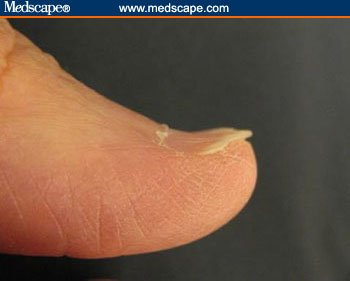
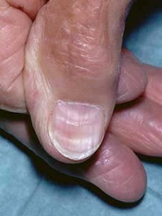
1.3 · Iron deficiency anemia: differential, pitfalls and diagnosis
The iron deficiency diagnosis slide: small, pale cells with low ferritin, low transferrin saturation and a high total iron-binding capacity.
| Differential diagnosis of iron deficiency (slide 13) | How the slide tells it apart |
|---|---|
| Anemia of chronic disease (specifically, anemia of inflammation) | Normal or increased ferritin; serum iron and transferrin saturation low; total iron-binding capacity (TIBC) normal or low |
| Thalassemia | A greater degree of microcytosis for any given hemoglobin; unlike most other anemias, a normal or elevated RBC count and a reticulocytosis; the smear resembles severe iron deficiency |
| Lead poisoning | (1.7) |
| Zinc deficiency | Listed only |
| Sideroblastic anemia | (1.6) |
- Diagnosis (slide 15):
- Complete blood count (CBC): microcytosis (decreased mean corpuscular volume (MCV), <80 fL); hypochromia (decreased mean corpuscular hemoglobin (MCH), pale red cells on the stained smear).
- Iron panel: reduced serum ferritin (with the slide 14 caveat); reduced transferrin saturation (Tsat); increased total iron-binding capacity (TIBC).
- Peripheral smear: microcytic and hypochromic red blood cells.
- Additional tests (slide 16): urinalysis; fecal occult blood test (stool guaiac test) for a gastrointestinal bleed; consider coagulation studies (prothrombin time (PT), partial thromboplastin time (PTT)).
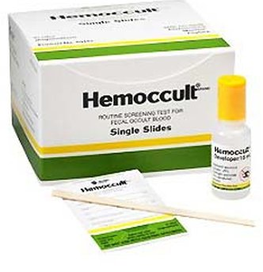
1.4 · Iron deficiency anemia: treatment and iron preparations
- Treatment (slide 17): treat the underlying cause.
- Menstrual blood loss: an oral contraceptive; consider a continuous-cycle contraceptive.
- Gastrointestinal (GI) bleed: GI consult for colonoscopy/endoscopy to evaluate for colorectal cancer.
- Discontinue anticoagulants if the anemia is severe, consulting cardiology.
- Iron replacement.
- Referral to hematology if the diagnosis is not confirmed or the patient is unresponsive to oral iron.
- Oral iron salts (slide 18): ferrous sulfate 325 mg orally once daily or every other day (contains 66 mg of elemental iron). Poor absorption, lots of side effects, poor adherence (“people hate it”). Gastrointestinal side effects are common: nausea and especially constipation, so always give it with at least an as-needed laxative/stool softener. Taking it with food reduces side effects but also decreases absorption.
- Better ideas (slide 19): studies show better absorption and fewer side effects with less frequent dosing; alternate-day dosing is probably best, but adherence can be a problem. Alternative: ferrous sulfate 44 mg/5 mL (as elemental iron) once daily in the morning, on an empty stomach, with a full glass of orange juice; the low pH, citric acid and vitamin C help uptake and limit the free iron reaching the rest of the gut, so fewer side effects.
- Length of treatment (slide 20): an appropriate response is the hematocrit halfway back toward normal within 3 weeks and back to baseline after 2 months; continue iron for 3–6 months after the counts normalize, to replenish iron stores.
- Parenteral iron (slide 21): for patients intolerant of or refractory to oral iron. Most iron-deficient patients need 1–1.5 g of parenteral iron, given over 15 minutes to 1 hour. Ferric pyrophosphate citrate (Triferic): a Food and Drug Administration (FDA)-approved additive to the dialysate that replaces the 5–7 mg of iron lost in each hemodialysis treatment.
Iron deficiency anemia
Defining feature: a microcytic, hypochromic anemia with low ferritin, low transferrin saturation and high total iron-binding capacity; in an adult, look for chronic blood loss
- Definition
- Anemia from too little iron, the cause of 50% of anemia worldwide (slide 11).
- Who gets it
- Women of childbearing age (10% in the United States), children aged 12–36 months (9% iron-deficient), low-income families; men under 50 only 1%; far commoner in developing countries (slide 11).
- Risk factors
- Chronic blood loss (gastrointestinal, menses; most common adult cause); vegan diet, tea, calcium antacids, proton pump inhibitors; malabsorption (gastric bypass, celiac sprue, food allergies); pregnancy, growth in infancy or adolescence (slide 10).
- Classic signs & symptoms
- Fatigue, decreased exercise tolerance, shortness of breath on exertion, pica (slide 12).
- Physical exam findings
- Pallor, smooth tongue, koilonychia (spoon-shaped nails), cheilosis; Plummer-Vinson syndrome (slide 12).
- Diagnostics / tests
- Complete blood count: mean corpuscular volume <80 fL, low mean corpuscular hemoglobin; iron panel: low ferritin, low transferrin saturation, high total iron-binding capacity; smear microcytic, hypochromic (slide 15). Ferritin is an acute phase reactant: a normal or high value does not exclude iron deficiency; add ESR and/or CRP (slide 14). Urinalysis, fecal occult blood test, consider PT/PTT (slide 16).
- First-line treatment
- Treat the cause (gastrointestinal consult for colonoscopy/endoscopy; contraceptive for menstrual loss); oral ferrous sulfate 325 mg daily or every other day with a stool softener, alternate-day dosing probably best; continue 3–6 months after counts normalize; parenteral iron if intolerant or refractory; hematology if unconfirmed or unresponsive to oral iron (slides 17–21).
- Complications
- Almost 1 million deaths a year worldwide (slide 11); otherwise not covered in the lecture.
Slides 10–21, 106
1.5 · Anemia of chronic disease (anemia of chronic inflammation)
How inflammation causes the anemia: interleukin 6 raises hepcidin, which locks iron away.
- What it is (slide 23): also called anemia of chronic inflammation; due to any inflammatory condition: infection, autoimmune disease, neoplasm. It initially resembles iron deficiency anemia.
- Multifactorial etiology (slide 23): inflammatory cytokines, in particular interleukin-6 (IL-6), upregulate hepcidin, which blocks iron absorption; systemic inflammation inhibits renal erythropoietin; likely direct inflammatory bone marrow suppression too.
- Epidemiology (slide 24): the 2nd most common anemia; any age; older adults at increased risk (more chronic inflammatory disease); in the United States about 1 million people older than 65 have it.
- Signs and symptoms (slide 24): similar to iron deficiency anemia, and resemble the causative condition.
- Diagnosis (slide 25): the same labs as iron deficiency anemia; if inflammation is not clinically known, an erythrocyte sedimentation rate (ESR) and/or C-reactive protein (CRP) can help. Serum ferritin should be normal or increased; a ferritin less than 30 ng/mL (67 pmol/L) indicates coexistent iron deficiency.
- Treatment (slide 26): treat the underlying condition (“most important”). May benefit from erythropoietin supplementation (epoetin alfa, Procrit); Food and Drug Administration (FDA)-approved indications: hemoglobin less than 10 g/dL, and anemia due to rheumatoid arthritis, inflammatory bowel disease (IBD), hepatitis C, zidovudine therapy in patients with human immunodeficiency virus (HIV), myelosuppressive chemotherapy of a solid malignancy, or chronic kidney disease (CKD). May need parenteral iron. Referral to hematology is not usually needed.
| Comparison (slide 27) | Anemia of chronic disease | Iron deficiency anemia |
|---|---|---|
| Red blood cells, hemoglobin, hematocrit | ↓ decreased (mild) | ↓ decreased |
| Mean corpuscular volume (MCV) | Normal or ↓ decreased | ↓ decreased |
| Mean corpuscular hemoglobin (MCH), MCH concentration (MCHC) | Normal or ↓ decreased | ↓ decreased |
| Red cell distribution width (RDW) | Varies | ↑ increased |
| Reticulocytes | Usually ↓ decreased | Varies |
| Serum iron | ↑ or ↓ (slide 13 says low; see the note above) | ↓ decreased |
| Ferritin | Normal or ↑ increased | ↓ decreased |
| Total iron-binding capacity (TIBC) | ↓ decreased | ↑ increased |
Anemia of chronic disease
Defining feature: anemia in a patient with an inflammatory illness, with ferritin normal or increased and total iron-binding capacity decreased (opposite to iron deficiency)
- Definition
- Anemia of inflammation: interleukin-6 raises hepcidin, which blocks iron absorption; inflammation suppresses renal erythropoietin and the marrow (slide 23).
- Who gets it
- Any age; older adults at increased risk; the 2nd most common anemia; about 1 million Americans over 65 (slide 24).
- Risk factors
- Any inflammatory condition: infection, autoimmune disease, neoplasm (slide 23).
- Classic signs & symptoms
- Similar to iron deficiency; resemble the causative condition (slide 24).
- Physical exam findings
- Not covered in the lecture beyond “similar to iron deficiency anemia” (slide 24).
- Diagnostics / tests
- Iron deficiency labs; ESR and/or CRP if inflammation is not known; ferritin normal or increased (less than 30 ng/mL means coexisting iron deficiency); total iron-binding capacity decreased (slides 25, 27).
- First-line treatment
- Treat the underlying condition (most important); erythropoietin (epoetin alfa) for hemoglobin <10 g/dL in the approved conditions; possibly parenteral iron; hematology referral not usually needed (slide 26).
- Complications
- Not covered in the lecture; slide 106: can persist while the underlying disease is active.
Slides 13, 23–27, 106
1.6 · Sideroblastic anemia
- Three types (slide 29): hereditary (usually X-linked); acquired (usually with myelodysplastic syndrome (MDS)); acquired/reversible: alcohol (EtOH), certain drugs (isoniazid, chlorambucil), copper deficiency, hypothermia, lead poisoning.
- Modern classification (slide 30): dyserythropoiesis (that is, hypohepcidinemia) and transfusion-dependence (myelodysplastic syndrome, thalassemia). Rare. About 2/3 of cases present in males in early childhood or adolescence, 1/3 in young to middle-aged females; can occur at any age.
- Presentation (slide 31): no specific clinical features other than those of anemia; usually moderate, hematocrit 20–30%.
- Diagnosis (slide 32): variable microcytosis and hypochromia; smear dimorphic (microcytes, normal cells and macrocytes); excess total body iron: increased serum iron, transferrin saturation and ferritin; increased zinc level if caused by copper deficiency; bone marrow aspirate shows ring sideroblasts, the defining feature (iron-containing mitochondria form a basophilic ring around the nucleus).
- Treatment (slide 33): remove the offending agent if acquired; occasionally red cell transfusions; typically poor response to recombinant erythropoietin; occasional responses to oral pyridoxine (50–200 mg/day); luspatercept, recently FDA approved for myelodysplastic syndrome with ringed sideroblasts; refer to hematology if diagnostic or transfusion support is needed.
Sideroblastic anemia
Defining feature: ring sideroblasts on bone marrow aspirate, with iron overload on the panel (serum iron, transferrin saturation and ferritin all high) and a dimorphic smear
- Definition
- An anemia with iron-laden mitochondria ringing the nucleus of red cell precursors; hereditary, acquired (myelodysplastic) or acquired/reversible (slides 29, 32).
- Who gets it
- Rare; 2/3 males in early childhood or adolescence, 1/3 young to middle-aged females; any age (slide 30).
- Risk factors
- X-linked inheritance; myelodysplastic syndrome; alcohol, isoniazid, chlorambucil, copper deficiency, hypothermia, lead poisoning (slide 29).
- Classic signs & symptoms
- No specific features beyond anemia; usually moderate, hematocrit 20–30% (slide 31).
- Physical exam findings
- Not covered in the lecture.
- Diagnostics / tests
- Variable microcytosis and hypochromia; dimorphic smear; increased serum iron, transferrin saturation and ferritin; bone marrow aspirate with ring sideroblasts (slide 32).
- First-line treatment
- Remove the offending agent if acquired; transfusion if severe; pyridoxine sometimes helps; luspatercept for myelodysplastic syndrome with ringed sideroblasts; erythropoietin works poorly; hematology for diagnostic or transfusion support (slide 33).
- Complications
- Not covered in the lecture; slide 106: variable prognosis, clonal forms need continued follow-up.
Slides 29–33, 106
1.7 · Lead poisoning (plumbism)
- Blood (slide 34): a microcytic/hypochromic anemia with basophilic stippling on the smear (an abnormal collection of nucleic acids in the cells).
- Causes (slide 34): industrial exposure; gasoline sniffing; lodged bullets; cooking utensils containing lead; lead-based paint chips; the Flint water crisis.
- Symptoms (slide 35): the neurologic system is most vulnerable (irritability, behavioral changes, peripheral neuropathy); gastrointestinal symptoms (abdominal colic, nausea and constipation, occasionally diarrhea); there may be a lead line in the gums.
- Treatment (slide 35): stop the exposure; treatment is based on the lead level; in severe cases with neurologic effects, chelating agents: succimer (Chemet), dimercaprol, EDTA.
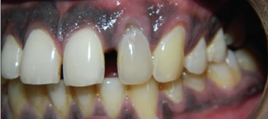
Lead poisoning
Defining feature: microcytic anemia with basophilic stippling plus neurologic and gastrointestinal symptoms, sometimes a lead line in the gums
- Definition
- Plumbism: lead toxicity causing a microcytic, hypochromic anemia (slide 34); also a reversible cause of sideroblastic anemia (slide 29).
- Who gets it
- People exposed to lead (slide 34); otherwise not covered in the lecture.
- Risk factors
- Industrial exposure, gasoline sniffing, lodged bullets, lead cooking utensils, lead paint chips, contaminated water (Flint) (slide 34).
- Classic signs & symptoms
- Irritability, behavioral changes, peripheral neuropathy; abdominal colic, nausea, constipation, occasionally diarrhea (slide 35).
- Physical exam findings
- A lead line in the gums (slides 35–36).
- Diagnostics / tests
- Microcytic, hypochromic anemia; basophilic stippling on the smear; the lead level guides treatment (slides 34–35).
- First-line treatment
- Stop the exposure; chelation (succimer, dimercaprol, EDTA) in severe cases with neurologic effects (slide 35).
- Complications
- Neurologic effects (slide 35); otherwise not covered in the lecture.
Slides 29, 34–36
1.8 · Macrocytic and megaloblastic anemia
- Macrocytic anemia (slide 38): anemia with a mean corpuscular volume (MCV) >100 fL. Two categories:
- Megaloblastic anemia: B12 and folate deficiency.
- Non-megaloblastic anemia: alcohol (common) or drug; hypothyroidism; liver failure; bone marrow dysplasia. Non-megaloblastic causes usually have an MCV <115 fL.
- Megaloblastic anemia (slide 39): a macrocytic anemia with megaloblasts (early red cell precursors), characterized by macrocytosis with macro-ovalocytes and hypersegmented neutrophils. DNA synthesis is impaired, causing nuclear-cytoplasmic asynchrony and impaired hematopoiesis; other myeloid cells (granulocytes, megakaryocytes) are affected to a lesser degree.
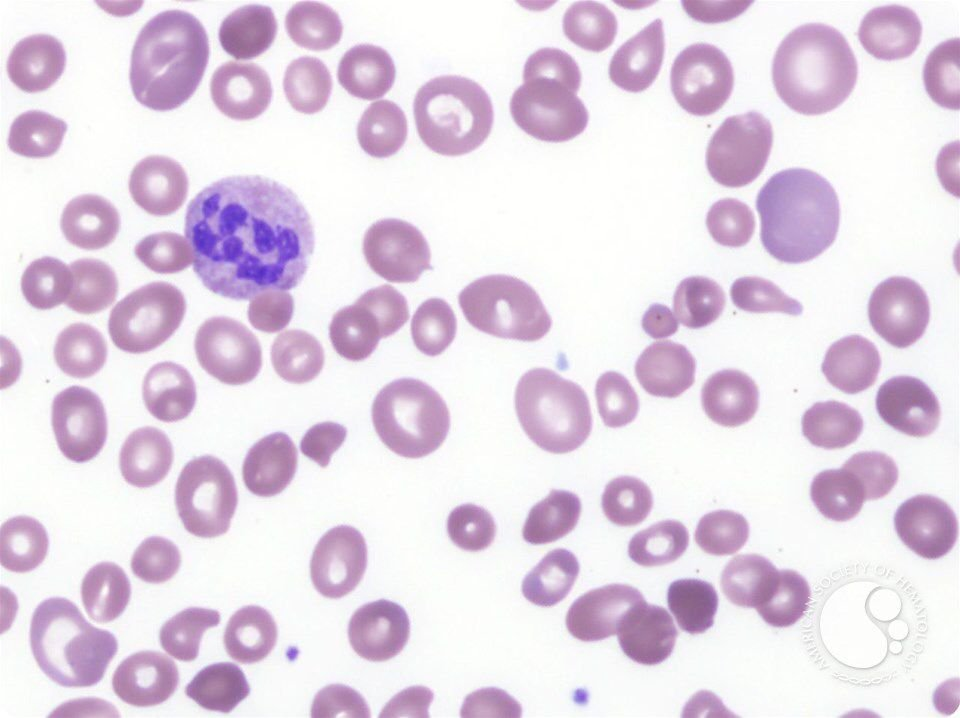
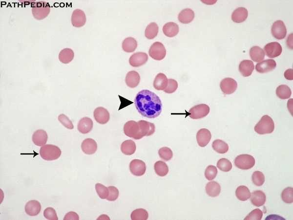
| Complete blood count in megaloblastic anemia (slide 41): macrocytic, normochromic | Result |
|---|---|
| Red blood cells, hemoglobin, hematocrit | ↓ decreased |
| Mean corpuscular volume (MCV) | ↑ increased (macrocytosis) |
| Mean corpuscular hemoglobin (MCH), MCH concentration (MCHC) | Normal to slightly ↑ increased |
| Red cell distribution width (RDW) | ↑ increased (anisocytosis: cells of unequal size) |
| Reticulocytes | Varies |
- Folate deficiency: causes (slide 42): dietary (impoverished, indigent, alcohol use disorder, elderly); increased demand (pregnancy); impaired absorption (proximal small bowel); drugs: methotrexate, 5-fluorouracil (5-FU), hydroxyurea, phenytoin (Dilantin), metformin.
1.9 · Vitamin B12 (cobalamin) deficiency and pernicious anemia
- B12 absorption (slide 43): peptic digestion releases dietary B12; parietal cells in the gastric mucosa release intrinsic factor, which binds free B12 and protects it from digestive enzymes; the B12–intrinsic factor complex passes to the distal ileum and binds cubilin (the intrinsic factor receptor); absorbed B12 binds transcobalamin and is stored in the liver. Normal liver stores last about 3–4 years or more.
- Pernicious anemia (slide 44): the most frequent cause of B12 deficiency; an autoimmune reaction against parietal cells and/or intrinsic factor, causing gastric atrophy and an increased risk of gastric cancer.
- Clinical features (slide 45): findings of all anemias (fatigue, pallor, headache; dyspnea and heart failure when severe); gastrointestinal symptoms (glossitis, oral ulcers). The distinguishing finding of B12 deficiency is neurologic: demyelination, especially of the dorsal and lateral spinal cord tracts; neuropsychiatric changes (depression, irritability, insomnia, cognitive slowing, dementia); symmetric numbness, tingling, burning to the hands and feet (“stocking and glove distribution”), progressing to an unsteady gait and loss of position sense. Neurologic findings may or may not improve with B12.
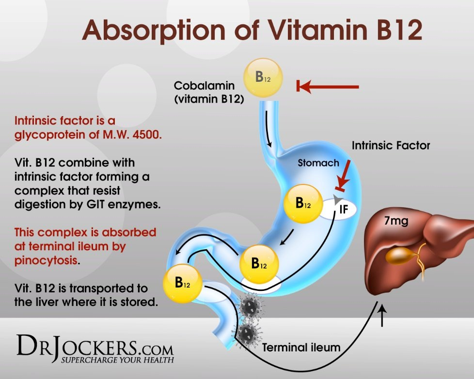
Glossitis (slide 46)
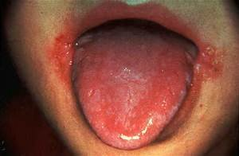
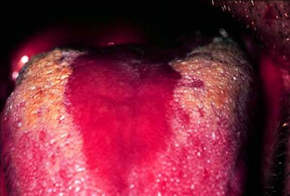
1.10 · Laboratory evaluation of macrocytic anemia and replacement
Homocysteine rises in B12 and folate deficiency; methylmalonic acid rises in B12 deficiency only.
- All macrocytic anemias (slide 47): B12 and folate levels are the initial tests (not very sensitive) plus a peripheral blood smear. If borderline, or suspicion continues:
- Homocysteine level: converting homocysteine to methionine needs both B12 and folate, so it rises in either deficiency.
- Methylmalonic acid (MMA) level: converting L-methylmalonyl CoA to succinyl CoA needs only B12, so methylmalonic acid is elevated in B12 deficiency but NOT in folate deficiency.
- Pernicious anemia (slide 48): anti-intrinsic factor (anti-IF) antibodies: specific but not sensitive; anti-parietal cell antibodies: neither sensitive nor specific; gastric biopsy may show chronic atrophic gastritis. In reality, a megaloblastic picture that corrects with B12 is the normal diagnostic pathway.
- Replacement (slide 49): before replacing folate, evaluate for B12 deficiency; otherwise the labs may improve while permanent neurologic symptoms worsen.
- B12 injections 1000 mcg subcutaneously or intramuscularly weekly for 3 weeks; or oral cobalamin 1000–2000 mcg daily.
- Folic acid 1 mg by mouth or parenterally daily for 1–2 weeks.
| Homocysteine and methylmalonic acid (slide 47) | Homocysteine | Methylmalonic acid |
|---|---|---|
| B12 deficiency | Elevated | Elevated |
| Folate deficiency | Elevated | Not elevated |
Vitamin B12 deficiency (pernicious anemia)
Defining feature: megaloblastic anemia with neurologic findings (dorsal and lateral column demyelination, stocking and glove paresthesias) and an elevated methylmalonic acid
- Definition
- Megaloblastic anemia from lack of B12; pernicious anemia, the most frequent cause, is autoimmune destruction of parietal cells and/or intrinsic factor (slides 39, 44).
- Who gets it
- Not covered in the lecture beyond the causes; liver stores last about 3–4 years, so deficiency is slow to appear (slide 43).
- Risk factors
- Autoimmune gastritis (pernicious anemia); anything breaking the absorption chain (stomach, intrinsic factor, distal ileum) (slides 43–44).
- Classic signs & symptoms
- Fatigue, headache; symmetric numbness, tingling, burning in the hands and feet; depression, irritability, insomnia, cognitive slowing, dementia (slide 45).
- Physical exam findings
- Pallor; glossitis (smooth, red tongue), oral ulcers; unsteady gait, loss of position sense (slides 45–46).
- Diagnostics / tests
- MCV >100 fL; macro-ovalocytes and hypersegmented neutrophils; B12 and folate levels first (not very sensitive); homocysteine and methylmalonic acid both elevated; anti-intrinsic factor antibodies (specific, not sensitive); gastric biopsy atrophic gastritis; correction with B12 is the usual diagnostic pathway (slides 38–41, 47–48).
- First-line treatment
- B12 1000 mcg subcutaneously or intramuscularly weekly for 3 weeks, or oral cobalamin 1000–2000 mcg daily; check B12 before giving folate (slide 49).
- Complications
- Neurologic deficits that may not improve (slides 45, 106); gastric cancer risk in pernicious anemia (slide 44); heart failure if severe (slide 45).
Slides 38–49, 106
Folate deficiency
Defining feature: megaloblastic anemia with an elevated homocysteine but a normal methylmalonic acid, in a poorly nourished, alcohol-using, pregnant or methotrexate-treated patient
- Definition
- Megaloblastic anemia from lack of folate (slides 38–39, 42).
- Who gets it
- The impoverished, indigent, people with alcohol use disorder, the elderly; pregnancy (slide 42).
- Risk factors
- Poor diet; pregnancy; proximal small bowel malabsorption; methotrexate, 5-fluorouracil, hydroxyurea, phenytoin, metformin (slide 42).
- Classic signs & symptoms
- Findings of all anemias (slide 45); the neurologic findings are what distinguish B12 deficiency, not folate (slide 45).
- Physical exam findings
- Not covered in the lecture separately from B12 deficiency.
- Diagnostics / tests
- MCV >100 fL with macro-ovalocytes and hypersegmented neutrophils; folate level; homocysteine elevated, methylmalonic acid not (slides 41, 47).
- First-line treatment
- Evaluate for B12 deficiency first; folic acid 1 mg by mouth or parenterally daily for 1–2 weeks (slide 49).
- Complications
- Giving folate to an unrecognized B12 deficiency lets the neurologic damage progress (slide 49).
Slides 38–42, 47, 49
1.11 · The laboratory tests so far
| Laboratory tests discussed so far (slide 50) | Tests |
|---|---|
| All anemias | Complete blood count (CBC); reticulocyte count; calculate the reticulocyte index |
| For microcytic anemia | Serum iron; transferrin saturation; total iron-binding capacity; serum ferritin; fecal occult blood test; urinalysis |
| For macrocytic anemias | B12 and folate levels; peripheral smear review; homocysteine and methylmalonic acid |
| If pernicious anemia is suspected | Anti-intrinsic factor antibodies; anti-parietal cell antibodies; parenteral B12 trial |
1.12 · Anemia of chronic kidney disease (anemia due to renal failure)
- Slide 52: extremely common in chronic kidney disease (CKD); incidence rises as the glomerular filtration rate (GFR) declines and it is almost universal in dialysis patients. Primarily, but not completely, due to decreased erythropoietin (EPO).
- Slide 53 (guideline summary):
- Mechanism: the erythropoietin response is inappropriately low; inflammation/hepcidin restrict available iron.
- Order: complete blood count, reticulocyte count, ferritin and transferrin saturation (TSAT); assess other causes of anemia.
- Interpret: a low transferrin saturation may indicate iron-restricted erythropoiesis despite a normal or high ferritin.
- Treat: correct iron deficiency; consider oral or intravenous iron and an erythropoiesis-stimulating agent (ESA) based on chronic kidney disease stage, hemoglobin and risk.
- Follow-up: monitor hemoglobin, iron and blood pressure; nephrology for advanced chronic kidney disease, erythropoiesis-stimulating agent decisions or uncertainty.
| Complete blood count in anemia of chronic kidney disease (slide 52) | Result |
|---|---|
| Red blood cells, hemoglobin, hematocrit | ↓ decreased |
| Mean corpuscular volume (MCV) | Normal (normocytic) |
| Mean corpuscular hemoglobin (MCH), MCH concentration (MCHC) | Normal |
| Red cell distribution width (RDW) | ↑ increased |
| Reticulocytes | ↓ decreased |
Anemia of chronic kidney disease
Defining feature: a normocytic anemia with low reticulocytes in a patient with falling glomerular filtration rate or on dialysis, from too little erythropoietin
- Definition
- Anemia of renal failure, primarily from decreased erythropoietin, with inflammation/hepcidin restricting iron (slides 52–53).
- Who gets it
- Patients with chronic kidney disease; rises as glomerular filtration rate falls; almost universal on dialysis (slide 52).
- Risk factors
- Declining glomerular filtration rate; dialysis (slide 52).
- Classic signs & symptoms
- Not covered in the lecture beyond those of anemia.
- Physical exam findings
- Not covered in the lecture.
- Diagnostics / tests
- CBC (low counts, normal MCV, MCH and MCHC, high RDW, low reticulocytes), reticulocyte count, ferritin and transferrin saturation; low saturation with a normal or high ferritin can mean iron-restricted erythropoiesis; assess other causes (slides 52–53).
- First-line treatment
- Correct iron deficiency (oral or intravenous iron); consider an erythropoiesis-stimulating agent by stage, hemoglobin and risk (slide 53); Triferic in the dialysate replaces the iron lost in each hemodialysis (slide 21).
- Complications
- Not covered in the lecture; monitor blood pressure (slide 53); slide 106: often chronic.
Slides 21, 52–53, 106
1.13 · Aplastic anemia
Aplastic anemia treatment.
- Slide 55: pancytopenia, the loss of all three cell lines (red cells, platelets and white cells). Loss of hematopoietic stem cells (HSC) is the defining feature. Half of cases occur in the first three decades of life (a small peak in childhood and a 2nd small peak at ages 20–25); male-to-female ratio about 1:1; 0.6 to 6.1 cases per million. Five-year survival is >75% after a bone marrow transplant from a suitable donor; the majority of untreated patients die within one year.
- Pathophysiology (slide 56): autoimmune; direct injury to hematopoietic stem cells (drugs, chemicals, radiation); viral infections; genetic causes. Drugs, chemicals, viruses or mutations can alter the stem cells and predispose them to autoimmune destruction.
- Associations (slide 57): cytotoxic or chemotherapeutic drugs (not called aplastic anemia if it is an expected effect); chloramphenicol; ionizing radiation; toxins (benzene, pesticides); clonal abnormalities (paroxysmal nocturnal hemoglobinuria (PNH), myelodysplastic syndrome, acute myeloid leukemia (AML)); inherited (Fanconi anemia, diagnosed in childhood; other rare conditions).
- Slide 58: manifestations of pancytopenia: recurrent infections (neutropenia); bleeding, petechiae, purpura (thrombocytopenia); fatigue, pallor (anemia). Bone marrow biopsy is required for diagnosis and to exclude other causes. Urgent/emergent consultation with a hematologist/oncologist. Treatment: bone marrow transplant.
Aplastic anemia
Defining feature: pancytopenia (infections, bleeding and anemia together) from loss of hematopoietic stem cells, confirmed by bone marrow biopsy
- Definition
- Loss of hematopoietic stem cells causing loss of all three cell lines (slide 55).
- Who gets it
- Half in the first three decades (peaks in childhood and at 20–25); males and females equally; 0.6–6.1 per million (slide 55).
- Risk factors
- Chemotherapy (expected effect excluded), chloramphenicol, ionizing radiation, benzene, pesticides, viral infection, paroxysmal nocturnal hemoglobinuria, myelodysplastic syndrome, acute myeloid leukemia, Fanconi anemia (slides 56–57).
- Classic signs & symptoms
- Recurrent infections, bleeding, fatigue (slide 58).
- Physical exam findings
- Petechiae, purpura, pallor (slide 58).
- Diagnostics / tests
- CBC showing pancytopenia; bone marrow biopsy is required (slides 55, 58).
- First-line treatment
- Urgent/emergent hematology-oncology consultation; bone marrow transplant (slide 58); infection and bleeding precautions (slide 106).
- Complications
- Most untreated patients die within one year; five-year survival >75% after transplant from a suitable donor (slide 55).
Slides 55–58, 106
1.14 · Leukopenia and neutropenia
- Recognize (slide 59): leukopenia is a low total white blood cell count (WBC); neutropenia is defined by the absolute neutrophil count (ANC).
- Calculate (slide 59):
ANC = WBC × (neutrophils + bands)% / 100
| Neutropenia severity (slide 59) | Absolute neutrophil count |
|---|---|
| Mild | 1,000–1,500 cells/µL |
| Moderate | 500–999 cells/µL |
| Severe | <500 cells/µL |
- Common causes (slide 59): viral illness, medications/chemotherapy, autoimmune disease, nutrient deficits, marrow pathology.
- Order and interpret (slide 59): repeat the complete blood count with differential, review the trend and the peripheral smear; check the other cell lines.
- Escalate (slide 59): persistent or unexplained severe neutropenia, other cytopenias or an abnormal smear → hematology.
- Clinical risk (slide 60): severity, duration and immune status predict infection risk; profound neutropenia may have subtle findings.
- Emergency (slide 60): fever with an ANC <500 (or expected to fall below 500) needs prompt assessment and empiric antibiotics. Immediate evaluation: vitals, targeted examination and cultures; start antipseudomonal therapy without delay.
- Chronic care (slide 60): stop an offending drug when appropriate; correct deficiencies; selected patients need granulocyte colony-stimulating factor (G-CSF).
- Education and follow-up (slide 60): report fever or rigors promptly; monitor counts; reversible causes often resolve; marrow disorders need specialist care.
- Prognosis (slide 60): transient viral leukopenia often resolves after recovery; persistent or severe neutropenia carries greater infection risk and may indicate marrow disease.
Leukopenia / neutropenia
Defining feature: a low white count, graded by the absolute neutrophil count; fever with a count below 500 is an emergency
- Definition
- Leukopenia: low total white count; neutropenia: defined by the absolute neutrophil count = WBC × (neutrophils + bands)% / 100 (slide 59).
- Who gets it
- Not covered in the lecture beyond the causes.
- Risk factors
- Viral illness, medications/chemotherapy, autoimmune disease, nutrient deficits, marrow pathology (slide 59).
- Classic signs & symptoms
- Infection; fever or rigors; findings may be subtle when neutropenia is profound (slide 60).
- Physical exam findings
- Vitals and a targeted examination for a source (slide 60); otherwise not covered in the lecture.
- Diagnostics / tests
- Repeat CBC with differential, trend, peripheral smear, other cell lines; grade mild 1,000–1,500, moderate 500–999, severe <500 cells/µL; cultures if febrile (slides 59–60).
- First-line treatment
- Fever with ANC <500: prompt empiric antipseudomonal antibiotics; chronic: stop an offending drug, correct deficiencies, G-CSF for selected patients; hematology for persistent or unexplained severe neutropenia (slides 59–60).
- Complications
- Infection, greater when persistent or severe; may signal marrow disease (slide 60).
Slides 59–60
1.15 · Hemolytic anemias: what they share and their causes
The genetic causes of hemolysis; the upper smear shows spherocytes.
- Definition (slide 61): shortened survival of circulating red cells due to their premature destruction; numerous causes, mild to severe, acute to chronic. An unexpected rise in the reticulocyte count, even without anemia or symptoms, should prompt consideration of hemolysis. The red cell (about 6 µm) squeezes through capillaries of about 2 µm.
- What lets the red cell survive shear stress (slide 62): a highly deformable membrane and cytoskeleton; a strong redox environment that prevents oxidative stress; an optimal surface-to-volume ratio (the biconcave disc has about 40% more surface area than a sphere; the cytoskeletal proteins are spectrin and ankyrin). Hemolysis occurs when the cell can no longer withstand this.
- Three things all hemolytic anemias share (slide 63): a decreased red cell life span; a compensatory increase in red cell production; retention of the products of red cell destruction (including iron). So: marrow hyperplasia and increased reticulocytes; in severe chronic hemolysis, extramedullary hematopoiesis in the liver, spleen and lymph nodes.
| Causes of hemolysis | Examples on the slides |
|---|---|
| Intracorpuscular defects: intrinsic to the red cell itself (slide 64) | |
| Hemoglobinopathies | Sickle cell disease, thalassemia, unstable hemoglobin variants |
| Membrane/cytoskeletal defects | Hereditary spherocytosis, elliptocytosis, stomatocytosis |
| Metabolic abnormalities | G6PD and pyruvate kinase deficiencies |
| Extracorpuscular defects (slide 65) | |
| Immune-mediated | Autoimmune hemolytic anemia, transfusion reactions |
| Hypersplenism | — |
| Mechanical trauma | Shear stress |
| Oxidative stress | G6PD deficiency, methemoglobinemia |
| Infection | Malaria, babesiosis |
| Toxin | Snake and insect bites, burns, copper poisoning |
- Genetic causes (slide 75): defects in the red cell membrane, hemoglobin itself or enzymes.
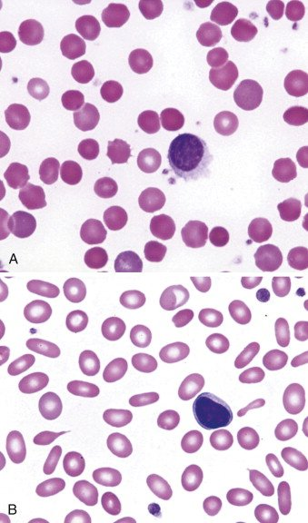
1.16 · Hemolysis: where it happens, labs, smear, workup and presentation
- Slide 66: the cell’s contents are released; the concern is mainly hemoglobin.
- Extravascular hemolysis, the more common way: mainly in the spleen and liver; macrophages engulf the red cells and release unconjugated bilirubin, which is conjugated in the liver.
- Intravascular hemolysis: free hemoglobin is picked up by haptoglobin and taken to the liver; this is incomplete, so some hemoglobin appears in the urine.
- Three more tests (slide 67):
- Bilirubin (conjugated and unconjugated): both likely elevated, unconjugated > conjugated; clinical jaundice appears when total bilirubin exceeds 2.0 mg/dL (normal 0.3–1.2 mg/dL).
- Haptoglobin: DECREASED or absent with intravascular hemolysis.
- Lactate dehydrogenase (LDH): a common cytoplasmic enzyme, elevated with any cell lysis.
- Smear (slide 68): order a peripheral smear on any patient with suspected hemolysis; the hallmark finding of hemolysis is schistocytes (red blood cell fragments).
- Workup for a suspected hemolytic anemia (slide 69): complete blood count, reticulocyte count, serum bilirubin, lactate dehydrogenase, haptoglobin, urinalysis, peripheral smear review.
- Clinical presentation (slide 70): typical anemia symptoms (fatigue, shortness of breath, chest pain, pallor; severe: chest pain, high-output cardiac failure, shock). Differentiating findings: jaundice, splenomegaly, joint pain, hematuria. Often the first indication is an increase in the reticulocyte count.
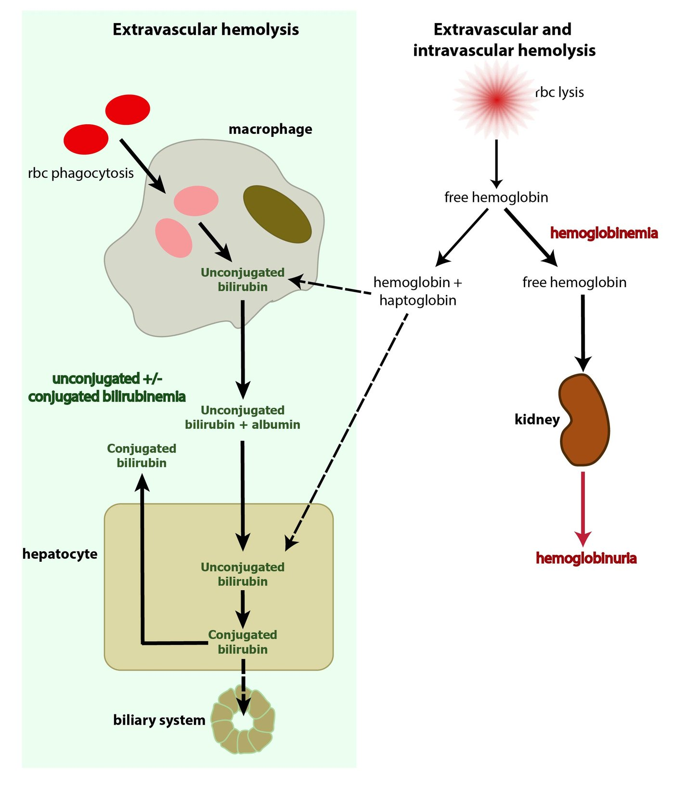
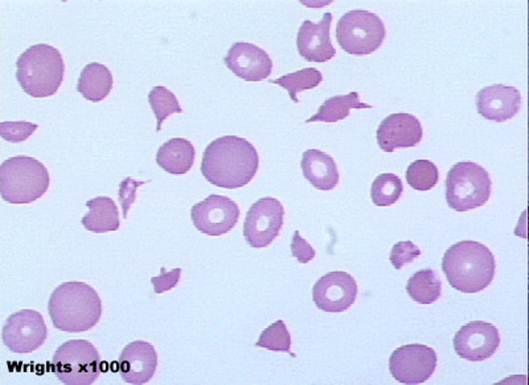
1.17 · Autoimmune hemolytic anemia
- Slide 71: an antibody against the red cell membrane; may be primary (de novo antibody production) or secondary. Transfusion reaction is an example. Primary autoimmune hemolytic anemia (AIHA) is almost always IgG. Common secondary causes: viruses (human immunodeficiency virus (HIV), hepatitis, Epstein-Barr virus (EBV), SARS-CoV-2); autoimmune disorders (lupus, rheumatoid arthritis, scleroderma, ulcerative colitis); lymphoproliferative disorders (leukemias and lymphomas, multiple myeloma); pregnancy.
- Direct antiglobulin test (DAT), or Coombs test (slide 72): the patient’s red cells are washed and combined with Coombs reagent; the reagent antibodies bind only cells coated with IgG or complement; if positive, they cross-link and the red cells agglutinate (precipitate).
- Important note (slide 73): autoimmune hemolytic anemia is associated with an increased risk of venous thromboembolism (VTE). Consider a D-dimer and bilateral leg ultrasound for deep vein thrombosis (DVT) and/or pulmonary embolism (PE); VTE prophylaxis for inpatients, and consider it in outpatients.
- Venous thromboembolism prophylaxis. Autoimmune hemolytic anemia is associated with an increased risk of venous thromboembolism, so remember venous thromboembolism prophylaxis for inpatients, and consider it in outpatients.
- Treatment (slide 74): consider immediate stabilization if hemoglobin <6, a rapid decline, or an unstable patient (contact the blood bank: compatible blood must be found). Rule out secondary causes. Treat with glucocorticoids initially (for example, prednisone 60–100 mg daily) and rituximab (Rituxan), an anti-CD20 antibody. Other options: immunosuppressants, splenectomy.
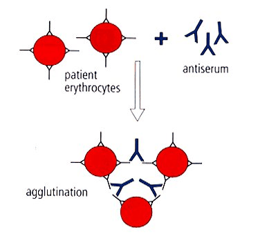
Autoimmune hemolytic anemia
Defining feature: hemolysis with a positive direct antiglobulin (Coombs) test; watch for venous thromboembolism
- Definition
- Antibody against the red cell membrane; primary (almost always IgG) or secondary (slide 71).
- Who gets it
- Patients with the secondary causes below; otherwise not covered in the lecture.
- Risk factors
- HIV, hepatitis, Epstein-Barr virus, SARS-CoV-2; lupus, rheumatoid arthritis, scleroderma, ulcerative colitis; leukemia, lymphoma, multiple myeloma; pregnancy; transfusion (slide 71).
- Classic signs & symptoms
- Anemia symptoms; jaundice, splenomegaly, joint pain, hematuria (slide 70).
- Physical exam findings
- Jaundice, splenomegaly (slide 70); signs of deep vein thrombosis (slide 73).
- Diagnostics / tests
- Hemolysis workup (slide 69); positive direct antiglobulin (Coombs) test (slide 72); D-dimer and bilateral leg ultrasound if thrombosis is suspected (slide 73).
- First-line treatment
- Stabilize if hemoglobin <6, falling fast or unstable (blood bank); rule out secondary causes; glucocorticoids first (prednisone 60–100 mg daily), rituximab; immunosuppressants, splenectomy; VTE prophylaxis for inpatients (slides 73–74).
- Complications
- Venous thromboembolism (slide 73); relapse (slide 107).
Slides 69–74, 107
1.18 · G6PD (glucose-6-phosphate dehydrogenase) deficiency
Bite cells (left image) and Heinz bodies (right image); the hemolysis is both intravascular and extravascular.
- Slide 76: the most common genetic disorder of red cells (200–400 million people); usually triggered by drugs with high oxidative potential. X-linked recessive, so generally only males are affected; carrier females have two red cell populations, one normal and one deficient, and are generally unaffected.
- Pathophysiology (slide 77): G6PD is needed in the glutathione pathway; without reduced glutathione the red cell is more susceptible to oxidative damage. Heinz bodies form inside the cell; splenic macrophages remove them by taking a chunk out of the cell (the bite cell). The result is intravascular and extravascular hemolysis.
- Slide 79: an X-linked recessive disorder of an enzyme that protects against oxidative damage; exposure to oxidative stress causes an acute hemolytic anemia. Common triggers:
- Fava beans
- Naphthalene (mothballs)
- Antimalarials (the slide names chloroquine, but Prof. Ward said chloroquine does not carry the same risk; see the conflict note above)
- Nitrofurantoin
- Trimethoprim/sulfamethoxazole (Bactrim)
- Methylene blue
- Phenazopyridine
- Quinolones
- Prevalence (slide 80): Kurdish Jews 60–70%; Sardinians 4–35% (by village); Nigerians 22%; Thai 17%; American Black people 11–12%; Brazilian Black people 8%; Greeks 6%; South China about 6%; India 3%; Japanese and Koreans 0–1%.
- Clinical presentation (slide 81): no symptoms until exposed to oxidative stress; drug-induced hemolysis is acute, of variable severity, with a lag of 2–3 days. Symptoms: abdominal pain, jaundice, dark urine, splenomegaly.
- Diagnosis (slide 82): labs consistent with hemolytic anemia; during an attack the smear may show Heinz bodies and bite cells; confirmed by a low G6PD level roughly 8 weeks after an attack (the slide asks, unanswered, “Why not during an attack?”).
- Treatment (slide 82): “Don’t eat that” (avoid the trigger); hydrate; transfuse if needed; possible splenectomy only for recurrent attacks.
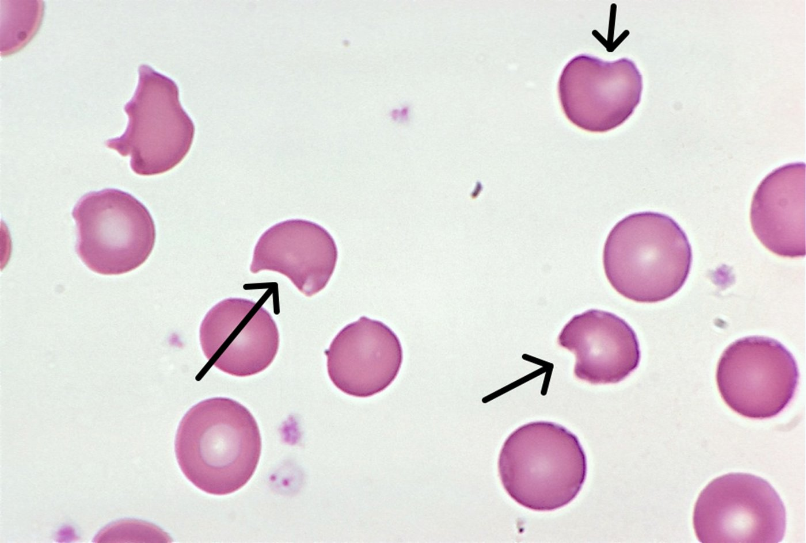
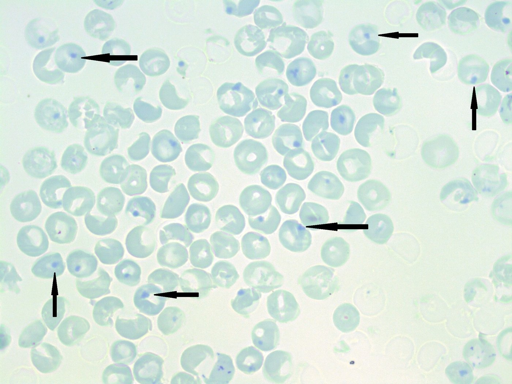
G6PD deficiency
Defining feature: a male who develops acute hemolysis 2–3 days after an oxidant (fava beans, nitrofurantoin, trimethoprim/sulfamethoxazole, a quinolone), with Heinz bodies and bite cells
- Definition
- X-linked recessive lack of the enzyme that protects red cells from oxidative damage; the most common genetic disorder of red cells (slides 76–77, 79).
- Who gets it
- Generally males (carrier females generally unaffected); highest in Kurdish Jews, Sardinians, Nigerians, Thai people; 11–12% of American Black people (slides 76, 80).
- Risk factors
- Oxidant exposure: fava beans, naphthalene (mothballs), antimalarials, nitrofurantoin, trimethoprim/sulfamethoxazole, methylene blue, phenazopyridine, quinolones (slide 79).
- Classic signs & symptoms
- No symptoms until exposed; then abdominal pain, jaundice, dark urine after a 2–3 day lag (slide 81).
- Physical exam findings
- Jaundice, splenomegaly (slide 81).
- Diagnostics / tests
- Hemolysis labs; Heinz bodies and bite cells on the smear during an attack; confirm with a low G6PD level about 8 weeks after the attack (slide 82).
- First-line treatment
- Avoid the trigger; hydrate; transfuse if needed; splenectomy only for recurrent attacks (slide 82).
- Complications
- Acute hemolytic anemia (intravascular and extravascular) (slides 77, 79); slide 107: usually favorable with trigger avoidance.
Education after an attack. Education for this deficiency is to avoid oxidative triggers and seek care for jaundice or dark urine, the signs of an acute hemolytic attack. With trigger avoidance the prognosis is usually favorable.
Slides 76–82, 107
1.19 · Thalassemia
“Be familiar with our lab testing”: the thalassemia lab slide.
- Slide 85: mutations causing deficient synthesis of alpha or beta globins; there is a deficiency of hemoglobin and most erythroblasts die in the marrow. Main problem: the imbalance in expression leads to accumulation and precipitation of globin subunits, which causes red cell destruction in the spleen.
- Epidemiology (slide 86): alpha thalassemia is prevalent in Southern China, Malaysia, Thailand and the Mediterranean region, with mild forms in people of African origin. Asian ancestry often carries the alpha thalassemia 1 trait (αα/––), with a higher risk of hydrops fetalis; African ancestry more often the alpha thalassemia 2 trait (α–/α–). (Beta thalassemia: “generally in patients of African origin”, a loose line; see the note above.)
- Clinical course (slide 87): variable by mutation; varying degrees of hemolytic anemia (generally ↓ hemoglobin, ↓ mean corpuscular volume, ↓ mean corpuscular hemoglobin, ↓ reticulocyte index (marrow failure), Coombs negative), iron overload (bold and underlined on the slide), splenomegaly, extramedullary hematopoiesis, jaundice, skeletal changes.
- Laboratory testing (slide 88): complete blood count, iron studies, reticulocyte count; hemoglobin analysis by hemoglobin electrophoresis; gene testing. Preconception testing and counseling is available with a family history.
- Genetics and treatment (slide 89): 4 alpha globin genes and 2 beta globin genes; the phenotype depends on how many are mutated, from a silent carrier (α–/αα) to incompatible with life. Treatment is supportive: transfusion only when absolutely necessary (it can worsen iron overload), folic acid, genetic counseling.
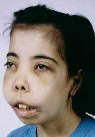
Thalassemia
Defining feature: marked microcytosis for the hemoglobin with a normal or high red cell count, Coombs-negative hemolysis, and diagnosis by hemoglobin electrophoresis
- Definition
- Deficient alpha or beta globin synthesis; the unpaired globin chains precipitate and the cells are destroyed in the spleen (slide 85).
- Who gets it
- Alpha: Southern China, Malaysia, Thailand, the Mediterranean; Asian ancestry often alpha thalassemia 1 trait (αα/––, higher risk of hydrops fetalis), African ancestry alpha thalassemia 2 trait (α–/α–) (slide 86).
- Risk factors
- Family history (inherited globin gene mutations; 4 alpha and 2 beta genes) (slides 88–89).
- Classic signs & symptoms
- Varying hemolytic anemia, jaundice; severity depends on the mutation, from silent carrier to incompatible with life (slides 87, 89).
- Physical exam findings
- Splenomegaly, jaundice, skeletal changes (facial bone overgrowth) (slide 87).
- Diagnostics / tests
- CBC (low hemoglobin, MCV, MCH and reticulocyte index; normal or high red cell count), iron studies, reticulocyte count, Coombs negative; hemoglobin electrophoresis; gene testing (slides 13, 87–88).
- First-line treatment
- Supportive: transfusion only when absolutely necessary, folic acid, genetic counseling; preconception testing with a family history (slides 88–89).
- Complications
- Iron overload (worsened by transfusion), extramedullary hematopoiesis, hydrops fetalis (slides 86–87, 89).
Slides 13, 85–89, 107
1.20 · Sickle cell anemia: genetics, distribution, screening and manifestations
- Slide 90: a mutation of a beta globin gene; hemoglobin S (HbS) is two alpha globins and two mutant beta globins (α2βS2). Under low oxygen tension, HbS polymerizes and the cell forms a sickle shape.
- Distribution (slide 91): follows the malaria belt closely; heterozygotes (HbAS, sickle trait) are 90% less likely to have severe malaria than people with only normal hemoglobin (HbA).
- Screening: four testing periods (slide 92):
- Preconception: identify parents whose children would be at risk.
- Prenatal: chorionic villus sampling (CVS) (the slide adds “at 9wk gestation”; see the note above).
- Neonatal: now done in all 50 states. Affected children who test negative or bypass screening usually present within the first two years; symptoms usually start around 5 months with the switch from fetal hemoglobin (HbF) to HbS: failure to thrive, pain, anemia, splenomegaly, multiple chronic infections, and swelling of the hands and feet (extremities) from vaso-occlusion.
- Post-natal.
- Clinical manifestations (slide 93):
- Anemia: almost universal, hematocrit usually 15–30%.
- Sickle cell pain crisis: microvascular occlusions; acute pain, tenderness, anxiety, tachycardia.
- Infarction of any tissue with vascular beds: splenic infarct, aseptic necrosis especially of the femoral or humeral heads, retinopathy, kidney disease.
- Leg ulcers.
- Stroke (pediatric), 300 times higher than unaffected children; 25% of patients with sickle cell anemia have a stroke (cerebrovascular accident (CVA)) by age 45.
- Priapism.
- Increased susceptibility to encapsulated bacteria.
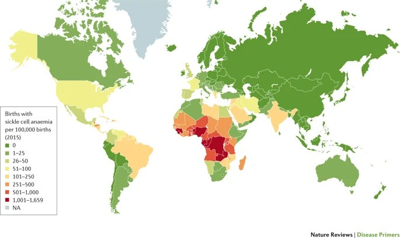
1.21 · Acute chest syndrome and the complications of sickle cell disease
“Be familiar with our treatments.”
- Acute chest syndrome (slide 94): the leading cause of death in sickle cell disease (SCD); often with an acute pain event; >10% mortality in adults. The cause is multifactorial: infection, infarction, pulmonary embolism (PE), fat embolism; reactive lung disease increases the risk. Consider it with chest pain, fever, shortness of breath, signs of a respiratory illness, hypoxemia, and pulmonary infiltrates on a chest X-ray (CXR).
- Complications diagram (slide 95), acute and chronic, head to foot: neurocognitive dysfunction, meningitis, stroke; retinopathy, post-hyphema glaucoma, retinal infarction; pulmonary hypertension, acute chest syndrome, acute pain event; indirect hyperbilirubinemia, sickle hepatopathy, gallstones; cardiomegaly, diastolic heart failure; anemia, leukocytosis, septicemia; albuminuria, isosthenuria, kidney injury, papillary necrosis; functional asplenia, splenic infarction, splenic sequestration; delayed puberty, erectile dysfunction, priapism; complications of pregnancy; avascular necrosis, bone marrow infarction, osteomyelitis; skin ulcers; chronic pain.
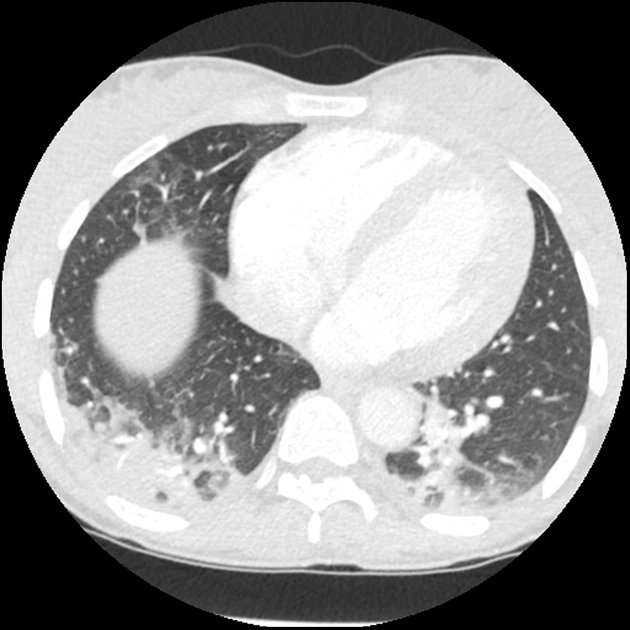
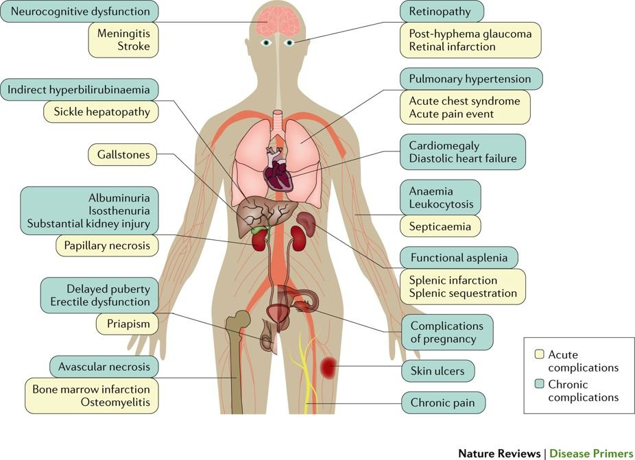
1.22 · Hemoglobin C, fetal hemoglobin and sickle cell management
Sickle cell management.
- Hemoglobin C (slide 96): a different mutation in the beta globin gene; HbC does not polymerize. Hemoglobin SC disease (sickle cell SC) combines a βC with a βS (HbSC, α2βSβC) and generally runs a course between sickle cell anemia (SCA) and sickle cell trait (SCT).
- Fetal hemoglobin (slide 97): HbF (α2γ2) is normally <1%. Some people have hereditary persistence of fetal hemoglobin (HPFH); expression varies, but 10–20% HbF seems to be a threshold for decreased severity of sickle cell disease or beta thalassemia.
- Management (slide 98):
- Disease modification: hydroxyurea raises fetal hemoglobin and reduces vaso-occlusive events.
- Red flags: fever, chest pain/hypoxemia or a new neurologic deficit need urgent assessment.
- Prevention: vaccinations, indicated childhood penicillin prophylaxis and infection education.
- Complications: transfusion/exchange for selected severe events; monitor alloimmunization and iron loading.
- Long-term: hematology follow-up, organ surveillance, consideration of curative therapies.
- Prevention and emergency care vary with age, genotype and clinical history.
- Preventing infection in sickle cell disease. Sickle cell disease brings increased susceptibility to encapsulated bacteria, so prevention is vaccinations, indicated childhood penicillin prophylaxis and infection education.
Sickle cell anemia
Defining feature: HbS polymerizes at low oxygen tension and sickles, causing vaso-occlusive pain crises and infarction; acute chest syndrome is the leading cause of death
- Definition
- A beta globin gene mutation making hemoglobin S (α2βS2), which polymerizes and sickles when oxygen is low (slide 90).
- Who gets it
- Populations along the malaria belt (sub-Saharan Africa highest); trait (HbAS) protects against severe malaria (slide 91).
- Risk factors
- Two sickle genes (both parents carriers, identified by preconception screening); reactive lung disease raises acute chest syndrome risk (slides 92, 94).
- Classic signs & symptoms
- Pain crisis (acute pain, tenderness, anxiety, tachycardia); in babies from about 5 months: failure to thrive, pain, swelling of the hands and feet, infections (slides 92–93).
- Physical exam findings
- Splenomegaly in infants; leg ulcers; priapism; retinopathy (slides 92–93).
- Diagnostics / tests
- Screening in four periods: preconception, prenatal (chorionic villus sampling), neonatal (all 50 states), post-natal (slide 92); hematocrit usually 15–30% (slide 93).
- First-line treatment
- Hydroxyurea (raises fetal hemoglobin, fewer vaso-occlusive events); vaccinations and childhood penicillin prophylaxis; urgent care for fever, chest pain/hypoxemia or neurologic deficit; transfusion/exchange for selected severe events; hematology follow-up (slide 98).
- Complications
- Acute chest syndrome (leading cause of death, >10% adult mortality); stroke (300 times the childhood risk; 25% by age 45); splenic infarct, aseptic necrosis of the femoral or humeral heads, kidney disease; encapsulated bacterial infection; iron loading and alloimmunization from transfusion (slides 93–95, 98).
Slides 90–98, 107
1.23 · Hemochromatosis: primary and secondary
Hemochromatosis treatment: therapeutic phlebotomy.
- Slide 100: iron overload, excess iron deposited throughout the body. Asymptomatic early on; over time iron deposition causes oxidative stress, fibrosis and organ dysfunction, most commonly in the liver, heart, joints, endocrine organs and skin.
- Primary: an autosomal recessive disorder of the genes that control iron absorption.
- Secondary: excessive iron supplementation, chronic liver disease, anemia.
- Signs and symptoms (slide 101): fatigue (the line is cut off on the slide); other symptoms by the organ affected: skin bronzing (face, neck, groin, extensor surfaces of the forearms and lower legs); joint pain, especially the second and third metacarpophalangeal joints and knees; cardiac: cardiomyopathy, chest pain, dyspnea on exertion.
- Clinical pearl (slide 102): iron in the pituitary causes hypogonadotropic hypogonadism: decreased libido, impotence or amenorrhea; on exam, small testes, gynecomastia, reduced body hair.
- Diagnosis (slide 103): the iron panel (see the table). Ferritin is an acute phase reactant, so look at the whole lab picture. Primary against secondary on liver biopsy with Prussian blue stain:
- Primary: iron accumulates in the liver cells (hepatocytes) with sparing of Kupffer cells until later in the disease.
- Secondary (parenteral iron overload): iron accumulates predominantly in Kupffer cells.
- Management (slide 104, guideline summary):
- Primary disease: therapeutic phlebotomy with ferritin-guided follow-up.
- Family evaluation: consider HFE testing for appropriate patients with elevated transferrin saturation (TSAT)/ferritin; offer first-degree relative screening.
- Education: avoid iron supplements and excessive alcohol; individualize dietary advice.
- Secondary overload: treat the cause; consider chelation when phlebotomy is unsuitable.
- Prognosis: early treatment can prevent organ damage; assess fibrosis and monitor cirrhosis for liver cancer.
| Iron overload cut-offs (slide 103) | Result |
|---|---|
| Ferritin <300 micrograms per liter AND transferrin saturation (TSAT) <45% | No iron overload |
| Caution | Ferritin is an acute phase reactant: interpret with the entire lab picture |
| Liver biopsy, Prussian blue stain (slide 103) | Where the iron sits |
|---|---|
| Primary hemochromatosis | Hepatic (liver cell) accumulation, Kupffer cells spared until later |
| Secondary (parenteral iron overload) | Predominantly in Kupffer cells |
Hemochromatosis (primary and secondary)
Defining feature: iron overload with fatigue, skin bronzing, second and third metacarpophalangeal joint pain, cardiomyopathy or hypogonadism; ferritin ≥300 or transferrin saturation ≥45% means overload is possible
- Definition
- Excess iron deposition causing oxidative stress, fibrosis and organ dysfunction; primary (autosomal recessive iron-absorption genes) or secondary (slide 100).
- Who gets it
- HFE hemochromatosis usually presents in adults (slide 105); first-degree relatives (slide 104).
- Risk factors
- Primary: inherited (autosomal recessive). Secondary: excessive iron supplementation, chronic liver disease, anemia (slide 100); transfusion in thalassemia (slide 89).
- Classic signs & symptoms
- Asymptomatic early; fatigue; joint pain (second and third metacarpophalangeal joints, knees); chest pain, dyspnea on exertion; decreased libido, impotence, amenorrhea (slides 100–102).
- Physical exam findings
- Skin bronzing (face, neck, groin, extensor forearms and lower legs); small testes, gynecomastia, reduced body hair (slides 101–102).
- Diagnostics / tests
- Iron panel: ferritin <300 micrograms per liter and transferrin saturation <45% = no overload (ferritin is an acute phase reactant); HFE testing; liver biopsy with Prussian blue (primary spares Kupffer cells; secondary loads them) (slides 103–104).
- First-line treatment
- Primary: therapeutic phlebotomy with ferritin-guided follow-up; secondary: treat the cause, chelation when phlebotomy is unsuitable; avoid iron supplements and excessive alcohol; screen first-degree relatives (slide 104).
- Complications
- Organ dysfunction (liver, heart, joints, endocrine, skin); cardiomyopathy; hypogonadotropic hypogonadism; fibrosis, cirrhosis and liver cancer (slides 100–104, 107).
Slides 100–105, 107
1.24 · Across the lifespan, follow-up and prognosis
The lifespan slide.
| Cytopenias across the lifespan (slide 105): population | What changes clinically / care priority |
|---|---|
| Infants | Use neonatal CBC ranges; recognize inherited anemias and abnormal newborn screens; coordinate pediatric hematology. |
| Child | Assess diet and inherited anemia; consider rare genetic or transfusion-related iron overload; use weight-based treatment. |
| Adolescent | Heavy menses: check CBC/ferritin, treat iron deficiency and control bleeding; support adherence and transition to adult care. |
| Adult | Evaluate GI/gynecologic blood loss, pregnancy and CKD; HFE hemochromatosis usually presents in adults—screen family. |
| Elderly | Check iron/B12 deficiency, CKD, drugs and marrow disorders (MDS); tailor treatment to function, comorbidities and goals. |
In the table: complete blood count (CBC), gastrointestinal (GI), chronic kidney disease (CKD), myelodysplastic syndrome (MDS), as on the slide.
| Anemia: follow-up and prognosis (slide 106): condition | Patient education / referral | Prognosis |
|---|---|---|
| Iron deficiency | Identify blood loss; reinforce iron use; GI referral if indicated. | Usually resolves once the cause and iron stores are corrected. |
| Chronic disease | Treat inflammation; monitor CBC and iron; coordinate care. | Can persist while the underlying disease is active. |
| Sideroblastic | Remove triggers; refer if cause is unclear or transfusions needed. | Variable; clonal forms may require continued follow-up. |
| Megaloblastic | Treat B12/folate deficiency; monitor neurologic recovery. | Counts improve; delayed B12 treatment may leave deficits. |
| Aplastic | Urgent hematology; infection/bleeding precautions; discuss therapy. | Depends on severity and response to treatment. |
| Renal (CKD) | Monitor Hb, iron and BP; refer for ESA or advanced CKD. | Often chronic; may improve with iron or ESA as indicated. |
Hemoglobin (Hb), blood pressure (BP), erythropoiesis-stimulating agent (ESA).
| Hemolysis & iron overload: follow-up (slide 107): condition | Patient education / referral | Prognosis |
|---|---|---|
| Sickle cell | Vaccines, fever/chest pain precautions, hematology follow-up. | Lifelong disease; prevention reduces complications. |
| Thalassemia | Hematology for severe forms; iron monitoring; genetic counseling. | Trait often mild; severe forms need lifelong monitoring. |
| G6PD deficiency | Avoid oxidative triggers; seek care for jaundice or dark urine. | Usually favorable with trigger avoidance. |
| Autoimmune hemolysis | Treat cause; monitor relapse/thrombosis; hematology care. | Relapse may occur; outcome depends on cause and response. |
| Hemochromatosis | Iron monitoring/phlebotomy; family screening; avoid excess iron. | Early care limits injury; established cirrhosis may persist. |
Population points elsewhere in the deck: infants and children — 9% of children aged 12–36 months are iron-deficient (slide 11), growth raises iron demand (slide 10), sickle cell disease presents around 5 months as HbF gives way to HbS and within the first two years (slide 92), pediatric stroke risk is 300 times higher (slide 93), childhood penicillin prophylaxis (slide 98), Fanconi anemia is diagnosed in childhood (slide 57), aplastic anemia peaks in childhood and at 20–25 (slide 55); adolescents — growth (slide 10), 2/3 of sideroblastic anemia presents in boys in childhood or adolescence (slide 30); adults — women of childbearing age 10% iron-deficient (slide 11); elderly — anemia of chronic disease (about 1 million Americans over 65, slide 24) and dietary folate deficiency (slide 42).
3 · Hematologic Malignancies Part I
Lecture 49 · Nicole Gannon, PA-C (guest lecturer; Program Director of Mayo’s Hematology/Oncology NP/PA fellowship, slide 3) · Wednesday 18 November 2026, 1–3 PM
Instructional Objectives
HEMATOLOGY — HEMATOLOGIC MALIGNANCIES — Nicole Gannon, PA-C
- Compare and contrast the etiologies, epidemiology, risk factors, clinical manifestations, differential diagnosis, diagnostic testing (including ordering and interpretation), management (acute and chronic, including applicable rehabilitative and palliative care), appropriate referrals, patient education, and prognosis of the following hematological malignancies: 1. Acute lymphocytic leukemia 2. Acute myelogenous leukemia 3. Lymphoma 4. Hodgkin 5. Non-Hodgkin
- Identify medical care strategies for disorders of hematological malignancies in the lecture topic list for the following populations. Infant a. child b. adolescent c. adult d. elderly
- Compare and contrast the etiologies, epidemiology, risk factors, clinical manifestations, differential diagnosis, diagnostic testing (including ordering and interpretation), management (acute and chronic, including applicable rehabilitative and palliative care), appropriate referrals, patient education, and prognosis of the following hematological malignancies: 1. Chronic lymphocytic leukemia 2. Chronic myelogenous leukemia 3. Polycythemia vera a. primary b. secondary 4. Multiple myeloma 5. Myelodysplasia (myelodysplastic syndromes)
- Identify medical care strategies for disorders of hematological malignancies in the lecture topic list for the following populations. a. infant b. child c. adolescent d. adult e. elderly
Quoted as the syllabus prints them (CMS syllabus pages 22–23): objectives 1–2 are the syllabus block “Hematological Malignancies 1”, objectives 3–4 the block “Hematologic Malignancies II” (the first population list prints “Infant” with no letter, kept as printed). The decks split the two lectures differently from the syllabus. This deck (Part I) teaches acute lymphoblastic leukemia and acute myeloid leukemia (syllabus block 1, objective 1) and myelodysplastic syndrome, the myeloproliferative neoplasms including polycythemia vera, and chronic myelogenous leukemia (syllabus block II, objective 3). Lymphoma (Hodgkin and non-Hodgkin), chronic lymphocytic leukemia and multiple myeloma are introduced here (3.4) and taught in Lecture 50 (section 4). Secondary polycythemia (objective 3, item 3b) is on neither deck. Where each objective is answered: overview 3.1–3.4; acute lymphoblastic leukemia 3.5–3.7; acute myeloid leukemia 3.8–3.11; myelodysplastic syndrome 3.12; polycythemia vera, myelofibrosis and essential thrombocythemia 3.13–3.15; chronic myelogenous leukemia 3.16–3.18; the populations (objectives 2 and 4) 3.19.
The deck’s own objectives (slide 2): 1) Review normal hematopoiesis and hematological cell lines. 2) Provide an overview of hematological malignancies by definition, etiology, and epidemiology. 3) Compare and contrast the etiologies, epidemiology, risk factors, clinical manifestations, diagnostic testing, differential diagnosis, management, patient education, and prognosis of the following: a) Acute lymphocytic leukemia (ALL) b) Acute myelogenous leukemia (AML) c) Myelodysplastic Syndrome (MDS) d) Myeloproliferative Neoplasms (MPN) e) Chronic myelogenous leukemia (CML).
What Prof. Gannon stressed (live recording, Wednesday 18 November; two parts, about 82 minutes; the tape starts on slide 5, so the title and objective slides are not on it). She gives few “learn this” cues, most of them in the first half; there is no “this will be on the exam” sentence. Each is marked with a gold star where it is taught below.
- Auer rods = acute myeloid leukemia (slides 31, 36): “I want you to highlight, star, underline this ... Auer rods ... this is pathognomonic for AML,” then “So yes, remember, Auer rods, pathognomonic, AML.”
- 20% blasts (slides 25, 38, 47): “This is important, write this down. The way to ... definitively diagnose [leukemia] is 20% or greater blast in the bone marrow.” She repeated it for acute myeloid leukemia and drilled it on myelodysplastic syndrome (10%? no; 15%? no; 20% = leukemia).
- BCR-ABL in acute lymphoblastic leukemia (slide 20): “this is one I want you to star, highlight, underline. Remember that ALL is associated with this BCR-ABL mutation ... chromosome nine and ... 22. ... Write it down.”
- Reed-Sternberg cells = Hodgkin lymphoma (slide 15): “If you’re ever taking a test and you see a Reed Sternberg cell, they want you to remember Hodgkin lymphoma” (“little owl eyes”).
- B symptoms (slides 15, 22): “I want you to make sure you’re writing down what are B symptoms”: fevers, drenching night sweats, unexplained weight loss.
- Normal hematopoiesis (slide 5): “I want you to ingrain this in your brains” and “It cannot emphasize enough, learn this.”
- Acute lymphoblastic leukemia is bimodal (slide 18): “So remember ALL in children and then older adults.”
- Lumbar puncture in acute lymphoblastic leukemia (slides 23, 25): “the big one I would want you to remember here”: central nervous system leukemia is common in ALL.
- Acute promyelocytic leukemia (slide 43): “the thing I want you to remember about APL, bleeding, DIC, coagulopathy, and that it does not need chemotherapy. ATRA and arsenic are the treatments.”
- Bone marrow biopsy and flow cytometry (slide 36): “your backbone testing, I want you to remember.”
- JAK2 in polycythemia vera (slide 52): “you may come across this on your testing, you might wanna remember that or write that down.”
- ECOG performance status (slide 10): knowing it is “important when we’re talking about treatment for any of these hematologic malignancies.”
- She also walked through the chronic myelogenous leukemia milestone table (slide 64: under 10% at 3 months, under 1% at 6, under 0.1% at 12) and transplant terms (slide 12: “words that you should have heard”).
- Played down: the French-American-British subtypes (slide 33: “You don’t have to know anything about this, really, except that you will hear a lot about APL”); the secondary-AML subgroup modifiers on slide 38 (“don’t worry about that”); the protocol pictures (slides 26, 39: “you are not expected to memorize this”); flow cytometry markers (“You don’t have to know all that”); tyrosine kinase inhibitor side effects (slide 63). Never taught out loud: the slide 61 chronic myelogenous leukemia differential, leukapheresis (slide 35), PML-RARA (slide 43), smoking cessation (slides 52, 54).
What the slides themselves stress (bold and underline).
- Underlined: environmental, genetic and autoimmune risk factors (slide 9); “Almost all will require bone marrow biopsy and/or flow cytometry” (slide 11); abnormal leukocytes (slide 14); “Most common malignancy under the age of 15” (slide 18); flow cytometry and bone marrow biopsy (slides 23, 24, 36, 37); “Auer rods confirms myeloid etiology” (slide 36); splenomegaly (slide 59); bone marrow biopsy and PCR for BCR-ABL1 mutation (slide 60).
- Bold: incidence rises with older age (slide 9); Reed-Sternberg cells, lymphadenopathy (slide 15); M protein, CRAB features (slide 16); acute lymphoblastic leukemia outcomes poor over 40 (slide 18); BCR-ABL ... Philadelphia chromosome, hyperdiploidy (slide 20); blasts ≥ 20% (slides 25, 38); Philadelphia-negative regimens and Philadelphia-positive: TKI + chemotherapy (slide 27); 5-year survival ~90% under 15 (slide 28); Auer rods, >60 years (slide 31); secondary AML (slides 32, 38); gum involvement (slide 35); fit/unfit acute myeloid leukemia therapy and allogeneic transplant IF in remission (slide 40); DIC, arsenic trioxide and ATRA, >90% cure (slide 43); low risk + anemia: erythropoiesis-stimulating agents, only curative therapy is allogeneic transplant (slide 48); “Classic: Pruritis with warm baths or showers” (slide 52); aspirin, hydroxyurea for essential thrombocythemia (slide 54); BCR-ABL ... Philadelphia chromosome and “now largely a chronic disorder” (slide 56); marked leukocytosis, thrombocytosis (slide 59); the three phases (slide 62); tyrosine kinase inhibitors (slide 63); normal lives on TKIs (slide 65); referral to hematology (slides 29, 42, 66).
Where the slides are loose or disagree (the slides are what is tested; where two slides differ, or she said something different, the guide says which wording to learn)
- “Most common leukemia” (slide 31 against Lecture 50 slides 4 and 6). Slide 31 calls acute myeloid leukemia the “Most common form of leukemia, comprising 80% of all cases” (and she said so aloud); Lecture 50 calls chronic lymphocytic leukemia the “Most common adult form of leukemia” and the “Most common leukemia in Western Hemisphere”; slide 58 gives chronic myelogenous leukemia “15–20% of all leukemias”. The decks contradict each other, so “the most common leukemia” is not something to lean on for any one leukemia.
- Chronic phase blasts (slide 62). The slide says “no or few blasts (<5%)”; out loud she described chronic phase as “like five to 6% blast in the marrow”, and accelerated phase is “often 10–19%”. Learn the slide’s words; the 5–9% gap has no phase on the slide.
- Blast phase number. The slide gives none (“behaves as an acute leukemia, usually AML like”); she said “greater than 20% in the marrow”. Learn the slide’s description.
- Treating accelerated phase. Slide 63: “Advanced CML (accelerated or blast phase) has different considerations.” Out loud she said accelerated phase is still treated “the same way you would a chronic phase”. Learn the slide line; no treatment for accelerated phase is given on the slides.
- Acute myeloid leukemia blast threshold (slide 38). “Historically defined by myeloid blasts ≥ 20%, new guidelines note that certain genetic mutations may diagnosis with only 10% or higher.” The definition to learn is ≥ 20%; the 10% exception applies only to certain genetic mutations, as the slide words it.
- Acute lymphoblastic leukemia ages (slide 18 against slide 21). Slide 18: most common malignancy under 15, adult peak around 50; slide 21: children under 5 and adults over 50. Both describe the same bimodal pattern; learn each line as its slide reads.
- Survival figures. Children: slide 18 “>90%”, slide 28 “~90%” (aloud, once, “greater than 95%”). Adults: slide 18 “~30–40% ... long term remission” over 40, slide 28 “~40%” five-year overall survival. Learn the pattern (children do well, adults much worse), not a precise number.
- Lymphadenopathy in acute lymphoblastic leukemia (slide 22). The slide: “>50% present w/ lymphadenopathy, hepatomegaly, or splenomegaly.” She said that “must be textbook”: in practice she sees little lymphadenopathy except in younger people with mediastinal masses. The slide line stands.
- Very high-risk myelodysplastic syndrome (slide 49). The slide’s “median OS of 9 months” is overall survival; out loud she turned the nine months into time to leukemia. Learn: median overall survival 9 months, >80% risk of AML within 5 years.
- Stopping tyrosine kinase inhibitors (slide 63 against slide 66, and the recording). Slide 63 says major molecular response (MMR) for 2 years; slide 66 says sustained major molecular remission x 2 years. Out loud: at least three years on treatment with two years of deep molecular remission, and elsewhere “five years”. Learn the slide wording: sustained major molecular response for 2 years, with recurrence in 50%.
- Philadelphia chromosome in two diseases. It is the most common mutation in adult acute lymphoblastic leukemia (slide 20) and the hallmark of chronic myelogenous leukemia (slides 56–57). The slides do not call Philadelphia-positive ALL favorable or unfavorable; they give its treatment (TKI + chemotherapy, slide 27).
- Slide 35 says “Mononuclear and monocytic subtypes may have gum involvement”; slide 33 names the acute myelomonocytic/monocytic leukemias (M4 and M5) as the ones with more extramedullary involvement. Read slide 35 as the M4 and M5 subtypes.
- Slide 61 names “CMML” with no expansion anywhere in the deck (and it was not taught aloud); learn the other half of the line, myelofibrosis.
- Slide 10’s picture credits the “Eastern Clinical Oncology Group”; the ECOG scale belongs to the Eastern Cooperative Oncology Group. The grades are what matter.
- Slide typos, corrected here: “myelokaryocytic” = megakaryocytic (slide 33; slide 32 reads “megakaryocytic”); “fused lysomes” = fused lysosomes (slide 36); “allogenic” = allogeneic (slide 48); “Pruritis” = pruritus (slide 52); “von Willebrand” spelled “Willebrand” (slide 54); “hematopoesis” = hematopoiesis (slides 45, 46); “genetic alternations” = alterations (slide 6); “regiments” = regimens (slide 27); “may diagnosis” = may diagnose (slide 38); “may safety discontinue” = safely (slide 63).
- Joke lines, not facts: slides 26 and 39 (“Management for PA Students ... Just kidding....”) are full treatment protocols shown as a joke; nothing on them is to be learned. Slide 52’s “call a friendly vampire, I mean phlebotomist” means phlebotomy.
3.1 · Normal hematopoiesis and clonality
The hematopoiesis tree is the map for the whole lecture: where the clone starts on it decides the disease (3.2).
- Normal hematopoiesis (slide 5) begins in the bone marrow with hematopoietic stem cells, which differentiate into the myeloid and lymphoid progenitors and further differentiate into the terminally differentiated cell lines.
- Myeloid line (from the myeloid progenitor cell): megakaryocyte (→ platelets), eosinophil, basophil, erythrocytes, monocyte (→ dendritic cell and macrophage), neutrophil.
- Lymphoid line (from the lymphoid progenitor cell): T cell, B cell, NK (natural killer) cell; the B cell gives rise to the plasma cell.
- What the cells do (slide 5): immunity (neutrophils, NK cells, lymphocytes), oxygen exchange (erythrocytes), the clotting cascade (platelets), and many other functions.
- Clonality and tumorigenesis (slide 6): cancer development is generally believed to be a multi-stage process; the initial step is an oncogenic mutation in a single somatic cell (clone). Mutations that cause cancer give the cell clonal advantages, so the mutant clone expands and accumulates additional genetic alterations, resulting in an irreversible, invasive, proliferative disease.
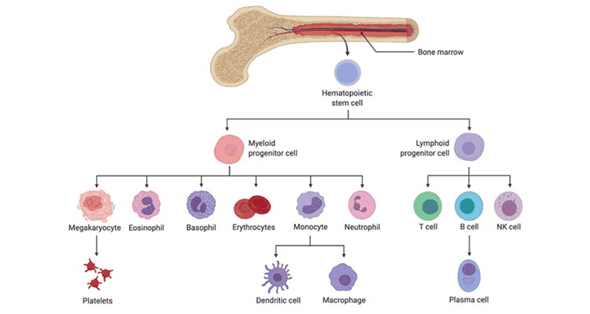
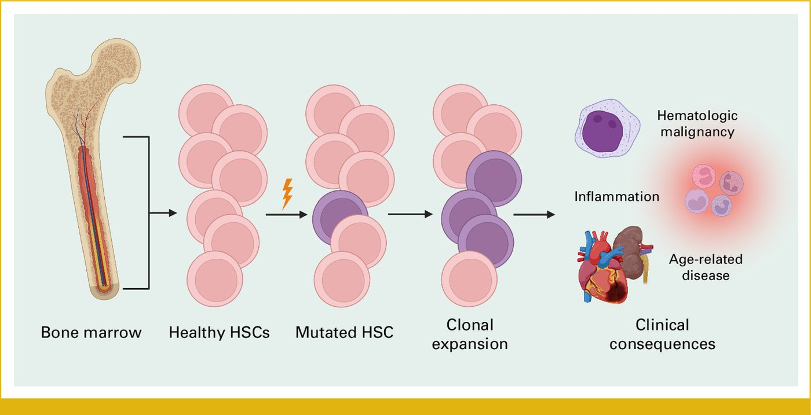
3.2 · Hematologic malignancies: definition, families, epidemiology and risk factors
- Definition (slide 7): cancers originating from blood-forming tissues or the lymphatic system, resulting from mutation in and proliferation of a hematologic clone (monoclonal).
- Classification (slide 7): leukemias, lymphomas and plasma cell disorders; the underlying cell of origin determines the type (lymphoid or myeloid). On the slide’s diagram: the acute leukemias circle the stem cell and the early progenitors; the chronic leukemias circle the mature cells; the lymphomas circle the lymphoid progenitor and the T, B and NK cells; myeloma and other plasma cell disorders circle the plasma cell.
- Epidemiology (slide 8): new cases of leukemia, lymphoma and myeloma were estimated at 9.4% of all new cancer cases in the United States in 2025; about 1.8 million people in the United States are living with or in remission from a hematologic malignancy; hematologic malignancies cause an estimated 9.1% of cancer-related deaths (the slide’s pie chart: lymphoma 46%, leukemia 35%, myeloma 19% of the 192,070 estimated new cases).
- Risk factors (slide 9):
- Environmental factors: radiation and specific chemical exposures (like benzene).
- Genetic factors: family history is important; some hematologic malignancies have a higher incidence with trisomies or other genetic disorders.
- Autoimmune disorders: may be secondary to intrinsic immunosuppression or to treatments.
- They vary by disease but broadly increase in incidence with older age; the few exceptions include acute lymphoblastic leukemia (ALL) and some kinds of lymphomas.
- The slide’s picture adds lifestyle factors (smoking, poor diet and toxins) and age (“risk increases with age due to cumulative genetic damage”).
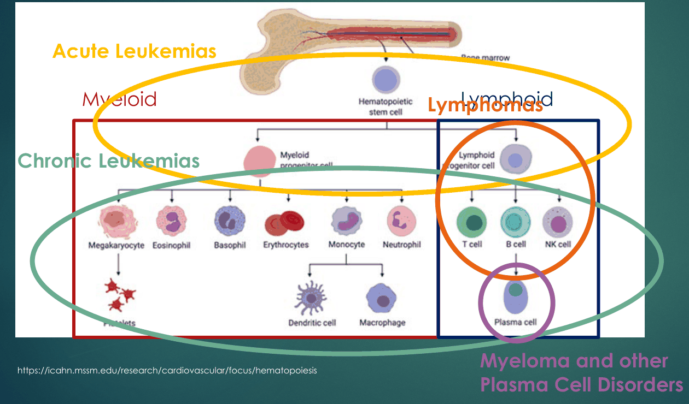
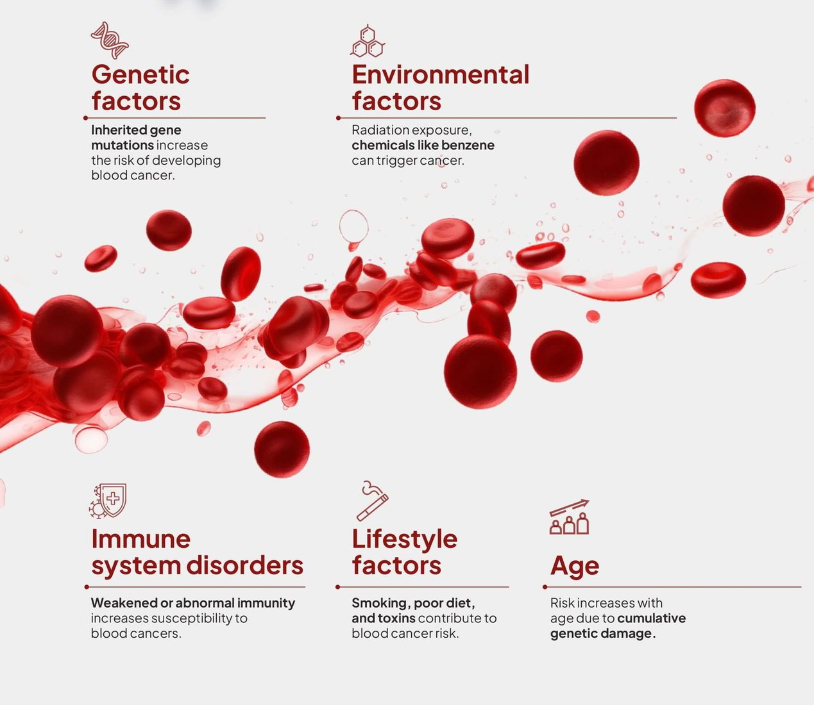
3.3 · Performance status, presentation, work-up and transplant terms
Be able to grade a patient from a description of the day.
- Performance status and fitness (slide 10): the prognosis of hematologic malignancies is often dictated by patient fitness, particularly for older patients. ECOG (Eastern Cooperative Oncology Group) “scores” are often used to characterize fitness, and are frequently used as part of clinical trial entry criteria.
| ECOG performance status (slide 10): grade | Description of patient |
|---|---|
| 0 | Fully active, able to carry on all predisease performance without restriction |
| 1 | Restricted in physically strenuous activity but ambulatory and able to carry out work of a light or sedentary nature, e.g., light housework, office work |
| 2 | Ambulatory and capable of all self-care but unable to carry out any work activities; up and about more than 50% of waking hours |
| 3 | Capable of only limited self-care; confined to bed or chair more than 50% of waking hours |
| 4 | Completely disabled; cannot carry on any self-care; totally confined to bed or chair |
| 5 | Dead |
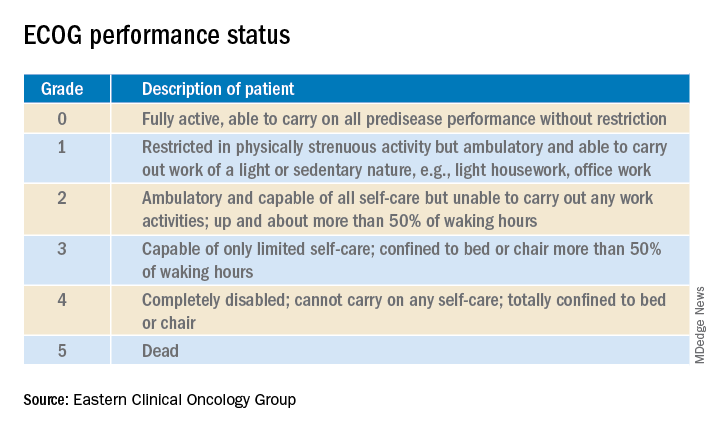
- Presentation (slide 11): frequently non-specific symptoms: fatigue from anemia; bleeding from thrombocytopenia; swollen node(s) for lymphomas; non-specific bone pain for myeloma. Sometimes first detected from incidental cytopenias (abnormal counts on a complete blood count (CBC)) or elevated protein levels (for myeloma) on electrolyte/chemistry panels.
- Work-up (slide 11): almost all will require bone marrow biopsy and/or flow cytometry to ensure the correct diagnosis.
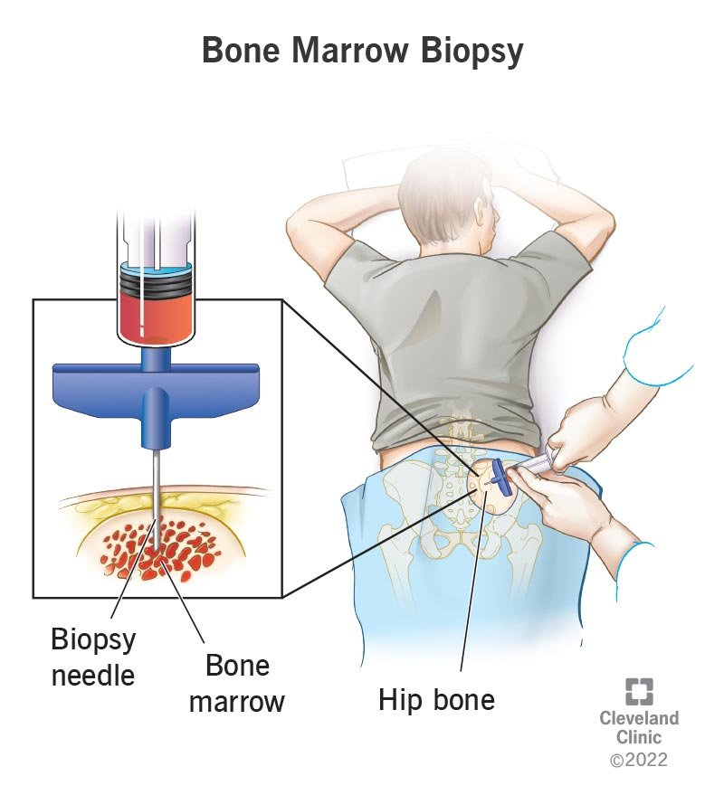
| Transplant terminology (slide 12) | Meaning on the slide |
|---|---|
| Hematopoietic stem cell transplant/transplantation (HSCT) | Administering healthy hematopoietic stem cells to patients with dysfunctional or depleted bone marrow. Also known as bone marrow transplant; often done after high dose chemotherapy +/- radiation |
| Allogeneic stem cell transplant | Use of a healthy donor’s stem cells |
| Autologous stem cell transplant (“stem cell rescue”) | Use of the person’s own stem cells, often to rescue high dose chemotherapy |
3.4 · The major categories: leukemias, lymphomas and multiple myeloma
And “I want you to make sure you’re writing down what are B symptoms”: fevers, drenching night sweats, weight loss (slides 15, 22).
- Leukemia (slide 14): a progressive malignant condition of the bone marrow and other blood-forming organs resulting in increased numbers of immature and/or abnormal leukocytes.
- Acute leukemias arise from more immature, progenitor white blood cells (WBCs) and cause rapid proliferation of this clone.
- Chronic leukemias involve proliferation of mature malignant white blood cells.
- Because one dysfunctional white cell line proliferates, production of the other cell lines falls: anemia, thrombocytopenia, and most commonly significant leukocytosis from the proliferating cancer.
- Lymphomas (slide 15): malignancies arising from lymphoid tissue, often lymph nodes but sometimes the spleen or thymus; over 100 subtypes; historically split into Hodgkin and non-Hodgkin.
- Non-Hodgkin lymphoma: 90% of all lymphomas, both B-cell and T-cell lymphomas.
- Hodgkin lymphoma: 10% of all lymphomas, characterized by few malignant cells (Reed-Sternberg cells) with numerous immune effector cells.
- Manifestations: often enlarged lymph nodes (lymphadenopathy), night sweats, weight loss and/or fevers.
- Multiple myeloma (slide 16): a malignancy of terminally differentiated B-cells, called plasma cells. Because plasma cells produce antibodies, myeloma is characterized by excess production of a single antibody (monoclonal antibody) called an M protein. Manifestations: bone pain, anemia, renal dysfunction (with hypercalcemia, together the CRAB features) and increased infections from immune compromise. (Lymphoma and myeloma are taught in Lecture 50, section 4.)
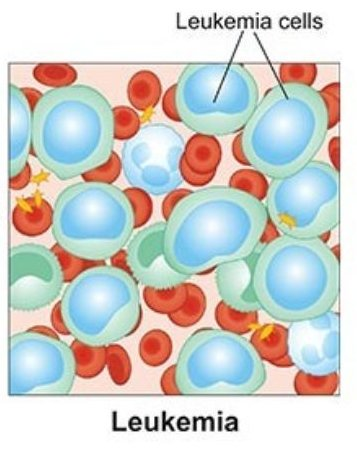
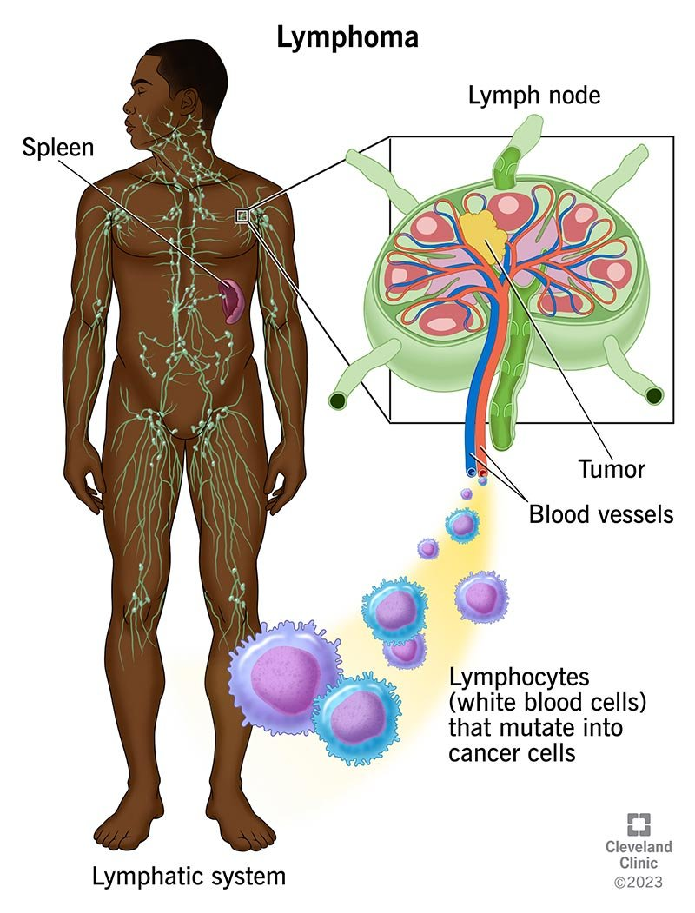
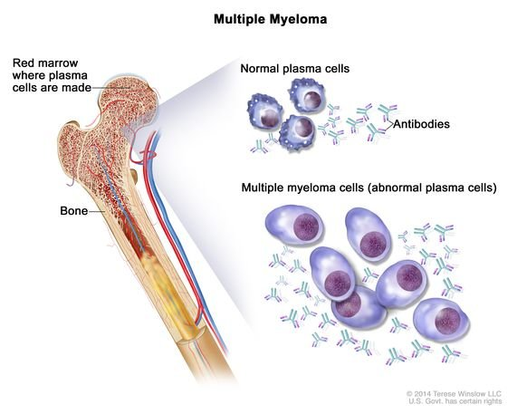
3.5 · Acute lymphoblastic leukemia: definition and pathogenesis
And “remember that this is a bimodal distribution ... ALL in children and then older adults” (slide 18).
- Definition (slide 18): acute lymphoblastic leukemia (ALL) is a leukemia originating with the lymphoid progenitor/stem cells: very immature cells with a rapid ability to proliferate.
- Bimodal distribution (slide 18):
- The most common malignancy under the age of 15; in the United States the 5-year survival is >90%.
- Adults: peak incidence around 50 years of age; outcomes for patients over 40 years old are poor (~30–40% achieve long-term remission).
- Pathogenesis (slide 19): mutagenesis occurs at the lymphoblast stage, at various stages of differentiation into B or T lymphocytes.
- B-cell precursor ALL often presents in a leukemic phase: primarily blasts and marrow involvement.
- T-cell ALL is rarer, usually with lymphoma-like characteristics, and may involve the thymus.
- Subtype: lymphoblastic lymphoma, immature and aggressive but with more lymphoma features.
- Genetics (slide 20):
- Particularly in children: often excess copies of a chromosome (hyperdiploidy), a favorable prognosis.
- In adults, the most common mutation is the BCR-ABL mutation, caused by translocation of chromosomes 9 and 22 (the Philadelphia chromosome).
- 1/3 of both adult and pediatric patients have no chromosome abnormalities: mutation analysis is needed, but outcomes are relatively favorable.
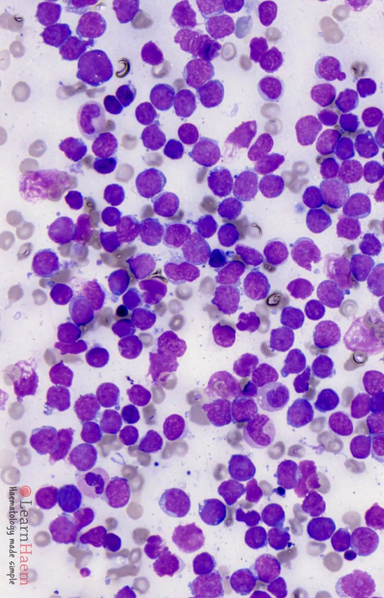
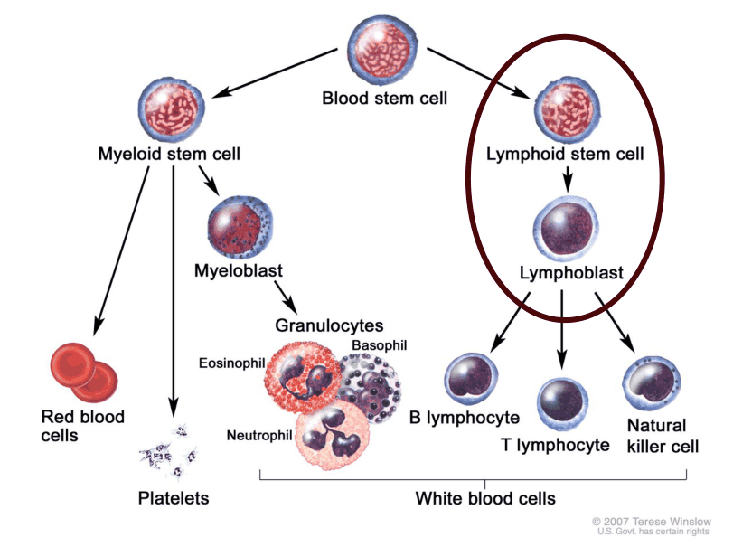
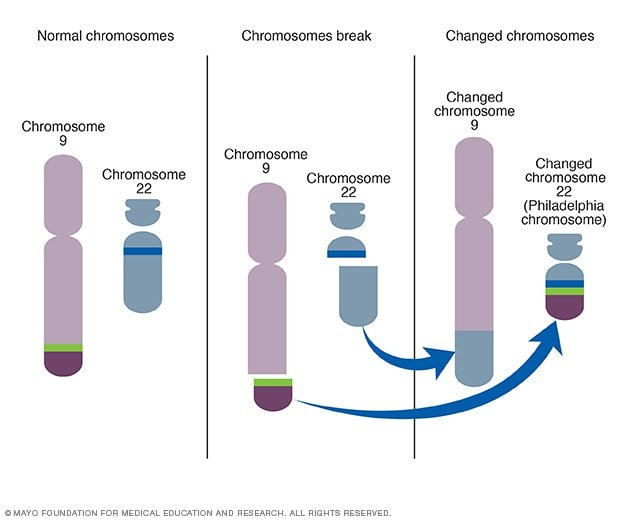
3.6 · Acute lymphoblastic leukemia: risk factors, presentation, work-up and diagnosis
And the lumbar puncture: “the big one I would want you to remember here. ALL has a high propensity for going into the spinal fluid” (slides 23, 25).
- Risk factors (slide 21): radiation exposure (prior radiation for cancer treatment; substantial risk for those exposed to the atomic bomb in Japan); chemical exposures (benzene, certain chemotherapies); viral infections (EBV (Epstein-Barr virus), HTLV-1 (human T-lymphotropic virus type 1; Caribbean countries)); genetic syndromes (Down syndrome, Fanconi anemia, others; ?family history); age (children under 5 and adults over 50); male gender.
- Signs and symptoms (slide 22): symptoms of both excessive immature white cell (blast) production and lymphoid (nodal) characteristics.
- Anemia: fatigue, weakness, lightheadedness, shortness of breath, pale skin.
- Thrombocytopenia: bruising (often petechiae or purpura), bleeding.
- Ineffective white cells: infections.
- B-symptoms: weight loss, fever, night sweats, loss of appetite.
- >50% present with lymphadenopathy, hepatomegaly or splenomegaly.
- Bone or joint pain from very excessive marrow production of leukemia cells.
- Labs (slide 22): anemia, thrombocytopenia, and either leukopenia or marked leukocytosis; white count often > 30K, sometimes much higher, but 30% have neutropenia. A mediastinal mass may be seen on the chest X-ray in T-cell ALL.
- Work-up (slide 23): the diagnosis is confirmed by flow cytometry and bone marrow biopsy.
- Flow cytometry identifies the markers of the leukemia and whether it is B-cell or T-cell.
- Bone marrow biopsy shows the degree of cancer infiltration of the marrow, allows precise chromosome and mutation testing, and gives clues to the impact on normal hematopoiesis.
- Also: imaging for the degree of spread, other blood tests (counts, electrolytes, coagulation) and lumbar puncture.
- Differential diagnosis (slide 24): other aggressive malignancies, including acute myeloid leukemia (AML); lymphoproliferative diseases like chronic lymphocytic leukemia (CLL), aggressive lymphomas; and hairy cell leukemia. Pathologists differentiate these with the clinical presentation. ALL and lymphoblastic lymphoma are difficult to tell apart but are treated similarly. Atypical lymphocytosis can occur with some infections, including mononucleosis and pertussis; flow cytometry separates these by the clonal nature of ALL.
- Diagnosis (slide 25):
- Defined by blast cells of lymphoid origin ≥ 20% in bone marrow.
- Often diffuse marrow and peripheral blood involvement, in contrast to aggressive lymphomas, which involve nodal or extranodal sites with minimal marrow involvement.
- Cytogenetics and mutation analyses are important for prognosis.
- Central nervous system (CNS) involvement can occur and is an adverse risk factor, so the lumbar puncture is important.
3.7 · Acute lymphoblastic leukemia: management, prognosis and patient education
- Management (slide 27):
- Philadelphia chromosome [t(9;22)]-negative (Ph-) ALL: pediatric-like regimens, usually for patients < 40 years old: intensive chemotherapy with induction, consolidation and maintenance phases, multiple chemotherapies, steroids and often targeted agents. In older adults, therapy changes and dose adjustments may be needed for tolerance.
- Philadelphia chromosome-positive (Ph+) ALL: tyrosine kinase inhibitors (TKI) + chemotherapy.
- Allogeneic stem cell transplant where feasible for adverse risk ALL or relapsed disease.
- Prognosis (slide 28): often positive, particularly for children: five-year overall survival for < 15 years old is ~90% but needs intensive chemotherapy for 2–5 years. For adults, 5-year overall survival has historically been ~40%, with a cure rate that falls with age; improving with new treatments, including immunotherapies.
- Patient education (slide 29): referral to and management by a hematologist/oncologist, ideally an ALL specialist; most patients with acute leukemia are admitted for work-up and initiation of treatment; frequent follow-up for labs, treatment and life-long surveillance; consider clinical trials where feasible.
Acute lymphoblastic leukemia (ALL)
Defining feature: lymphoid blasts ≥ 20% in the bone marrow, confirmed by flow cytometry (B-cell or T-cell) and bone marrow biopsy; a child under 15, or an adult around 50
- Definition
- A leukemia of the lymphoid progenitor/stem cells: very immature cells that proliferate rapidly; mutagenesis at the lymphoblast stage, B-cell precursor (leukemic phase) or T-cell (rarer, lymphoma-like, thymus) (slides 18–19).
- Who gets it
- Bimodal: the most common malignancy under 15; adult peak around 50; children under 5 and adults over 50; male gender (slides 18, 21).
- Risk factors
- Radiation (prior cancer treatment, atomic bomb survivors); benzene, certain chemotherapies; EBV, HTLV-1 (Caribbean); Down syndrome, Fanconi anemia, ?family history; age; male gender (slide 21). Genetics: hyperdiploidy in children (favorable); BCR-ABL, t(9;22), the Philadelphia chromosome, the most common adult mutation; 1/3 have no chromosome changes (slide 20).
- Classic signs & symptoms
- Fatigue, weakness, lightheadedness, shortness of breath; bruising and bleeding; infections; B-symptoms (weight loss, fever, night sweats, loss of appetite); bone or joint pain (slide 22).
- Physical exam findings
- Pale skin; petechiae or purpura; lymphadenopathy, hepatomegaly or splenomegaly in >50% (slide 22).
- Diagnostics / tests
- Anemia, thrombocytopenia, leukopenia or marked leukocytosis (often > 30K; 30% neutropenic); mediastinal mass on chest X-ray in T-cell ALL (slide 22). Flow cytometry + bone marrow biopsy; imaging, counts, electrolytes, coagulation, lumbar puncture (slide 23). Lymphoid blasts ≥ 20% in marrow; cytogenetics and mutations for prognosis (slide 25). Differential: AML, CLL, aggressive lymphomas, hairy cell leukemia, lymphoblastic lymphoma; atypical lymphocytosis of mononucleosis or pertussis (not clonal on flow) (slide 24).
- First-line treatment
- Ph-negative: pediatric-like regimens under 40 (induction, consolidation, maintenance; chemotherapy, steroids, targeted agents); dose changes in older adults. Ph-positive: TKI + chemotherapy. Allogeneic transplant for adverse risk or relapse. Hematologist/oncologist referral; admission for work-up; clinical trials (slides 27, 29).
- Complications
- CNS involvement (adverse risk factor) (slide 25); poor outcomes over 40 (slide 18); otherwise not covered in the lecture.
Slides 18–25, 27–29
3.8 · Acute myeloid leukemia: definition, pathogenesis and subtypes
“So yes, remember, Auer rods, pathognomonic, AML.” Auer rods are fused lysosomes; seeing them confirms a myeloid leukemia.
- Definition (slide 31): acute myeloid leukemia (AML) is a leukemia originating with the myeloid progenitor/stem cells: very immature cells with a rapid ability to proliferate. Auer rods are pathognomonic.
- Who (slide 31): “most common form of leukemia, comprising 80% of all cases” (see the note above); mostly adults, particularly older adults (>60 years old); unusual in children outside of neonates.
- Pathogenesis (slide 32): multiple subtypes depending on the initial mutation and stage of maturation; tremendous variety of cytogenetic abnormalities and mutations, so risk is broken down into favorable, intermediate and poor risk AML. Secondary AML: AML arising from another myeloid neoplasm (myelodysplastic syndrome, myeloproliferative neoplasm, others) or after treatment of another cancer → poor outcomes.
- Subtypes (slide 33): historically ~8 FAB (French-American-British) subtypes, now 18 subtypes recognized by WHO (World Health Organization).
- Acute myelomonocytic/monocytic leukemias (M4 and M5) tend to have more extramedullary involvement.
- Acute erythroid leukemia and acute megakaryocytic leukemias are very rare.
- Acute promyelocytic leukemia (APL) is discussed separately (3.11).
| FAB subtype (slide 32 table) | Name |
|---|---|
| M0 | Undifferentiated AML |
| M1 | AML with minimal maturation |
| M2 | AML with maturation |
| M3 | Acute promyelocytic leukemia (APL) |
| M4 | Acute myelomonocytic leukemia (more extramedullary involvement, slide 33) |
| M5 | Acute monocytic leukemia (more extramedullary involvement, slide 33) |
| M6 | Acute erythroid leukemia (very rare) |
| M7 | Acute megakaryocytic leukemia (very rare) |
She played this table down out loud (“You don’t have to know anything about this, really, except that you will hear a lot about APL”): M3 = APL and the M4/M5 extramedullary line are the parts the slides teach in words.
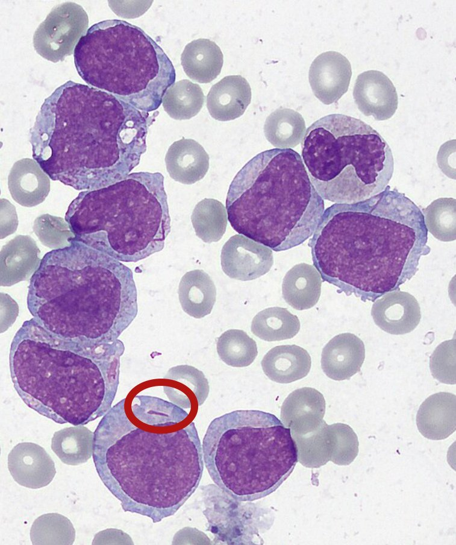
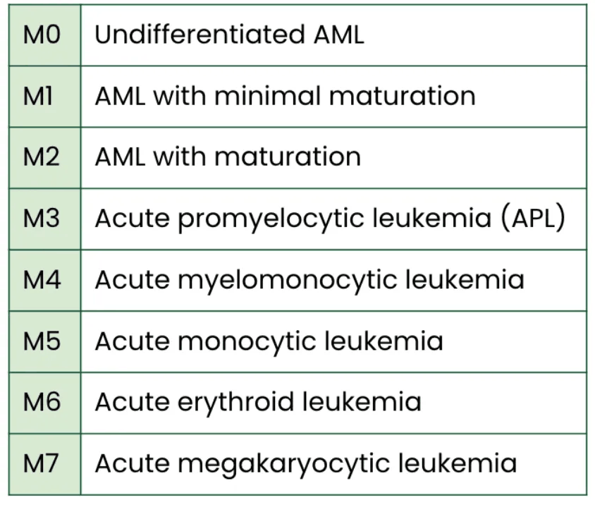
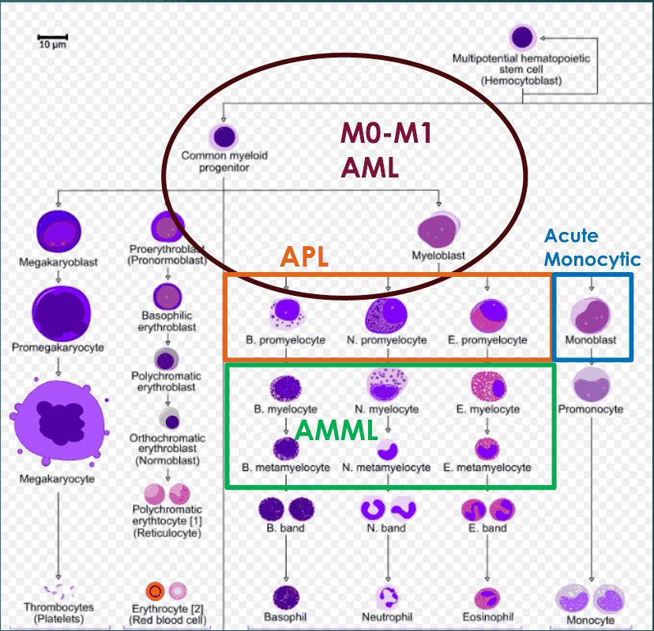
3.9 · Acute myeloid leukemia: risk factors, presentation, work-up and diagnosis
“Diagnosis, again, 20% blast in your bone marrow” (slide 38).
| Risk factors | Acute lymphoblastic leukemia (slide 21) | Acute myeloid leukemia (slide 34) |
|---|---|---|
| Radiation | Prior radiation for cancer treatment; atomic bomb in Japan | Prior high-dose radiation |
| Chemicals | Benzene, certain chemotherapies | Benzene, petroleum, certain chemotherapies (alkylators) |
| Viruses | EBV, HTLV-1 (Caribbean countries) | HIV (human immunodeficiency virus) |
| Genetic syndromes | Down syndrome, Fanconi anemia, others; ?family history | Down syndrome, Fanconi anemia, others; ?family history |
| Age | Children under 5 and adults over 50 | Adults over 60 |
| Sex | Male gender | Male gender |
- Signs and symptoms (slide 35): symptoms of excessive immature white cell (blast) production and immune dysfunction and infections: anemia (fatigue, weakness, lightheadedness, shortness of breath, pale skin); thrombocytopenia (bruising, often petechiae or purpura, bleeding); infections; B-symptoms (weight loss, fever, night sweats). The myelomonocytic and monocytic subtypes may have gum involvement (hyperplasia) or extramedullary disease.
- Labs (slide 35): anemia, thrombocytopenia, and a white count often elevated but sometimes leukopenia. Unlike ALL, a white count > 200K is rare, and all > 100K need emergent leukapheresis.
- Work-up (slide 36): confirmed by flow cytometry and bone marrow biopsy (similar to ALL). Flow cytometry identifies the leukemia’s markers and differentiates it from ALL; the biopsy shows the degree of infiltration and allows chromosome and mutation testing. Morphology showing Auer rods confirms myeloid etiology (Auer rods are fused lysosomes). Also: blood counts, electrolytes, coagulation, mutation sequencing and lumbar puncture.
- Differential diagnosis (slide 37): other leukemias, including ALL, and myeloid diseases like chronic myelogenous leukemia (CML), myelodysplastic syndrome (MDS) and myeloproliferative disorders. Pancytopenia also occurs with some infections, aplastic anemia, nutritional deficiencies and drug-induced conditions; flow cytometry separates these by the clonal nature of AML.
- Diagnosis (slide 38): defined by blast cells of myeloid origin; historically myeloid blasts ≥ 20%; new guidelines note that certain genetic mutations may allow the diagnosis with only 10% or higher. Cytogenetics and mutation analyses are important for prognosis. Subgroup modifiers: AML with prior MDS or MPN (other myeloid neoplasms) and therapy-related (prior cancer), together called secondary AML, associated with a poor outcome.
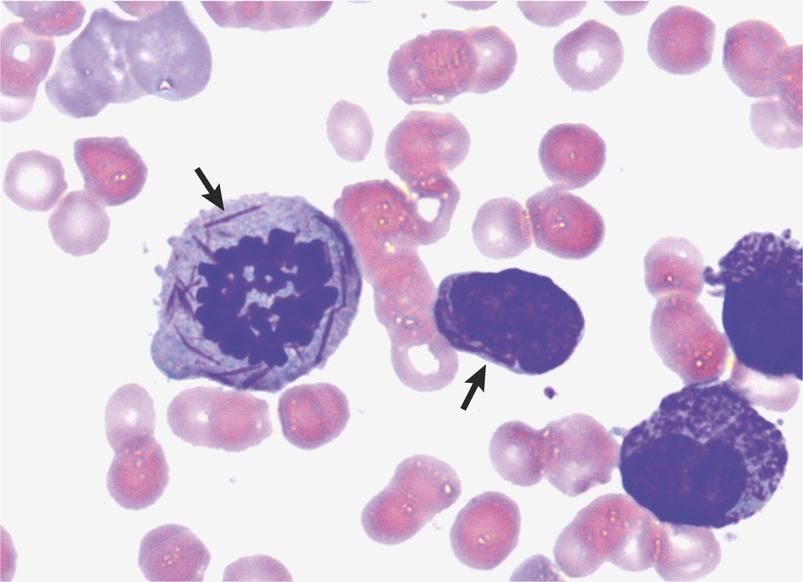
3.10 · Acute myeloid leukemia: management, prognosis and patient education
- Management (slide 40):
- Fit patients: intensive chemotherapy, often cytarabine + anthracycline (7+3).
- Unfit patients: low-intensity therapy, frequently hypomethylating agents +/- a BCL-2 inhibitor (venetoclax).
- Whatever the first treatment, allogeneic stem cell transplant is typically used for most intermediate- and high-risk patients IF they achieve remission.
- Prognosis (slide 41): treatment brings initial remission in many, but AML frequently relapses and treatment-related mortality is high. Overall survival only 48% at 1 year and about 25–30% at 5 years. Aside from APL, highest for favorable risk AML (about 2/3 alive at 5 years) and younger patients; lowest for patients over 70 (only 5% at 5 years) and those with adverse risk or secondary AML (about 10% overall).
- Patient education (slide 42): referral to and management by a hematologist/oncologist, ideally a leukemia specialist; most patients with acute leukemia are admitted for work-up and initiation of treatment; frequent follow-up and life-long surveillance; consider clinical trials.
Acute myeloid leukemia (AML)
Defining feature: myeloid blasts ≥ 20% with Auer rods (pathognomonic) in an older adult; treatment by fitness
- Definition
- A leukemia of the myeloid progenitor/stem cells: very immature, rapidly proliferating cells; risk groups favorable, intermediate and poor; secondary AML arises from MDS, MPN or prior cancer treatment (slides 31–32).
- Who gets it
- Mostly adults, particularly over 60; unusual in children outside of neonates; male gender (slides 31, 34).
- Risk factors
- Prior high-dose radiation; benzene, petroleum, alkylator chemotherapy; HIV; Down syndrome, Fanconi anemia, ?family history; age over 60; male gender; prior MDS or MPN (slides 32, 34, 38).
- Classic signs & symptoms
- Fatigue, weakness, lightheadedness, shortness of breath; bruising, bleeding; infections; B-symptoms (weight loss, fever, night sweats) (slide 35).
- Physical exam findings
- Pale skin; petechiae or purpura; gum hyperplasia or extramedullary disease in the myelomonocytic and monocytic (M4, M5) subtypes (slides 33, 35).
- Diagnostics / tests
- Anemia, thrombocytopenia, white count usually high (> 200K rare; any > 100K needs emergent leukapheresis) (slide 35). Flow cytometry (separates it from ALL) + bone marrow biopsy; Auer rods confirm myeloid etiology; counts, electrolytes, coagulation, mutation sequencing, lumbar puncture (slide 36). Myeloid blasts ≥ 20% (10% with certain mutations) (slide 38). Differential: ALL, CML, MDS, myeloproliferative disorders; pancytopenia of infection, aplastic anemia, nutritional deficiency, drugs (slide 37).
- First-line treatment
- Fit: intensive chemotherapy, cytarabine + anthracycline (7+3). Unfit: hypomethylating agents +/- venetoclax (BCL-2 inhibitor). Allogeneic transplant for intermediate and high risk once in remission. Hematologist/oncologist (leukemia specialist); admission; clinical trials (slides 40, 42).
- Complications
- Frequent relapse; high treatment-related mortality; 48% alive at 1 year, 25–30% at 5; over 70 only 5% at 5 years; secondary or adverse risk about 10% (slide 41). Leukocytosis > 100K is an emergency (slide 35).
Slides 31–38, 40–42
3.11 · Acute promyelocytic leukemia
“The only chemotherapy-free leukemia you can treat with a vitamin.”
- Slide 43: acute promyelocytic leukemia (APL) is a rare AML subtype (FAB M3) caused by arrested differentiation at the promyelocyte.
- Caused by a translocation of chromosomes 15 and 17, fusing the PML-RARA genes.
- Frequently presents with emergent complications, including DIC (disseminated intravascular coagulation) and bleeding, and has high early mortality.
- Unique treatment: arsenic trioxide and all-trans-retinoic acid (ATRA).
- If the patient survives the initial presentation, excellent prognosis (>90% cure rate).
Acute promyelocytic leukemia (APL)
Defining feature: an acute leukemia presenting with DIC and bleeding; t(15;17), PML-RARA; treated with ATRA + arsenic trioxide, not standard chemotherapy
- Definition
- A rare AML subtype (M3) from arrested differentiation at the promyelocyte (slides 32, 43).
- Who gets it
- Not covered in the lecture beyond “rare AML subtype” (slide 43).
- Risk factors
- Translocation of chromosomes 15 and 17 (PML-RARA fusion) (slide 43); otherwise not covered in the lecture.
- Classic signs & symptoms
- Emergent complications: bleeding and DIC (slide 43).
- Physical exam findings
- Not covered in the lecture beyond bleeding (slide 43).
- Diagnostics / tests
- The AML work-up (flow cytometry, bone marrow biopsy, coagulation tests) (slide 36); t(15;17) / PML-RARA (slide 43).
- First-line treatment
- Arsenic trioxide and all-trans-retinoic acid (ATRA) (slide 43).
- Complications
- DIC, bleeding, high early mortality; >90% cure if the presentation is survived (slide 43).
Slides 32, 33, 43
3.12 · Myelodysplastic syndrome
Higher-risk myelodysplastic syndrome may have blasts, but fewer than 20%; at 20% it is acute myeloid leukemia.
- Introduction (slide 45): myelodysplastic syndromes (MDS) are a group of myeloid malignancies defined by dysplasia (abnormal appearing) of myeloid cells. They often distort hematopoiesis and cause immune dysregulation and genomic changes (mutations). They present clinically as cytopenias, frequently anemia, and related complications (fatigue, infections, bleeding).
- Pathogenesis (slide 46): often evolves from milder abnormal stem cell clones (clonal hematopoiesis) until the dysplasia of MDS develops. Typically a hypercellular marrow, but the cells are not functional. Presentation varies widely: low risk MDS is commonly defined by anemia with a low risk of AML progression; very high-risk MDS has elevated blasts and substantial overlap with AML. Often idiopathic and in the older population (median 70 years); sometimes prior chemotherapy or radiation; more common in men.
- Signs and symptoms (slide 47): many are asymptomatic and found incidentally. Symptoms come from ineffective blood cell production and immune dysfunction: fatigue, weakness, pale skin (anemia); infections (ineffective white cells); bleeding (thrombocytopenia).
- Labs (slide 47): most frequently anemia; neutropenia; occasional thrombocytopenia. Neutrophils show morphological abnormalities; higher risk MDS may have blasts but < 20% (otherwise AML); often red cell abnormalities (multinucleated or hyperplastic).
- Treatment (slide 48): highly dependent on blood counts, risk status and mutations.
- Low risk + anemia: erythropoiesis-stimulating agents (ESA) and red cell transfusions as needed.
- Neutropenia: myeloid growth factors (careful not to overstimulate the blasts).
- Higher-risk: chemotherapy or hypomethylating agents.
- The only curative therapy is allogeneic stem cell transplant, but it is high risk with a limited role.
- Prognosis (slide 49): highly variable by risk. Lower-risk: median survival > 5 years and a very low risk of AML. Very high-risk: median overall survival 9 months and a > 80% risk of AML within 5 years. Low risk patients often have complications from anemia, bleeding and/or infections; the goal of treatment is quality of life.
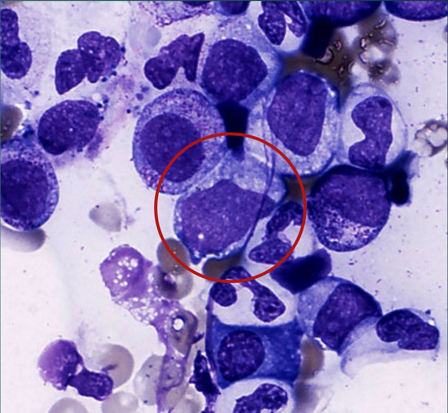
Myelodysplastic syndrome (MDS)
Defining feature: cytopenias (most often anemia) with dysplastic myeloid cells in a hypercellular marrow in an older man; blasts under 20% (20% or more = AML)
- Definition
- A group of myeloid malignancies defined by dysplasia (abnormal-appearing) of myeloid cells; evolves from clonal hematopoiesis (slides 45–46).
- Who gets it
- Older adults (median 70 years); more common in men (slide 46).
- Risk factors
- Often idiopathic; prior chemotherapy or radiation; older age; male sex (slide 46).
- Classic signs & symptoms
- Many asymptomatic and found incidentally; fatigue, weakness; infections; bleeding (slide 47).
- Physical exam findings
- Pale skin (slide 47); otherwise not covered in the lecture.
- Diagnostics / tests
- Most often anemia; neutropenia; occasional thrombocytopenia; abnormal neutrophil morphology; red cell abnormalities (multinucleated or hyperplastic); blasts < 20% in higher risk (slide 47); hypercellular marrow with non-functional cells (slide 46).
- First-line treatment
- By counts, risk and mutations: low risk + anemia → erythropoiesis-stimulating agents and transfusions; neutropenia → myeloid growth factors (with care); higher risk → chemotherapy or hypomethylating agents; allogeneic transplant is the only cure (high risk, limited role) (slide 48).
- Complications
- Anemia, bleeding, infections; progression to AML (> 80% within 5 years in very high risk; median overall survival 9 months); secondary AML has poor outcomes (slides 32, 49).
Slides 45–49, 32, 38
3.13 · Myeloproliferative neoplasms and polycythemia vera
The JAK2 mutation; the classic clue is itching after a warm bath or shower.
- Myeloproliferative neoplasms (MPN) (slide 51) are rare myeloid malignancies characterized by atypical proliferation of mature cell lines:
- Polycythemia vera: over-production of red blood cells, increasing blood viscosity.
- Myelofibrosis: over-production of mature myeloid cell lines.
- Essential thrombocythemia: over-production of platelets.
- Polycythemia vera (PV) (slide 52):
- Pathogenesis: commonly a result of a JAK2 mutation.
- Presentation: usually non-specific: fatigue, headaches, blurry vision. Classic: pruritus with warm baths or showers.
- Complications: thrombosis, splenomegaly, bleeding.
- Treatment: phlebotomy, hydroxyurea.
- Prognosis: excellent, estimated survival of 14 years; leukemic transformation is rare (~5% of cases).
- Refer to a hematologist and advise to stop smoking.
| The three myeloproliferative neoplasms (slides 51–54) | Polycythemia vera | Myelofibrosis | Essential thrombocythemia |
|---|---|---|---|
| Over-production of | Red blood cells (increased viscosity) | Mature myeloid cell lines (all myeloid lines, then marrow fibrosis) | Platelets |
| Mutation | JAK2 | JAK-STAT pathway mutations, elevated cytokines | JAK-STAT pathway gene mutations; rarely inherited |
| Presentation | Non-specific: fatigue, headaches, blurry vision; classic: pruritus with warm baths or showers | Fatigue and abdominal symptoms from splenomegaly (pain, early satiety, bloating); night sweats, fever, weight loss common | Mostly asymptomatic; clotting (headaches, fatigue, paresthesias, vision changes) or bleeding |
| Complications | Thrombosis, splenomegaly, bleeding | Severe splenomegaly, portal hypertension, bleeding, progression to secondary AML | Clotting, including CVA (stroke) and MI (myocardial infarction) |
| Treatment | Phlebotomy, hydroxyurea | Often JAK inhibitors (targeted, palliative) | Aspirin, hydroxyurea, or other agents to reduce clotting risk |
| Prognosis | Excellent: estimated survival 14 years; leukemic transformation ~5% | Highly variable: low risk 10–15 years; high risk often < 2 years; most aggressive MPN | Excellent: generally a normal life span with management |
| Referral and advice | Hematologist; stop smoking | Hematologist upon diagnosis | Hematologist; stop smoking |
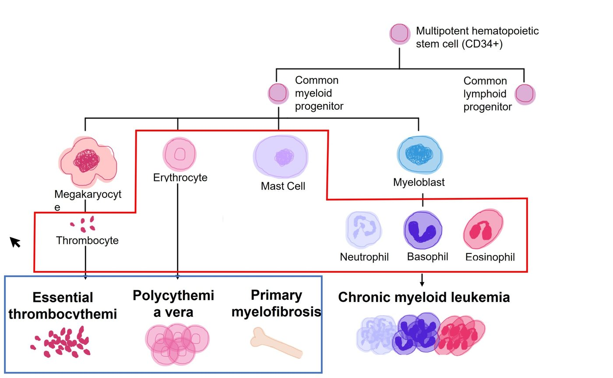
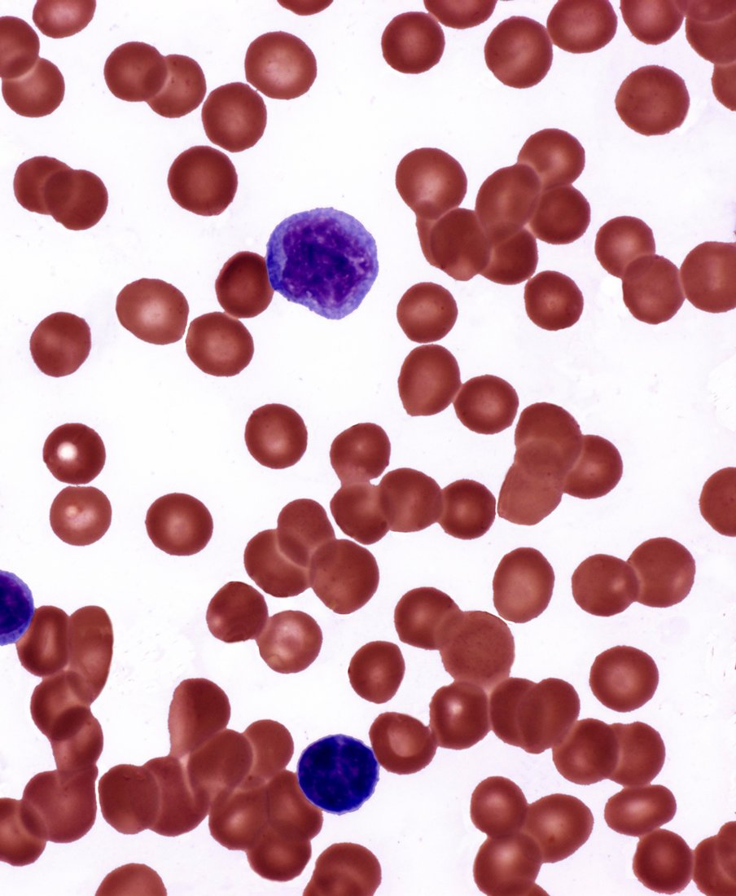
Polycythemia vera (primary)
Defining feature: too many red cells from a JAK2 mutation, with itching after a warm bath or shower; treated with phlebotomy
- Definition
- A myeloproliferative neoplasm: over-production of red blood cells, increasing blood viscosity (slide 51).
- Who gets it
- Not covered in the lecture beyond “rare” (slide 51).
- Risk factors
- JAK2 mutation (slide 52); otherwise not covered in the lecture. Secondary polycythemia (a syllabus item) is not on the deck.
- Classic signs & symptoms
- Usually non-specific: fatigue, headaches, blurry vision; classic pruritus with warm baths or showers (slide 52).
- Physical exam findings
- Splenomegaly (a complication) (slide 52); otherwise not covered in the lecture.
- Diagnostics / tests
- JAK2 mutation (slide 52); otherwise not covered in the lecture.
- First-line treatment
- Phlebotomy, hydroxyurea; hematology referral; stop smoking (slide 52).
- Complications
- Thrombosis, splenomegaly, bleeding; leukemic transformation in ~5%; survival estimated 14 years (slide 52).
Slides 51–52
3.14 · Myelofibrosis
- Pathogenesis (slide 53): abnormal JAK-STAT pathway mutations → elevated cytokines and marked excess proliferation of all myeloid cell lines, eventually causing fibrosis of the marrow.
- Presentation: usually non-specific: fatigue and abdominal symptoms from splenomegaly (pain, early satiety and/or bloating); night sweats, fever, weight loss are also common. The most aggressive of the MPNs.
- Complications: severe splenomegaly, portal hypertension, bleeding, progression to secondary AML.
- Treatment: often targeted inhibitors (JAK inhibitors), which are palliative.
- Prognosis: highly variable: low risk can live 10–15 years; high risk often less than 2 years. Refer to a hematologist upon diagnosis.
Myelofibrosis
Defining feature: massive splenomegaly (pain, early satiety, bloating) with B-type symptoms from a marrow that has scarred (fibrosis); the most aggressive MPN
- Definition
- A myeloproliferative neoplasm: JAK-STAT mutations drive excess proliferation of all myeloid lines and cytokines, then fibrosis of the marrow (slides 51, 53).
- Who gets it
- Not covered in the lecture beyond “rare” (slide 51).
- Risk factors
- JAK-STAT pathway mutations (slide 53); otherwise not covered in the lecture.
- Classic signs & symptoms
- Fatigue; abdominal pain, early satiety, bloating; night sweats, fever, weight loss (slide 53).
- Physical exam findings
- Splenomegaly (slide 53).
- Diagnostics / tests
- Not covered in the lecture beyond the marrow fibrosis (slide 53).
- First-line treatment
- JAK inhibitors (palliative); hematology referral at diagnosis (slide 53).
- Complications
- Severe splenomegaly, portal hypertension, bleeding, secondary AML; survival 10–15 years low risk, < 2 years high risk (slide 53).
Slides 51, 53
3.15 · Essential thrombocythemia
- Pathogenesis (slide 54): often gene mutations in the JAK-STAT pathway, causing overproduction of platelets; rarely inherited.
- Presentation: mostly asymptomatic, but may present with clotting (headaches, fatigue, paresthesias or vision changes) or bleeding. Bleeding with high platelets can occur from acquired von Willebrand factor deficiency, a shortage of the factor at the site of injury.
- Complications: clotting, including CVA and MI.
- Treatment: aspirin, hydroxyurea, or other agents to reduce clotting risk.
- Prognosis: excellent; generally a normal life span with appropriate management. Refer to a hematologist; advise to stop smoking.
Essential thrombocythemia
Defining feature: a very high platelet count, mostly without symptoms, that can clot (stroke, MI) or paradoxically bleed (acquired von Willebrand); aspirin and hydroxyurea
- Definition
- A myeloproliferative neoplasm: over-production of platelets from JAK-STAT pathway mutations (slides 51, 54).
- Who gets it
- Not covered in the lecture; rarely inherited (slide 54).
- Risk factors
- JAK-STAT pathway gene mutations (slide 54); otherwise not covered in the lecture.
- Classic signs & symptoms
- Mostly asymptomatic; clotting with headaches, fatigue, paresthesias, vision changes; or bleeding (slide 54).
- Physical exam findings
- Not covered in the lecture.
- Diagnostics / tests
- High platelets (slide 54); otherwise not covered in the lecture.
- First-line treatment
- Aspirin, hydroxyurea, or other agents to reduce clotting risk; hematology referral; stop smoking (slide 54).
- Complications
- Clotting (CVA, MI); bleeding from acquired von Willebrand factor deficiency; normal life span with management (slide 54).
Slides 51, 54
3.16 · Chronic myelogenous leukemia: definition, pathogenesis and epidemiology
- Definition (slide 56): chronic myelogenous leukemia (CML) originates from hematopoietic stem cells but produces increased numbers of granulocytes (more mature than blasts). It historically progresses from a chronic condition to acute leukemia in ~4–6 years.
- Hallmark (slide 56): the BCR-ABL mutation, from fusion of chromosomes 22 and 9 → the Philadelphia chromosome.
- Until tyrosine kinase inhibitors (TKIs), it was considered fatal; it is now largely a chronic disorder and most patients have long-term survival and a good prognosis (slide 56).
- Pathogenesis (slide 57): the translocation between chromosomes 9 and 22 attaches the BCR gene to the ABL1 gene, making a fusion protein. The BCR-ABL fusion protein is a functional enzyme that promotes cell proliferation and reduces apoptosis: the cell “can’t turn off” and constantly divides. (Same picture as slide 20, in 3.5.)
- Risk factors and epidemiology (slide 58): may be more common in radiation bomb victims (Japan), but no other identified risk factors; 15–20% of all leukemias; median age 45–55; either sex, slightly more common in men.
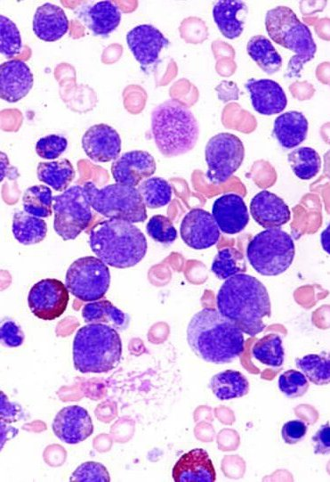
3.17 · Chronic myelogenous leukemia: presentation, work-up, differential and phases
- Signs and symptoms (slide 59): ~50% are asymptomatic at diagnosis, found from leukocytosis on a complete blood count. Anemia (fatigue, weakness, lightheadedness, shortness of breath); abdominal swelling or discomfort from splenomegaly; B-symptoms (weight loss, fever, night sweats, loss of appetite).
- Labs (slide 59): marked leukocytosis, thrombocytosis, anemia: white count often > 100K and up to 500K; platelets usually elevated; usually very low blasts unless accelerated or blast phase.
- Chronic phase chronic myelogenous leukemia on a blood count. Marked leukocytosis (often above 100,000) of granulocytes, elevated platelets, very low blasts and splenomegaly fit chronic phase chronic myelogenous leukemia; about half of patients are asymptomatic and found through leukocytosis on a blood count.
- Work-up and diagnosis (slide 60): confirmed by bone marrow biopsy and PCR (polymerase chain reaction) for the BCR-ABL1 mutation. PCR for BCR-ABL1 in a patient with a marked increase in granulocytes confirms the diagnosis, and the assay is also used to monitor response to treatment. The marrow shows marked granulocytic proliferation and myelocytes in chronic phase. Also flow cytometry (lineage) and mutation analysis.
- Differential diagnosis (slide 61): other myeloproliferative disorders, namely myelofibrosis (the slide also names CMML, never expanded): in CML the red cell morphology is normal and the hematocrit is not elevated; it is definitive when BCR/ABL1 is positive on PCR. Reactive leukocytosis with some infections: no splenomegaly, white count usually < 50K, BCR/ABL1 not positive.
| CML phases (slide 62) | Blasts | Features | Share of presentations |
|---|---|---|---|
| Chronic (stable) phase | No or few blasts (<5%) | Early proliferative phase; excellent prognosis | 85–90% |
| Accelerated phase | Often 10–19% | May have dysplastic changes in granulocytes and fibrosis; frequently significant splenomegaly | Approximately 4–5% |
| Blast phase/crisis | No number on the slide | Behaves as an acute leukemia, usually AML-like; often unique chromosomal and mutational abnormalities; needs AML-like regimens; poor responses to TKIs | Approximately 1–2% |
3.18 · Chronic myelogenous leukemia: management, milestones, prognosis and patient education
The BCR-ABL1 level is checked in the blood over time; a warning or failure result means a change of treatment.
- Management (slide 63): tyrosine kinase inhibitors are the hallmark of therapy for chronic phase CML; 6 approved agents with different considerations. Patients who achieve major molecular response (MMR) for 2 years may safely discontinue treatment, but recurrences occur in 50%. Advanced CML (accelerated or blast phase) has different considerations. Allogeneic stem cell transplant in young healthy patients with resistance to TKIs or advanced stage CML.
| Milestone (slide 64, table A) | Failure | Warning | Optimal | TFR (treatment-free remission) |
|---|---|---|---|---|
| 3 months | N.A. | BCR-ABL1 > 10% | BCR-ABL1 < 10% | N.A. |
| 6 months | BCR-ABL1 > 10% | BCR-ABL1 1–10% | BCR-ABL1 < 1% | N.A. |
| 12 months | BCR-ABL1 > 1% | BCR-ABL1 0.1–1% | BCR-ABL1 < 0.1% | N.A. |
| > 18 months | BCR-ABL1 > 1% | BCR-ABL1 0.1–1% | BCR-ABL1 < 0.1% | BCR-ABL1 < 0.01% |
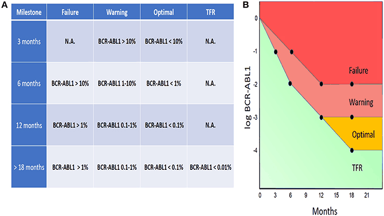
- Prognosis (slide 65): most patients now live normal lives with CML while on TKIs, or can discontinue and stay off therapy if they achieve sustained MMR; most who recur after stopping can recapture deep responses. Outcomes in accelerated or blast phase remain poor (median survival < 12 months).
- Patient education (slide 66): referral to and management by a hematologist; many live a full life with no detriment to long-term survival if appropriately managed; treatment is for life unless sustained major molecular remission x 2 years, when discontinuation is possible; advanced phase patients should be considered for clinical trials.
Chronic myelogenous leukemia (CML)
Defining feature: marked leukocytosis (often > 100K) of maturing granulocytes with thrombocytosis and splenomegaly, few blasts; BCR-ABL1 (Philadelphia chromosome) positive on PCR; tyrosine kinase inhibitors
- Definition
- A leukemia from hematopoietic stem cells that makes increased granulocytes (more mature than blasts); BCR-ABL fusion from t(9;22), the Philadelphia chromosome, a functional enzyme that drives proliferation and blocks apoptosis (slides 56–57).
- Who gets it
- 15–20% of all leukemias; median age 45–55; slightly more common in men (slide 58).
- Risk factors
- Possibly radiation bomb exposure (Japan); no other identified risk factors (slide 58).
- Classic signs & symptoms
- ~50% asymptomatic (found on a complete blood count); fatigue, weakness, lightheadedness, shortness of breath; abdominal swelling or discomfort; B-symptoms (slide 59).
- Physical exam findings
- Splenomegaly (slide 59); significant splenomegaly in accelerated phase (slide 62).
- Diagnostics / tests
- Marked leukocytosis (> 100K, up to 500K), thrombocytosis, anemia, very low blasts in chronic phase (slide 59). Bone marrow biopsy + PCR for BCR-ABL1 (confirms; also monitors treatment); marrow: granulocytic proliferation and myelocytes; flow cytometry and mutation analysis (slide 60). Differential: myelofibrosis (CML has normal red cell morphology and hematocrit); reactive leukocytosis (no splenomegaly, white count usually < 50K, BCR/ABL1 negative) (slide 61). Phases by blasts (slide 62).
- First-line treatment
- Tyrosine kinase inhibitors for chronic phase (6 agents); BCR-ABL1 milestones at 3, 6, 12 and > 18 months (optimal < 10%, < 1%, < 0.1%); may stop after sustained major molecular response for 2 years (50% recur); allogeneic transplant for young healthy patients with TKI resistance or advanced stage; hematologist for life (slides 63–64, 66).
- Complications
- Progression to accelerated phase (10–19% blasts, splenomegaly) and blast phase (behaves like AML, poor TKI response); median survival < 12 months in advanced phases; historically acute leukemia in ~4–6 years (slides 56, 62, 65).
Slides 56–66
3.19 · Across the lifespan: infants, children, adolescents, adults and the elderly
The deck has no population slide; this gathers what its slides say by age (objectives 2 and 4).
| Population | What the deck says |
|---|---|
| Infants | Acute myeloid leukemia is unusual in children outside of neonates (slide 31). Otherwise not covered in the lecture. |
| Children | Hematologic malignancies broadly rise with age, with acute lymphoblastic leukemia and some lymphomas as exceptions (slide 9). ALL is the most common malignancy under 15, with 5-year survival >90% (slide 18) or ~90% after 2–5 years of intensive chemotherapy (slide 28); peak under 5 (slide 21); hyperdiploidy, mostly in children, is favorable (slide 20). Down syndrome and Fanconi anemia raise ALL and AML risk (slides 21, 34). |
| Adolescents | Covered only as part of the under-15 ALL group (slide 18) and the pediatric-like regimens given to Philadelphia-negative ALL patients under 40 (slide 27). |
| Adults | ALL’s second peak around 50, with poor outcomes over 40 (~30–40% long-term remission, slide 18; ~40% five-year survival, slide 28); BCR-ABL is the most common adult ALL mutation (slide 20). CML median age 45–55 (slide 58). Allogeneic transplant for young healthy CML patients with TKI resistance or advanced disease (slide 63). |
| Elderly | Prognosis is dictated by fitness, particularly in older patients (ECOG, slide 10). ALL in older adults needs therapy changes and dose adjustments (slide 27). AML is mostly over 60 (slides 31, 34); unfit patients get low-intensity therapy (hypomethylating agents +/- venetoclax, slide 40); over 70 only 5% are alive at 5 years (slide 41). Myelodysplastic syndrome median age 70 (slide 46), treated for quality of life when low risk (slide 49). |
Referral and education for every disease in this lecture: hematologist/oncologist management (acute leukemias, ideally a specialist; slides 29, 42), admission for the acute leukemia work-up, frequent lab follow-up and life-long surveillance, and clinical trials where feasible; hematologist referral for the MPNs, with smoking cessation in polycythemia vera and essential thrombocythemia (slides 52–54); CML treatment for life unless sustained remission for 2 years (slide 66).
4 · Hematologic Malignancies Part II
Lecture 50 · Nicole Gannon, PA-C (guest lecturer) · Wednesday 18 November 2026, 3–5 PM
Instructional Objectives
HEMATOLOGY — HEMATOLOGIC MALIGNANCIES — Nicole Gannon, PA-C
- Compare and contrast the etiologies, epidemiology, risk factors, clinical manifestations, differential diagnosis, diagnostic testing (including ordering and interpretation), management (acute and chronic, including applicable rehabilitative and palliative care), appropriate referrals, patient education, and prognosis of the following hematological malignancies: 1. Acute lymphocytic leukemia 2. Acute myelogenous leukemia 3. Lymphoma 4. Hodgkin 5. Non-Hodgkin
- Identify medical care strategies for disorders of hematological malignancies in the lecture topic list for the following populations. Infant a. child b. adolescent c. adult d. elderly
- Compare and contrast the etiologies, epidemiology, risk factors, clinical manifestations, differential diagnosis, diagnostic testing (including ordering and interpretation), management (acute and chronic, including applicable rehabilitative and palliative care), appropriate referrals, patient education, and prognosis of the following hematological malignancies: 1. Chronic lymphocytic leukemia 2. Chronic myelogenous leukemia 3. Polycythemia vera a. primary b. secondary 4. Multiple myeloma 5. Myelodysplasia (myelodysplastic syndromes)
- Identify medical care strategies for disorders of hematological malignancies in the lecture topic list for the following populations. a. infant b. child c. adolescent d. adult e. elderly
Quoted as the syllabus prints them (CMS syllabus pages 22–23): objectives 1–2 are the syllabus block “Hematological Malignancies 1”, objectives 3–4 the block “Hematologic Malignancies II” (the first population list prints “Infant” and then letters a–d, kept as printed). The two decks split the diseases differently from the syllabus. This deck (Part II) teaches chronic lymphocytic leukemia (syllabus block II, objective 3) in 4.1–4.4; lymphoma, non-Hodgkin and Hodgkin (syllabus block 1, objective 1) in 4.5–4.11; multiple myeloma and the other plasma cell disorders (syllabus block II, objective 3) in 4.12–4.16; the populations (objectives 2 and 4) in 4.17, with each disease’s referral, education and prognosis inside its own subsection. Acute lymphocytic and acute myelogenous leukemia, chronic myelogenous leukemia, polycythemia vera and myelodysplasia are taught in Lecture 49 (section 3); secondary polycythemia is on neither deck.
The deck’s own objective slide (slide 2): “Compare and contrast the etiologies, epidemiology, risk factors, clinical manifestations, diagnostic testing, differential diagnosis, management, patient education, and prognosis of the following: a) Chronic Lymphocytic Leukemia (CLL) b) Lymphoma (Hodgkin and Non-Hodgkin) c) Multiple Myeloma and Other Plasma Cell Disorders”.
What Ms. Gannon stressed (live recording, Wednesday 18 November; two parts, about 66 minutes; the tape starts on slide 4, so the title and objective slides are not on it). She has no flat “this is on the exam” sentence; these are her strongest cues, each starred where it is taught below.
- CRAB (slide 47): “You absolutely need to know this, write this down ... it will 100% be on a test in some form.” She added SLiM as “kind of new criteria” (60% plasma cells, light chains, MRI).
- Myeloma needs only 10% plasma cells (slide 50): “Myeloma though, you only need 10. So remember that for your test too because it is a little bit different” (acute leukemia needs 20% blasts, Lecture 49).
- Starry sky = Burkitt (slide 32): “If a pathologist ever says starry sky, you think Burkitt’s ... you’ll definitely see that on a test.” And the endemic region: “Sub-Saharan Africa. You’ll probably see this on a test. It is strongly, strongly, strongly associated with EBV.”
- Reed-Sternberg = Hodgkin (slide 36): “Highlight, underline, star ... When you see the Reed-Sternberg cells, I want you to automatically think of Hodgkin’s lymphoma.”
- Tumor lysis syndrome (slide 28): “Very important to know this ... a medical emergency, an oncologic emergency. You need to know it, you need to recognize it for your testing.”
- ABVD means Hodgkin (slide 41): “If you ever see ABVD, patient has painless lymphadenopathy, treatment was with ABVD, what did they have? It’s Hodgkin’s lymphoma.”
- Chronic lymphocytic leukemia (slides 7–8): “High white count, painless lymphadenopathy, underline, underline, star, star”; “Flow cytometry is the most important workup”; CD19 with CD5 “is pathognomonic for CLL. That’s why you don’t need the bone marrow biopsy.” Richter transformation (slide 12): “you should highlight or know about this.” “An isolated white count alone does not equal treatment” (slides 11, 13).
- Lymphoma infections (slide 23): “on a test you would probably see HIV, EBV, HTLV-1, H. pylori”; gastric MALT with H. pylori, “You may want to know that” (slide 17).
- Staging by the diaphragm (slide 26): “It’s all based on the diaphragm, so this is important”; “The diaphragm is your best friend.”
- Work-up (slides 25, 39): “Excisional biopsy is the key for diagnosis. If you ever see somebody with a negative fine needle aspiration, don’t trust it”; LDH (lactate dehydrogenase) “is a super important test to get on anybody with a lymphoma.” A large mediastinal mass in a young woman “is a lymphoma until proven otherwise” (slide 24).
- Hodgkin node pain with alcohol (slide 38): “if you hear this on a test ... every Friday night when I go out ... for a drink, it really is acting up.”
- Bence Jones protein (slide 50): “You’ll probably want to remember Bence Jones protein”: anemia, bone pain, renal failure and Bence Jones protein = myeloma.
- T cells behave worse (slides 21, 30): “T cells always worse than B cells.”
- Waldenström risk (slide 18): “farming, pesticides ... kind of always choose that on the test if you see it.”
- Played down out loud: CD numbers beyond CD19 and CD5 (“you won’t have to know that one”); the follicular t(14;18) and BCL-2 (“You probably don’t need to know this”); nodal and splenic marginal zone subtypes (“you probably won’t be asked that”); mantle cell (“I’m surprised it’s even on here”); Lyme disease and HHV-8 as lymphoma causes; myeloma staging (“we don’t use staging too much in myeloma”). She never named the chronic lymphocytic leukemia drugs on slide 11 or R-CHOP on slide 27. These are still on the slides, so still fair game, but lower yield.
What the slides themselves stress (bold and underline on the slides):
- Chronic lymphocytic leukemia (CLL): a leukemia of mature B-cell lymphocytes in blood, bone marrow, lymph nodes, and spleen (slide 4); the four abnormalities deletion 13q, deletion 11q, trisomy 12, deletion 17p (slide 5); frequently diagnosed while asymptomatic on routine blood work, painless lymphadenopathy (50–90% of cases), anemia: fatigue, lymphocytosis (must be >5K; often >100K) (slide 7); diagnosis is confirmed by flow cytometry, which identifies a clonal B-cell population, and it usually does not require bone marrow biopsy (slide 8); monoclonal B lymphocytosis: elevated absolute lymphocyte count but <5K (slide 9); asymptomatic patients may be observed (watch and wait) until rapid progression or symptoms (slide 11); risk for Richter transformation (slide 12).
- Non-Hodgkin lymphoma: the definition, 85% are B-cell, and the range from very aggressive to indolent (slide 15); peripheral lymphadenopathy in >2/3 and the B symptoms (slide 24); excisional lymph node biopsy and imaging (usually CT or PET) to characterize and stage (slide 25); every management line by type (slide 27); tumor lysis syndrome, a medical emergency, which requires aggressive IV fluid hydration (slide 28); indolent, aggressive and poor prognosis lines (slide 30).
- Burkitt lymphoma: the “starry sky” appearance (slide 32); prompt treatment with emergent referral to a hematologist, the underlined excellent long-term prognosis if early identification, and tumor lysis syndrome (slide 33).
- Hodgkin lymphoma: Reed-Sternberg cells (slide 36); bimodal incidence and Epstein-Barr virus (identified in 40–50% of cases) (slide 37); painless asymptomatic lymphadenopathy (70%), usually cervical, pain may worsen with alcohol consumption (slide 38); excisional lymph node biopsy (slide 39); every treatment-by-stage line and the ABVD line (slide 41); generally curable with >90% alive at 5 years (slide 42).
- Myeloma: plasma cell disorders arise from terminally differentiated B-cells (plasma cells) (slide 44); the four CRAB features and “may be asymptomatic with certain lab findings” (slide 47); multiple myeloma must be told from smoldering myeloma and MGUS (slide 49); the diagnosis line: ≥10% bone marrow plasma cells or biopsy-proven plasmacytoma + 1 or more CRAB feature (slide 50); the goal of treatment (slide 52); the 3- or 4-drug regimen and most patients relapse (slide 53); each line of therapy has shorter remissions; incurable/fatal (slide 54); smoldering myeloma progresses about 10% per year (slide 57).
Where the slides are loose or disagree (the slides are what is tested; where two slides differ, the guide says which wording to learn)
- “Most common leukemia” (slides 4 and 6 against Lecture 49 slide 31). Slide 4 calls chronic lymphocytic leukemia the “Most common adult form of leukemia” and slide 6 the “Most common leukemia in Western Hemisphere”; Lecture 49 slide 31 calls acute myelogenous leukemia the “Most common form of leukemia, comprising 80% of all cases”. The two decks contradict each other, so “most common leukemia” is not something to lean on for any leukemia.
- Slide 41 is titled “Management of NHL” but it sits in the Hodgkin section (slides 35–42) and teaches Hodgkin treatment (stage I and IIA, bulky disease, ABVD). Learn it as Hodgkin lymphoma management (4.11). “Decarbazine” is dacarbazine; “Adriamycin” is the brand name of doxorubicin.
- The staging picture (slides 19, 26, 40) is titled “Stages of Non-Hodgkin’s Lymphoma” and is reused on slide 40 for Hodgkin lymphoma: the same four stage captions apply to both (Lugano classification, a modified Ann Arbor system).
- Bone marrow plasma cells (slide 47 picture against slide 57). The slide 47 drawing gives the SLiM marker as “≥ Sixty (60%)” bone marrow plasmacytosis; slide 57 gives smoldering myeloma “10–60%” bone marrow plasma cells. They meet at 60%: learn smoldering myeloma as 10–60% and the SLiM marker as 60% or more.
- Smoldering myeloma “M-protein > 3 g/dl AND 10–60% bone marrow plasma cells” (slide 57): the “AND” is the slide’s. MGUS is “< 3 g/dl” and “< 10%” (slide 56). Neither slide says where exactly 3 g/dL or exactly 10% falls. (Current guideline note: the International Myeloma Working Group defines smoldering myeloma by M-protein ≥3 g/dL or 10–60% marrow plasma cells; the slide’s wording is what is tested.)
- “Myeloma is by definition a symptomatic condition” (slide 52) against “May be asymptomatic with certain lab findings: SLiM” (slide 47). Both are on the slides: myeloma is defined by a myeloma-defining event, which is either a CRAB feature or one of the SLiM lab markers even without symptoms.
- Beta-2 microglobulin: slide 50 prints “Serum beta-2 macroglobulin”; the slide 51 table reads “β2-microglobulin”. The test is beta-2 microglobulin.
- Chronic lymphocytic leukemia against monoclonal B lymphocytosis (slides 8 and 9) both use 5K (5,000) as the line: chronic lymphocytic leukemia “ALC > 5K x 3 months or ALC < 5K with lymphadenopathy or other symptoms”; monoclonal B lymphocytosis “Elevated ALC but <5K” with none of those findings. Neither slide says where exactly 5,000 falls.
- Rai stage II (slide 10) reads “Lymphocytosis, lymphadenopathy, organomegaly*”, the asterisk defining organomegaly as hepatomegaly and/or splenomegaly; learn the table as printed.
- Slide 56’s title spells MGUS as “Monoclonal gammopathy of unknown significance”; the slide 44 picture prints “of Undetermined Significance”, the usual name. Same disorder.
- Hodgkin node pain with alcohol (slide 38): “Pain may worsen with alcohol consumption” is in bold on a slide that also says the lymphadenopathy is “painless asymptomatic” (70%): kept as the slide reads.
- “Reserve for significant enlargement (2 cm)” (slide 25): kept as the slide reads.
- Chronic lymphocytic leukemia risk factors (slide 6): the slide says “no known occupational or environmental risk factors”; learn that. (Guideline note: some sources link exposures such as Agent Orange or pesticides to chronic lymphocytic leukemia; references differ.)
- Early-stage Hodgkin lymphoma (slide 41): the slide gives stage I and IIA a short course of chemotherapy, and adds radiation only for bulky disease or B symptoms; learn the slide. (Guideline note: many protocols add radiation to short-course chemotherapy for early-stage disease as well; references differ.)
- Relapsed Hodgkin lymphoma (slide 42): the slide says relapse “may required allogeneic stem cell transplant”; learn that. (Guideline note: the usual first step at relapse is salvage chemotherapy then an autologous transplant, with allogeneic transplant kept for later relapse; references differ.)
- R-ISS stage III (slide 51): the table joins the high-risk chromosomes and high LDH (lactate dehydrogenase) with “and”; learn the table as printed. (Guideline note: the published Revised International Staging System uses “or”: either finding with International Staging System stage III makes R-ISS stage III.)
- Slide 4 and slide 15 show the same smear (the chronic lymphocytic leukemia picture is reused beside the non-Hodgkin definition).
- Said out loud, against the slides:
- Cure rate of aggressive lymphoma and diffuse large B-cell lymphoma (slides 30 and 34): her one real correction. The slides print “50% cured with chemotherapy” (aggressive lymphomas, slide 30) and “Approximately 50% cure rate” (diffuse large B-cell, slide 34). She said: “This says 50%. I think we’re curing more than this ... more closely to 70%,” and “We can cure 70, 80% of these people with chemotherapy alone.” Learn them as often curable with multi-agent chemotherapy; do not learn a single cure percentage.
- Tumor lysis labs (slide 28). She first said “low phosphorus”, then corrected herself: “high potassium, high phosphorus, high uric acid, low calcium. I don’t know why that’s not on here, but low calcium.” Phosphorus is high (the slide’s release list); low calcium is her addition, not a slide line.
- Chronic lymphocytic leukemia median age: she said “seven years old”, a slip for the slide’s 70 years.
- Rai stages III and IV: she simplified them to “some cytopenias” and “all the cytopenias”. Learn the slide’s table: anemia = III, thrombocytopenia = IV.
- Chronic lymphocytic leukemia presentation: she sees few infections or low platelets early and asks about B symptoms at every visit; the slide’s list (and its 5–10% for B symptoms) stands. She said cytogenetics guide prognosis more than treatment.
- Sézary syndrome: she linked it to deeper, nodular lesions; the slide makes nodular, ulcerating lesions the progression of mycosis fungoides and Sézary syndrome the erythroderma. Learn the slide.
- Paraproteins (slide 49): she said “Hodgkin’s lymphoma” where the slide says non-Hodgkin lymphoma; the slide stands.
- Hodgkin work-up (slide 39): she said the blood count rarely changes and a marrow biopsy is usually not needed; the slide lists both. Waldenström: she added stroke-like symptoms and kidney failure; the slide gives blurred vision, headache, rarely stroke.
- Slide typos, corrected here: “harry cell leukemia” = hairy cell leukemia (slide 9); “Hodkin” = Hodgkin (slide 21); “Pruritis” = pruritus (slides 22, 24, 38); “arrythmia” = arrhythmia and “May result acute renal failure” = may result in (slide 28); “may required” = may require (slide 42); “proteosome” = proteasome (slide 53); “Decarbazine” = dacarbazine (slide 41); “beta-2 macroglobulin” = beta-2 microglobulin (slide 50).
4.1 · Chronic lymphocytic leukemia: definition, pathogenesis and risk factors
The deck opens the lymphoid half under one heading, Chronic Lymphocytic Leukemia/Small Lymphocytic Lymphoma (CLL/SLL) (slide 3): the same disease, called a leukemia in the blood and a lymphoma in the nodes.
- Definition (slide 4): chronic lymphocytic leukemia (CLL) is a proliferative leukemia of mature B-cell lymphocytes in blood, bone marrow, lymph nodes, and spleen. Rare mature T-cell leukemias are called T-cell prolymphocytic leukemia (T-PLL).
- Epidemiology (slide 4): “Most common adult form of leukemia” (see the note above), 1% of all new cancer cases in the United States; median age of diagnosis 70 years.
- Pathogenesis (slide 5): mutagenesis occurs in mature B cells, giving a clonal presentation. 80% of cases come from loss or addition of chromosomal material in one of four chromosomal abnormalities: deletion 13q, deletion 11q, trisomy 12, deletion 17p.
- Risk factors (slide 6): no known occupational or environmental risk factors; age (median age at onset 70); most common leukemia in the Western Hemisphere and more common in Eastern Europeans and those of Jewish descent; twice as common in males.
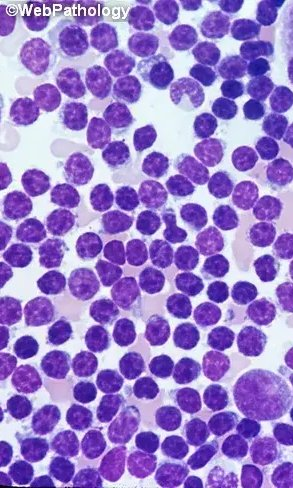
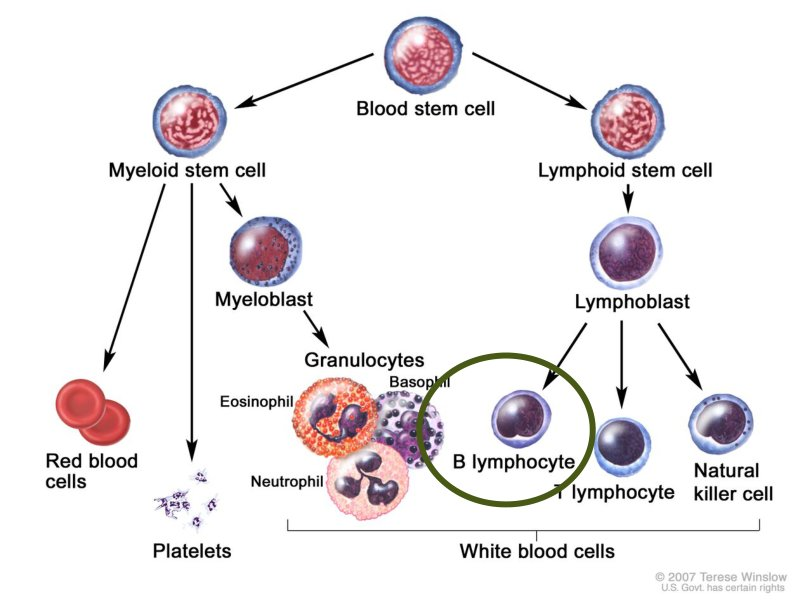
4.2 · Chronic lymphocytic leukemia: presentation, work-up and differential
“If you see lymphocytosis and you see the painless lymphadenopathy, you gotta think CLL.” Then slide 8: “Flow cytometry is the most important workup we can do here”; CD19 plus CD5 “is pathognomonic for CLL. That’s why you don’t need the bone marrow biopsy.”
- Signs and symptoms (slide 7):
- Frequently diagnosed while asymptomatic, on routine blood work.
- Painless lymphadenopathy (50–90% of cases): localized or generalized, firm, mobile.
- 5–10% of patients develop B symptoms (weight loss, night sweats, fevers).
- Anemia: fatigue. Thrombocytopenia: easy bruising, bleeding. Ineffective white blood cells (WBCs): infections.
- Exam: splenomegaly (~40%), less commonly hepatomegaly.
- Labs: lymphocytosis (must be >5K; often >100K); frequently anemia.
- Work-up and diagnosis (slide 8):
- Diagnosis is confirmed by flow cytometry (underlined on the slide), which identifies a clonal B-cell population.
- Peripheral blood: absolute lymphocyte count (ALC) > 5K for 3 months, or ALC < 5K with lymphadenopathy or other symptoms; coexpression of CD19 and CD5 on the lymphocytes.
- Cytogenetics are important for prognosis and have some treatment considerations.
- Usually does not require a bone marrow biopsy for diagnosis.
- Differential diagnosis (slide 9):
- Monoclonal B lymphocytosis: elevated ALC but <5K lymphocytes, with no lymphadenopathy, organomegaly, cytopenias, or other symptoms; progresses to chronic lymphocytic leukemia at 1–2% per year.
- Atypical lymphocytosis with some infections, including pertussis.
- Other lymphoproliferative disorders: Waldenström macroglobulinemia, hairy cell leukemia, lymphomas in leukemic phase; told apart on morphology and immunophenotype.
| Lymphocytosis (slides 8–9) | Chronic lymphocytic leukemia | Monoclonal B lymphocytosis |
|---|---|---|
| Absolute lymphocyte count (ALC) | > 5K for 3 months, or < 5K with lymphadenopathy or other symptoms | Elevated but < 5K |
| Lymphadenopathy, organomegaly, cytopenias, symptoms | May be present (they make a count under 5K chronic lymphocytic leukemia) | Absent |
| Markers | Coexpression of CD19 and CD5; clonal B cells on flow cytometry | Not covered in the lecture |
| Course | See 4.4 | Progresses to chronic lymphocytic leukemia at 1–2% per year |
4.3 · Chronic lymphocytic leukemia: Rai staging
- Rai classification (slide 10): historically used to describe prognostic groups. It does not require advanced imaging and can be done with the physical exam and labs. It may be used to decide the indication for treatment (treatment begins with symptomatic disease or rapid progression).
- More contemporary prognosis uses the CLL International Prognostic Index (CLL-IPI), named on the slide; its items are not shown.
| Rai stage (slide 10) | Findings |
|---|---|
| 0 | Asymptomatic lymphocytosis |
| I | Lymphocytosis and lymphadenopathy |
| II | Lymphocytosis, lymphadenopathy, organomegaly* |
| III | Lymphocytosis and anemia, with or without lymphadenopathy and/or organomegaly |
| IV | Lymphocytosis and thrombocytopenia, with or without lymphadenopathy, organomegaly, and/or anemia |
| *Organomegaly = hepatomegaly and/or splenomegaly. | |
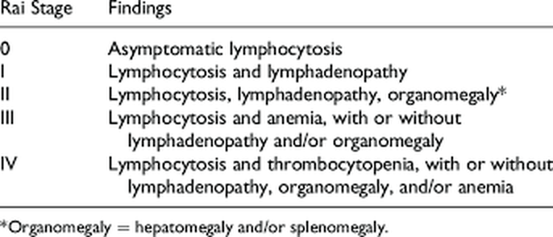
Rai stage I. Rai stage I is lymphocytosis and lymphadenopathy. Stage 0 is asymptomatic lymphocytosis alone, stage II adds organomegaly (hepatomegaly and/or splenomegaly), stage III is lymphocytosis with anemia and stage IV is lymphocytosis with thrombocytopenia.
4.4 · Chronic lymphocytic leukemia: management, prognosis and patient education
And on observation (slides 11, 13): “an isolated white count alone does not equal treatment”; a count that doubles within six months is treated.
- Management (slide 11):
- Asymptomatic patients may be observed (watch and wait) until evidence of rapid progression (doubling of the lymphocyte count in < 6 months) or disease-related symptoms.
- Targeted therapies: Bruton tyrosine kinase (BTK) inhibitors, usually continuous if monotherapy: ibrutinib, acalabrutinib, zanubrutinib. BCL-2 inhibitors, combined with monoclonal antibodies for a fixed duration: venetoclax. Monoclonal antibodies: rituximab, obinutuzumab, ofatumumab.
- A trend toward combination therapies.
- Prognosis (slide 12): 5-year relative survival ~88% (beginning in 2013), much improved over historical chemotherapy because of novel agents. Risk of Richter transformation: chronic lymphocytic leukemia transforming to an aggressive B-cell lymphoma, with poor outcomes. With novel therapies in development (CAR-T (chimeric antigen receptor T-cell) therapy, bispecific antibodies) and the elderly age at onset, many patients will die with chronic lymphocytic leukemia rather than from it.
- Patient education (slide 13): requires referral to and management by a hematologist/oncologist. Unlikely to require hospitalization; treatment is likely based on patient preferences and mutations: pill therapy, once or twice daily and indefinite; infusion + pill, time-limited but more intensive; combination therapies under development. Follow-ups for lab monitoring and treatment, but a very good long-term prognosis is likely.
Chronic lymphocytic leukemia (small lymphocytic lymphoma)
Defining feature: an older adult with a lymphocytosis above 5,000, often found on routine blood work, with painless firm mobile nodes; flow cytometry shows clonal B cells coexpressing CD19 and CD5
- Definition
- A proliferative leukemia of mature B-cell lymphocytes in blood, bone marrow, lymph nodes and spleen; 80% from deletion 13q, deletion 11q, trisomy 12 or deletion 17p (slides 4–5).
- Who gets it
- Median age 70; twice as common in males; more common in Eastern Europeans and people of Jewish descent; 1% of new United States cancers (slides 4, 6).
- Risk factors
- Age, male sex, Eastern European or Jewish descent; no known occupational or environmental risk factors (slide 6).
- Classic signs & symptoms
- Often none (routine blood work); painless lymphadenopathy (50–90%); B symptoms in 5–10%; fatigue (anemia), easy bruising and bleeding (thrombocytopenia), infections (slide 7).
- Physical exam findings
- Firm, mobile nodes, localized or generalized; splenomegaly (~40%), less often hepatomegaly (slide 7).
- Diagnostics / tests
- Lymphocytosis (must be >5K, often >100K), frequently anemia; flow cytometry confirms (clonal B cells); absolute lymphocyte count >5K for 3 months or <5K with nodes or symptoms; CD19 and CD5 coexpression; cytogenetics for prognosis; bone marrow biopsy usually not needed; Rai stage 0–IV from exam and labs (slides 7–10). Differential: monoclonal B lymphocytosis, infection (pertussis), Waldenström macroglobulinemia, hairy cell leukemia, leukemic-phase lymphoma (slide 9).
- First-line treatment
- Watch and wait if asymptomatic; treat for rapid progression (lymphocyte doubling <6 months) or symptoms: Bruton tyrosine kinase inhibitors (ibrutinib, acalabrutinib, zanubrutinib; continuous), venetoclax with a monoclonal antibody (fixed duration), monoclonal antibodies (rituximab, obinutuzumab, ofatumumab); hematology/oncology referral (slides 11, 13).
- Complications
- Infections, bleeding, anemia (slide 7); Richter transformation to an aggressive B-cell lymphoma, with poor outcomes; 5-year relative survival ~88%; many die with it rather than from it (slide 12).
Slides 3–13
4.5 · Non-Hodgkin lymphoma: definition and the indolent lymphomas
- Definition (slide 15): non-Hodgkin lymphoma (NHL) is a diverse group of malignancies of lymphoid tissues derived from B cells, T cells, or NK (natural killer) cells that present frequently with lymphadenopathy. 4% of all new cancer diagnoses in the United States. 85% are B-cell; 15% are T-cell or NK-cell.
- The range (slide 15): from very aggressive (Burkitt, diffuse large B-cell, T-cell leukemia/lymphoma) to indolent (follicular, marginal zone, chronic lymphocytic leukemia/small lymphocytic lymphoma).
| Non-Hodgkin lymphoma: the range (slide 15) | Types named |
|---|---|
| Very aggressive | Burkitt; diffuse large B-cell; T-cell leukemia/lymphoma |
| Indolent | Follicular; marginal zone; chronic lymphocytic leukemia/small lymphocytic lymphoma |
Follicular lymphoma (slide 16):
- The most common indolent histology of non-Hodgkin lymphoma; typically an indolent presentation with waxing and waning painless lymphadenopathy.
- Caused by the chromosomal translocation t(14;18), which places the BCL-2 gene on chromosome 14, preventing cell death.
- Microscopy often shows clusters of packed follicles.
- Frequently no treatment required (watch and wait), but may be treated with intermittent low-intensity therapy if symptomatic; high-risk follicular lymphoma may need more aggressive chemotherapies and immunotherapies.
Marginal zone lymphomas (slide 17):
- 5–17% of all non-Hodgkin lymphoma, most commonly the extranodal subtype (MALT). More common in older adults.
- Subtypes: extranodal or mucosa-associated lymphoid tissue (MALT) lymphoma, the most common, involving organs with mucosa (gastrointestinal tract, eyes, lungs); gastric MALT: 2/3 of cases associated with H. pylori (Helicobacter pylori). Nodal marginal zone. Splenic marginal zone: associated with hepatitis C.
Lymphoplasmacytic lymphoma (LPL) (slide 18):
- Also known as Waldenström macroglobulinemia (WM). MYD88 mutation frequently found (~90% of cases).
- Affects both lymphoplasmacytoid cells and plasma cells (terminally differentiated B cells), giving excess IgM production: a large antibody that causes hyperviscosity, often blurred vision, headache, rarely a cerebrovascular accident (CVA, stroke).
- Good prognosis overall: relative 5-year survival 78%.
- Risk factors: genetic (familial) and environmental (farming, pesticides); out loud: “kind of always choose that on the test if you see it.”
| Genes and translocations on the slides | Lymphoma | What it does (slide wording) |
|---|---|---|
| t(14;18), BCL-2 | Follicular (slide 16) | BCL-2 gene placed on chromosome 14, preventing cell death |
| MYD88 mutation (~90%) | Lymphoplasmacytic (Waldenström) (slide 18) | Excess IgM, hyperviscosity |
| Cyclin D1, t(11;14) | Mantle cell (slide 20) | Identifies the subtype |
| MYC upregulation | Burkitt (slide 31) | Stimulated cell growth and division |
| Deletion 13q, deletion 11q, trisomy 12, deletion 17p | Chronic lymphocytic leukemia (slide 5) | 80% of cases |
| Infections: H. pylori; hepatitis C | Gastric MALT (2/3); splenic marginal zone (slide 17) | Associations |
Follicular lymphoma
Defining feature: the most common indolent non-Hodgkin lymphoma: waxing and waning painless lymphadenopathy, t(14;18) with BCL-2, packed follicles
- Definition
- An indolent B-cell non-Hodgkin lymphoma from t(14;18), which puts BCL-2 on chromosome 14 and prevents cell death (slides 15–16).
- Who gets it
- Not covered in the lecture beyond “most common indolent histology” (slide 16).
- Risk factors
- Not covered separately; the non-Hodgkin risk factors of 4.7 (slide 23).
- Classic signs & symptoms
- Waxing and waning painless lymphadenopathy (slide 16).
- Physical exam findings
- Painless lymphadenopathy (slide 16); otherwise not covered in the lecture.
- Diagnostics / tests
- Microscopy: clusters of packed follicles (slide 16); excisional node biopsy and staging as in 4.7.
- First-line treatment
- Frequently none (watch and wait); intermittent low-intensity therapy if symptomatic; high-risk disease may need more aggressive chemotherapy and immunotherapy (slide 16); low-grade B-cell: rituximab if treatment is needed (slide 27).
- Complications
- Incurable; often only intermittent treatment (slide 34); indolent lymphomas risk progression to an aggressive, difficult-to-treat lymphoma; survival often 10–15+ years (slide 30).
Slides 15–16, 27, 30, 34
Marginal zone lymphoma (including MALT lymphoma)
Defining feature: an indolent lymphoma, most often extranodal (MALT) in a mucosal organ; gastric MALT goes with H. pylori, splenic marginal zone with hepatitis C
- Definition
- Indolent non-Hodgkin lymphomas, 5–17% of all; subtypes extranodal (mucosa-associated lymphoid tissue, the most common), nodal and splenic (slide 17).
- Who gets it
- More common in older adults (slide 17).
- Risk factors
- H. pylori gastritis (2/3 of gastric MALT); hepatitis C (splenic marginal zone) (slides 17, 23).
- Classic signs & symptoms
- Involves organs with mucosa: gastrointestinal tract, eyes, lungs (slide 17); otherwise not covered in the lecture.
- Physical exam findings
- Not covered in the lecture.
- Diagnostics / tests
- Not covered separately; the non-Hodgkin work-up of 4.7.
- First-line treatment
- Not covered separately; low-grade B-cell lymphomas: rituximab if treatment is required (slide 27).
- Complications
- Not covered separately; indolent lymphomas are incurable but survival is often 10–15+ years (slide 30).
Slides 17, 23, 27, 30
Lymphoplasmacytic lymphoma (Waldenström macroglobulinemia)
Defining feature: excess IgM causing hyperviscosity (blurred vision, headache); MYD88 mutation in ~90%
- Definition
- An indolent lymphoma of lymphoplasmacytoid cells and plasma cells (terminally differentiated B cells) that overproduces IgM (slide 18).
- Who gets it
- Not covered in the lecture beyond the risk factors.
- Risk factors
- Genetic (familial); environmental (farming, pesticides) (slide 18).
- Classic signs & symptoms
- Hyperviscosity: blurred vision, headache, rarely a stroke (slide 18).
- Physical exam findings
- Not covered in the lecture.
- Diagnostics / tests
- MYD88 mutation (~90%); IgM monoclonal protein (slides 18, 49).
- First-line treatment
- Not covered in the lecture (slide 49: a different pathophysiology and treatment from myeloma).
- Complications
- Hyperviscosity, rarely stroke; good prognosis, relative 5-year survival 78% (slide 18).
Slides 9, 18, 49
4.6 · Non-Hodgkin lymphoma: the aggressive and T-cell lymphomas
Diffuse large B-cell lymphoma (DLBCL) (slide 19):
- The most common non-Hodgkin lymphoma in adults; many subtypes and varieties based on location, mutations and infectious associations.
- Symptoms: a fast-growing mass/swelling and/or B symptoms (fever, fatigue, night sweats, weight loss).
- Risk factors: older age, family history, autoimmune conditions, infections, environmental.
- Education (slide 34): often treatable and curable with multi-agent chemotherapy (the slide’s cure percentage was corrected out loud; see “Where the slides are loose or disagree” at the top).
Mantle cell lymphoma (slide 20):
- A rare subtype, identified by the cyclin D1 gene translocation t(11;14); 5% of all non-Hodgkin lymphoma.
- Typically an aggressive course, although an indolent variant has been described.
- More common in men, median age 60–70 years.
- Median survival from under 2 years to over 9, depending on the aggressive or indolent variant.
T-cell lymphomas (slide 21): a diverse group of non-Hodgkin lymphomas with many subtypes:
| T-cell lymphoma (slide 21) | What the slide says |
|---|---|
| Peripheral T-cell lymphoma, not otherwise specified | Most common, 1/3 of cases |
| Nodal T-cell lymphoma | Listed |
| Anaplastic large cell lymphoma | Aggressive |
| Adult T-cell leukemia/lymphoma | Very aggressive, associated with HTLV-1 (human T-lymphotropic virus type 1), more common in the Caribbean, Central and South America |
| Intestinal T-cell lymphomas | Listed |
| Extranodal NK/T-cell lymphoma | Often affects the nasal region |
| Hepatosplenic T-cell lymphoma | Listed |
Cutaneous T-cell lymphoma (mycosis fungoides) (slide 22):
- Presents with skin lesions that resemble fungal infections, progressing to nodular lesions which may ulcerate.
- A more aggressive form is Sézary syndrome: a widespread, red, itchy rash (erythroderma) that may cause severe pruritus and diminished quality of life.
- Treatment focuses on the cutaneous manifestations (often no visceral involvement).
Diffuse large B-cell lymphoma
Defining feature: the most common non-Hodgkin lymphoma in adults: a fast-growing mass and/or B symptoms in an older adult
- Definition
- An aggressive B-cell non-Hodgkin lymphoma with many subtypes by location, mutation and infectious association (slides 15, 19).
- Who gets it
- Adults; older age (slide 19).
- Risk factors
- Older age, family history, autoimmune conditions, infections, environmental (slide 19).
- Classic signs & symptoms
- Fast-growing mass or swelling; B symptoms: fever, fatigue, night sweats, weight loss (slide 19).
- Physical exam findings
- A fast-growing mass/swelling (slide 19); otherwise not covered in the lecture.
- Diagnostics / tests
- Not covered separately; excisional biopsy, CT or PET staging and labs as in 4.7.
- First-line treatment
- Aggressive B-cell lymphomas: multi-drug chemotherapy such as R-CHOP (rituximab, cyclophosphamide, vincristine, doxorubicin, prednisone) (slide 27).
- Complications
- Often treatable and curable with multi-agent chemotherapy (slides 30, 34; cure percentage corrected out loud, see the top note); aggressive lymphomas: 5-year survival approximately 60–70% (slide 30); tumor lysis syndrome (slide 28).
Slides 15, 19, 27–30, 34
Mantle cell lymphoma
Defining feature: a rare, usually aggressive lymphoma identified by cyclin D1, t(11;14), in men aged 60–70
- Definition
- A rare non-Hodgkin subtype, 5% of cases, identified by the cyclin D1 translocation t(11;14); aggressive, with an indolent variant (slide 20).
- Who gets it
- More common in men; median age 60–70 years (slide 20).
- Risk factors
- Not covered separately; male sex (slides 20, 23).
- Classic signs & symptoms
- Not covered in the lecture.
- Physical exam findings
- Not covered in the lecture.
- Diagnostics / tests
- Cyclin D1 gene translocation t(11;14) (slide 20).
- First-line treatment
- Not covered separately (aggressive B-cell lymphomas: multi-drug chemotherapy, slide 27).
- Complications
- Median survival under 2 years to over 9, by variant (slide 20).
Slides 20, 27
T-cell lymphomas, including cutaneous T-cell lymphoma (mycosis fungoides, Sézary syndrome)
Defining feature: mycosis fungoides: skin lesions that look like a fungal infection, later nodules that may ulcerate; Sézary syndrome: widespread red itchy rash (erythroderma)
- Definition
- Non-Hodgkin lymphomas of T cells (15% of non-Hodgkin lymphoma together with NK-cell types); peripheral T-cell lymphoma, not otherwise specified, is the most common (1/3) (slides 15, 21).
- Who gets it
- Adult T-cell leukemia/lymphoma: more common in the Caribbean, Central and South America (slide 21); otherwise not covered in the lecture.
- Risk factors
- HTLV-1 (adult T-cell leukemia/lymphoma) (slides 21, 23).
- Classic signs & symptoms
- Mycosis fungoides: skin lesions resembling fungal infection; Sézary syndrome: erythroderma with severe pruritus; extranodal NK/T-cell lymphoma often affects the nasal region (slides 21–22).
- Physical exam findings
- Fungal-looking skin lesions progressing to nodules that may ulcerate; widespread red rash (slide 22).
- Diagnostics / tests
- Not covered in the lecture beyond the non-Hodgkin work-up.
- First-line treatment
- Cutaneous T-cell lymphoma: treatment focused on the skin (often no visceral involvement) (slide 22); T-cell lymphomas: CHOP-type regimens minus rituximab (no CD20 on T cells) (slide 27).
- Complications
- Respond less well than B-cell lymphomas (slide 30); Sézary syndrome: diminished quality of life (slide 22); adult T-cell leukemia/lymphoma is very aggressive (slide 21).
Slides 21–22, 27, 30
4.7 · Non-Hodgkin lymphoma: risk factors, presentation, work-up and staging
Work-up (slide 25): “Excisional biopsy is the key for diagnosis. If you ever see somebody with a negative fine needle aspiration, don’t trust it”; LDH (lactate dehydrogenase) “is a super important test to get on anybody with a lymphoma.” Staging (slide 26): “It’s all based on the diaphragm, so this is important.” A large mediastinal mass in a young woman with chest pressure: “That’s a lymphoma until proven otherwise” (slide 24).
- Risk factors (slide 23): higher incidence in White individuals and in developed countries; male gender; immunosuppression: prior immunotherapy, chemotherapy, radiation, or malignancy; prior transplantation; autoimmune conditions (systemic lupus erythematosus (SLE), Sjögren, celiac); Crohn’s; environmental exposures, including DDT (farming); chronic infections: H. pylori gastritis (MALT), HTLV-1, hepatitis C, HIV (human immunodeficiency virus), EBV (Epstein-Barr virus), Lyme disease, HHV-8 (human herpesvirus 8) (she has never seen a Lyme or HHV-8 lymphoma); family history.
- Signs and symptoms (slide 24):
- Peripheral lymphadenopathy in >2/3 of patients.
- Other: B symptoms (weight loss, night sweats, fever of unknown origin), rash, hypersensitivity reactions, fatigue, pruritus, malaise, ascites, effusion.
- About half develop extranodal disease (lymphoma outside the lymph nodes). Central nervous system (CNS) lymphoma: headaches, lethargy, neurologic defects that mirror primary CNS malignancies.
- Primary mediastinal B-cell lymphoma: a large mediastinal mass with cough and an abnormal chest X-ray.
- Work-up and diagnosis (slide 25):
- Diagnosis is made by excisional lymph node biopsy: reserve for significant enlargement (2 cm), persistent, and progressive increase in size. Avoid fine needle aspiration (FNA): an excisional biopsy is required to see the lymph node architecture, and FNA may miss the diagnosis.
- Imaging (usually CT (computed tomography) or PET (positron emission tomography)) is required to characterize and stage.
- Also a complete blood count (CBC) (cytopenias with bone marrow involvement), chemistries (electrolytes, particularly ruling out tumor lysis syndrome) and LDH (lactate dehydrogenase) (rapid proliferation); bone marrow biopsy.
- High-grade lymphomas, including Burkitt, require a lumbar puncture.
- Staging (slide 26): by the Lugano classification, a modified version of the older Ann Arbor system.
| Lymphoma stage (slides 26 and 40, Lugano / Ann Arbor picture) | Caption on the picture |
|---|---|
| Stage 1 | Localized disease; single lymph node region or single organ |
| Stage 2 | Two or more lymph node regions on the same side of the diaphragm |
| Stage 3 | Two or more lymph node regions above and below the diaphragm |
| Stage 4 | Widespread disease; multiple organs, with or without lymph node involvement |
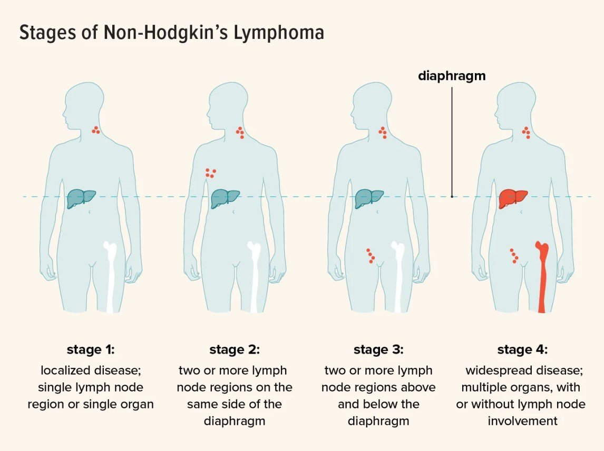
Non-Hodgkin lymphoma (the group)
Defining feature: lymphadenopathy (in more than 2/3) with or without B symptoms; diagnosed by excisional lymph node biopsy, never fine needle aspiration, and staged by CT or PET
- Definition
- A diverse group of malignancies of lymphoid tissues from B cells (85%), T cells or NK cells, presenting frequently with lymphadenopathy; very aggressive to indolent (slide 15).
- Who gets it
- 4% of new United States cancers; higher in White individuals, developed countries and males (slides 15, 23).
- Risk factors
- Male sex; immunosuppression (prior immunotherapy, chemotherapy, radiation, malignancy, transplantation); autoimmune disease (lupus, Sjögren, celiac), Crohn’s; DDT (farming); H. pylori, HTLV-1, hepatitis C, HIV, Epstein-Barr virus, Lyme disease, HHV-8; family history (slide 23).
- Classic signs & symptoms
- Peripheral lymphadenopathy (>2/3); B symptoms (weight loss, night sweats, fever of unknown origin); rash, hypersensitivity, fatigue, pruritus, malaise; CNS lymphoma: headache, lethargy, neurologic defects; mediastinal: cough (slide 24).
- Physical exam findings
- Lymphadenopathy; ascites, effusion; extranodal disease in about half (slide 24).
- Diagnostics / tests
- Excisional lymph node biopsy (node 2 cm, persistent, growing; avoid fine needle aspiration); CT or PET to stage (Lugano); CBC, chemistries (tumor lysis), LDH; bone marrow biopsy; lumbar puncture for high-grade lymphomas including Burkitt; chest X-ray abnormal with a mediastinal mass (slides 24–26).
- First-line treatment
- By subtype: single node, non-aggressive: radiation; low-grade B-cell: rituximab ± chemotherapy; aggressive B-cell: R-CHOP; T-cell: CHOP without rituximab; hematologist referral, ideally a lymphoma expert (slides 27, 34).
- Complications
- Tumor lysis syndrome; infections, bleeding, anemia, electrolyte abnormalities, diarrhea from chemotherapy; indolent types incurable (10–15+ years), aggressive types often curable with chemotherapy; poor prognosis with age >60, extranodal sites, performance status >2, stage III or IV, high LDH (slides 28–30).
Slides 15, 23–30, 34
4.8 · Non-Hodgkin lymphoma: management, tumor lysis syndrome, prognosis and education
“You need to know it, you need to recognize it for your testing and just in life.” Her lab summary: high potassium, high phosphorus, high uric acid (and low calcium, which she added; not on the slide); fluids and allopurinol. Also: “T cells always worse than B cells” (slide 30).
| Management of non-Hodgkin lymphoma (slide 27): “Highly dependent on subtype and presentation” | Treatment |
|---|---|
| Single node, non-aggressive | Radiation |
| Low-grade B-cell lymphomas | Rituximab (anti-CD20 monoclonal antibody) if treatment is required, ± chemotherapy if extensive |
| Aggressive B-cell lymphomas | Often multi-drug chemotherapy, for example R-CHOP: rituximab, cyclophosphamide, vincristine, doxorubicin, prednisone; some cancers get even more aggressive regimens |
| T-cell lymphomas | Similar regimens (CHOP) minus rituximab (no CD20 expression on T cells) |
- Tumor lysis syndrome (slide 28):
- A medical emergency from rapid tumor breakdown and release of cellular products (potassium, phosphorus, uric acid).
- May cause acute renal failure from precipitation of uric acid and calcium phosphate crystals in the renal tubules, worsening the condition.
- Can occur spontaneously in highly aggressive lymphomas (Burkitt).
- The largest risk is hyperkalemia → arrhythmia and potential death.
- Requires aggressive IV (intravenous) fluid hydration. It should be anticipated in aggressive lymphoma, with allopurinol (a hypouricemic agent) and fluids given in advance.
- Also seen outside lymphoma: acute lymphoblastic leukemia (ALL) and acute myeloid leukemia (AML) with marked leukocytosis.
- Other treatment complications (slide 29): infections, bleeding, anemia (due to chemotherapy), electrolyte abnormalities, diarrhea; associated with all chemotherapy agents.
- Prognosis (slide 30):
- Indolent lymphomas: incurable but survival often 10–15+ years, with intermittent treatment; risk of progression to an aggressive, difficult-to-treat lymphoma.
- Aggressive lymphomas: often treatable and often cured with chemotherapy (the slide’s percentage was corrected out loud; see the top note), 5-year survival approximately 60–70%.
- T-cell lymphomas respond less well than B-cell lymphomas.
- Patient education (slide 34): referral to and management by a hematologist, ideally a lymphoma expert. Aggressive lymphomas with electrolyte abnormalities may require hospitalization; otherwise treatment is often outpatient; Burkitt lymphoma requires rapid transfer of care. Diffuse large B-cell lymphoma: often treatable and curable. Follicular lymphoma: often no treatment or only intermittent treatment, but incurable. On starting treatment, drink plenty of fluids and take allopurinol!
| Non-Hodgkin lymphoma: poor prognosis (slide 30) |
|---|
| Age > 60 |
| Extranodal sites |
| Poor (>2) performance status, ECOG (Eastern Cooperative Oncology Group) |
| Stage III or IV |
| Elevated LDH (lactate dehydrogenase) |
Tumor lysis syndrome
Defining feature: a medical emergency after rapid tumor breakdown: potassium, phosphorus and uric acid flood out; hyperkalemia and arrhythmia are the biggest danger
- Definition
- Rapid tumor breakdown with release of potassium, phosphorus and uric acid (slide 28).
- Who gets it
- Aggressive lymphoma, spontaneously in Burkitt; acute lymphoblastic and acute myeloid leukemia with marked leukocytosis (slides 28, 33).
- Risk factors
- Highly aggressive lymphoma (Burkitt), starting therapy (slides 28, 33).
- Classic signs & symptoms
- Arrhythmia from hyperkalemia; acute renal failure (slide 28).
- Physical exam findings
- Not covered in the lecture.
- Diagnostics / tests
- Chemistries (electrolytes) in the lymphoma work-up to rule it out (slide 25).
- First-line treatment
- Aggressive IV fluid hydration; anticipate it: allopurinol and fluids in advance; patients drink plenty of fluids and take allopurinol (slides 28, 34).
- Complications
- Acute renal failure (uric acid and calcium phosphate crystals in the tubules); hyperkalemia → arrhythmia, potential death (slide 28).
Slides 25, 28, 33–34
4.9 · Burkitt lymphoma
And: “The endemic region of this is Sub-Saharan Africa. You’ll probably see this on a test. It is strongly, strongly, strongly associated with EBV.”
- What it is (slide 31): a very aggressive lymphoma variant associated with MYC gene upregulation, which stimulates cell growth and division.
- Presentation (slide 31): very rapidly growing, often painless swelling (changes visible over the course of one day); commonly B symptoms (fever, night sweats, weight loss).
- Three types (slide 32):
- Endemic: largely sub-Saharan Africa and New Guinea, strongly associated with EBV (Epstein-Barr virus).
- Sporadic: typically the United States and Western Europe, more in males, almost always age < 35.
- Immunodeficiency-associated: associated with HIV/AIDS.
- Pathology (slide 32): the “starry sky” appearance: sheets of lymphoma with benign macrophages clearing out dying lymphoma cells.
- Management (slide 33): treatment must start promptly, with emergent referral to a hematologist. The doubling time is extremely fast: the tumor may be seen expanding within the same 24 hours. Excellent long-term prognosis if identified early and treated with multi-agent chemotherapy: >90% in children, 50–90% in adults. Caution when starting therapy because of tumor lysis syndrome. A high-grade lymphoma, so the work-up includes a lumbar puncture (slide 25); Burkitt lymphoma requires rapid transfer of care (slide 34).
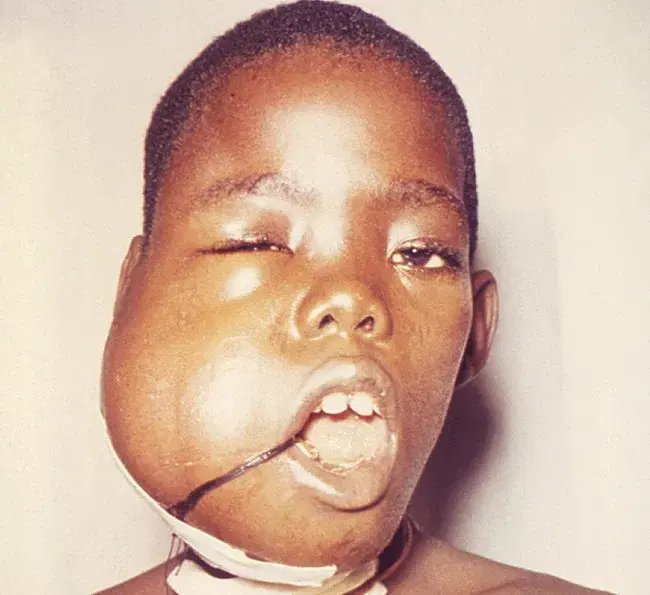
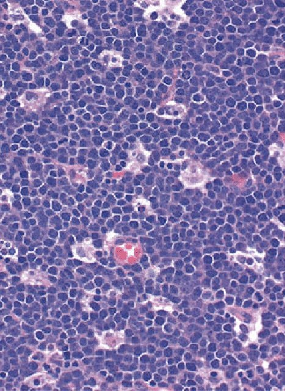
Burkitt lymphoma
Defining feature: a very rapidly growing, often painless swelling (visible change within a day) with MYC upregulation and a “starry sky” pattern; emergent hematology referral
- Definition
- A very aggressive B-cell lymphoma driven by MYC gene upregulation (slides 15, 31).
- Who gets it
- Endemic: sub-Saharan Africa and New Guinea; sporadic: United States and Western Europe, males, almost always under 35; immunodeficiency-associated: HIV/AIDS (slide 32).
- Risk factors
- Epstein-Barr virus (endemic type); HIV/AIDS; male sex (sporadic) (slide 32).
- Classic signs & symptoms
- Very rapidly growing, often painless swelling; B symptoms (fever, night sweats, weight loss) (slide 31).
- Physical exam findings
- A rapidly expanding mass, such as the jaw swelling pictured (slide 31).
- Diagnostics / tests
- Pathology: “starry sky” (sheets of lymphoma with benign macrophages) (slide 32); excisional biopsy, staging and a lumbar puncture (slide 25).
- First-line treatment
- Prompt treatment with emergent hematology referral and rapid transfer of care; multi-agent chemotherapy, with caution for tumor lysis syndrome (allopurinol, fluids) (slides 33–34).
- Complications
- Tumor lysis syndrome, even spontaneously (slides 28, 33); excellent prognosis if found early: >90% in children, 50–90% in adults (slide 33).
Slides 25, 28, 31–34
4.10 · Hodgkin lymphoma: definition, risk factors and presentation
“When you see the Reed-Sternberg cells, I want you to automatically think of Hodgkin’s lymphoma.” And slide 38: node pain after drinking (“every Friday night when I go out ... for a drink, it really is acting up”) “if you hear this on a test” points to Hodgkin.
- Definition (slide 36): a type of B-cell lymphoma characterized by few malignant cells (Reed-Sternberg cells) among numerous immune effector cells. Reed-Sternberg cells are binucleated, neoplastic B cells.
- ~10–15% of all lymphoma diagnoses worldwide (slide 36).
- Marked by contiguous spread through lymph nodes (an orderly fashion) (slide 36).
- Risk factors (slide 37): bimodal incidence: adults in their 20s and adults > 60 years old; same-sex siblings have a 10× increased risk; EBV (Epstein-Barr virus) suspected (identified in 40–50% of cases); others including HIV, HHV-6 (human herpesvirus 6) and TB (tuberculosis).
- Signs and symptoms (slide 38):
- Painless, asymptomatic lymphadenopathy (70%), usually cervical, but could be supraclavicular or mediastinal.
- Pain may worsen with alcohol consumption.
- Mediastinal mass on chest X-ray.
- Splenomegaly (~30%), hepatomegaly sometimes.
- Pruritus, may be very intense if present.
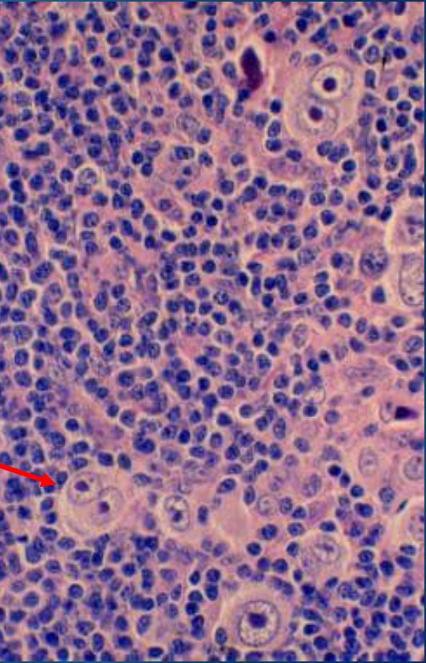
4.11 · Hodgkin lymphoma: work-up, staging, management and prognosis
Painless lymphadenopathy treated with ABVD = Hodgkin lymphoma. For Hodgkin, “Staging does guide the type of chemotherapy we give”; she also said: “Always get that lymph node out. Don’t do a fine needle aspiration.”
- Work-up and diagnosis (slide 39): diagnosis is made by excisional lymph node biopsy; avoid fine needle aspiration (FNA) (an excisional biopsy is needed to see the node architecture; FNA may miss the diagnosis). Classical Hodgkin lymphoma expresses CD15 and CD30. A chest X-ray rules out a mediastinal mass/adenopathy. Also a complete blood count (CBC) (cytopenias with marrow involvement), chemistries (electrolytes, ruling out tumor lysis syndrome), LDH (lactate dehydrogenase) (rapid proliferation), and a bone marrow biopsy.
- Staging (slide 40): the Lugano classification (a modified Ann Arbor system); the same four-stage picture as non-Hodgkin lymphoma (table in 4.7).
| Hodgkin lymphoma management by stage (slide 41, titled “Management of NHL”) | Treatment |
|---|---|
| Early stage I and IIA | Short course of chemotherapy (ABVD historically) |
| Bulky stage I or II disease, or B symptoms | Chemotherapy + radiation |
| Stage III or IV | Chemotherapy |
| ABVD: Adriamycin (doxorubicin), bleomycin, vinblastine, dacarbazine. New novel agents are replacing bleomycin because of its pulmonary toxicities. | |
- Prognosis (slide 42): generally curable, with >90% of patients alive at 5 years. If relapse after first-line treatment, an allogeneic stem cell transplant may be required. Inferior results with older patients, bulky disease, or certain subtypes (lymphocyte depleted or mixed cellularity). Delayed toxicities may include myelodysplastic syndrome (MDS), secondary leukemia and other cancers.
Hodgkin lymphoma
Defining feature: a young adult (20s) or adult over 60 with painless cervical lymphadenopathy, maybe a mediastinal mass; Reed-Sternberg cells (binucleated) that are CD15 and CD30 positive
- Definition
- A B-cell lymphoma of few malignant Reed-Sternberg cells (binucleated, neoplastic B cells) among many immune effector cells; spreads contiguously through nodes; 10–15% of lymphomas worldwide (slide 36).
- Who gets it
- Bimodal: adults in their 20s and over 60 (slide 37).
- Risk factors
- Same-sex sibling with Hodgkin (10×); Epstein-Barr virus (40–50% of cases); HIV, HHV-6, tuberculosis (slide 37).
- Classic signs & symptoms
- Painless asymptomatic lymphadenopathy (70%), usually cervical (also supraclavicular, mediastinal); pain may worsen with alcohol; pruritus, may be very intense (slide 38); B symptoms change the treatment (slide 41).
- Physical exam findings
- Cervical, supraclavicular nodes; splenomegaly (~30%), sometimes hepatomegaly (slide 38).
- Diagnostics / tests
- Excisional lymph node biopsy (avoid fine needle aspiration); classical type CD15 and CD30; chest X-ray for a mediastinal mass; CBC, chemistries, LDH; bone marrow biopsy; Lugano staging (slides 38–40).
- First-line treatment
- Stage I and IIA: short chemotherapy (ABVD historically); bulky stage I or II or B symptoms: chemotherapy + radiation; stage III or IV: chemotherapy; relapse: allogeneic stem cell transplant (slides 41–42).
- Complications
- Bleomycin pulmonary toxicity (slide 41); delayed myelodysplastic syndrome, secondary leukemia, other cancers; worse with older age, bulky disease, lymphocyte-depleted or mixed-cellularity types; >90% alive at 5 years (slide 42).
Slides 36–42
4.12 · Plasma cell disorders and multiple myeloma: pathogenesis and risk factors
- Plasma cell disorders (slide 44): a spectrum of malignant and premalignant conditions arising from terminally differentiated B cells (plasma cells), ranging from MGUS (monoclonal gammopathy of undetermined significance): asymptomatic, low risk of progression, to malignant myeloma: an incurable malignancy. Multiple myeloma is 10% of all hematologic malignancies.
- Pathogenesis of multiple myeloma (slide 45):
- Normal plasma cells produce antibodies; clonal evolution of myeloma produces a single, overproduced antibody type, most commonly IgG.
- It activates osteoclasts, releasing calcium into the bloodstream.
- Renal dysfunction often comes from light chain and calcium phosphate deposition.
- Anemia is multifactorial: renal dysfunction and bone marrow involvement.
- Risk factors (slide 46): age (risk rises with age; most diagnoses over 65); race: African Americans at higher risk than other races; family history; prior MGUS or SMM (smoldering multiple myeloma); environmental exposures: radiation, chemical, occupational.
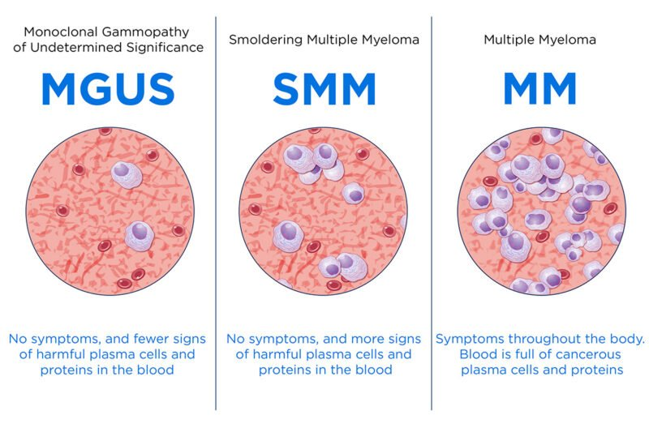
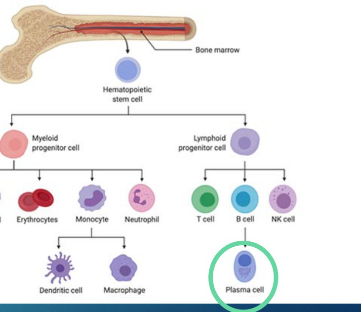
4.13 · Multiple myeloma: CRAB, SLiM and the “punched out” lesions
The CRAB features: hypercalcemia, renal insufficiency, anemia, bone lesions. SLiM is “kind of new criteria”: 60% plasma cells, light chains, MRI.
- Signs and symptoms: the CRAB features (slide 47):
- Calcium (hypercalcemia): constipation, increased thirst, urinary frequency, nausea.
- Renal insufficiency: swelling.
- Anemia: fatigue, shortness of breath.
- Bone lesions/pain: often back, chest, or pelvis.
- May be asymptomatic with certain lab findings: SLiM: bone marrow plasma cells, an abnormal light chain ratio, an MRI (magnetic resonance imaging) lesion (slide 47).
- At higher risk of infections (slide 47).
- Osteolytic lesions: “punched out lesions” (slide 48).
| Myeloma-defining findings (slide 47 text and picture) | Letter | What it means on the slide |
|---|---|---|
| CRAB (symptoms) | C | Hypercalcemia: constipation, increased thirst, urinary frequency, nausea |
| R | Renal insufficiency: swelling | |
| A | Anemia: fatigue, shortness of breath | |
| B | Bone lesions/pain (lytic bone lesions): back, chest, pelvis | |
| SLiM (lab findings, may be asymptomatic) | S | Bone marrow plasma cells: picture “Bone marrow ≥ Sixty (60%) plasmacytosis” |
| Li | Abnormal light chain ratio: picture “Light chains >100:1” | |
| M | MRI lesion: picture “MRI: ≥2 lesions” | |
| The picture adds: “Also: amyloidosis, hyperviscosity, polyneuropathies.” | ||
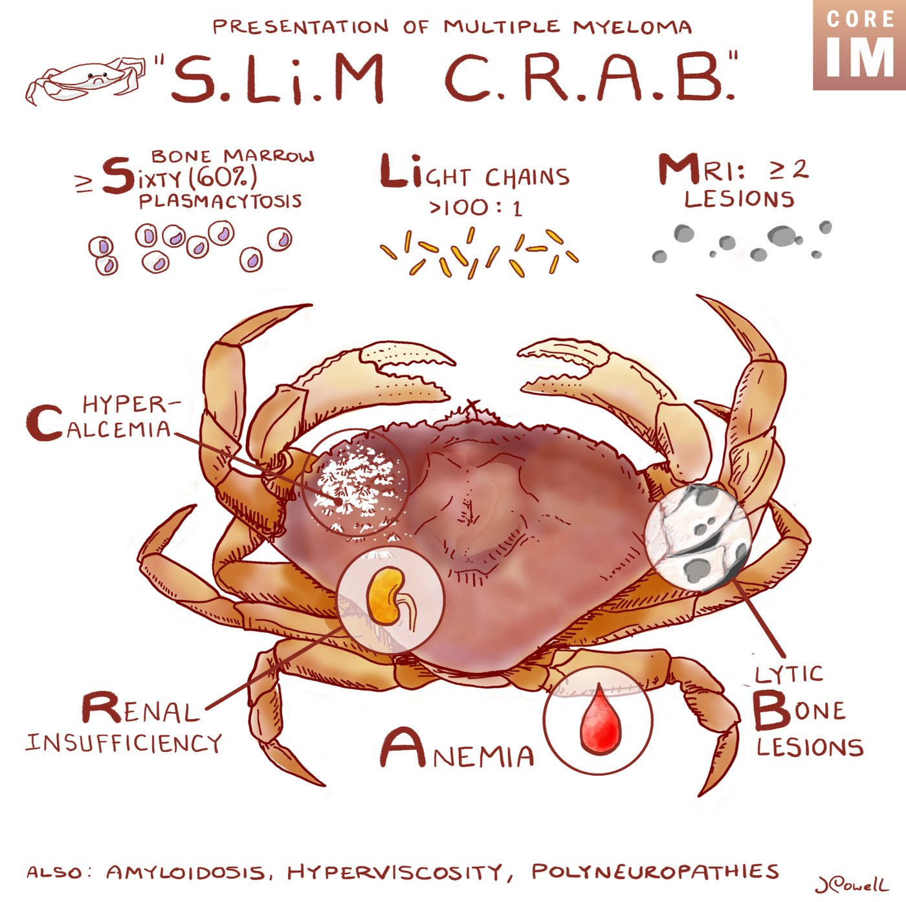
4.14 · Multiple myeloma: differential, diagnosis and R-ISS staging
Acute leukemia needs 20% marrow blasts (Lecture 49); myeloma needs only 10% plasma cells. And: “You’ll probably want to remember Bence Jones protein”: a patient who is anemic, with bone pain, renal failure and Bence Jones protein has myeloma.
- Differential diagnosis (slide 49):
- Multiple myeloma must be told from smoldering myeloma (a more indolent process, often monitored) and MGUS (asymptomatic) (4.16).
- Waldenström macroglobulinemia often produces an IgM monoclonal protein, with a different pathophysiology and treatment (4.5).
- Others with a paraprotein: chronic lymphocytic leukemia/small lymphocytic lymphoma, non-Hodgkin lymphoma, amyloidosis.
- Reactive hypergammaglobulinemia (cirrhosis, chronic inflammation).
- Work-up and diagnosis (slide 50):
- Diagnosis: ≥ 10% bone marrow plasma cells or a biopsy-proven plasmacytoma, + 1 or more CRAB feature.
- Monoclonal protein on SPEP (serum protein electrophoresis) is characteristic.
- Positive urine monoclonal protein: “Bence Jones protein”.
- Additional work-up: CBC, metabolic/electrolyte panel; serum protein electrophoresis; 24-hour urine protein electrophoresis; bone marrow biopsy with flow; light chains (kappa and lambda): check the ratio; serum beta-2 microglobulin (printed “macroglobulin”); imaging for bone lesions, classically whole-body CT.
- Staging (slide 51): the R-ISS (Revised International Staging System) classification, historically used to describe prognostic groups; characterized by chromosomal abnormalities, proliferative status and the impact on normal protein production. While prognostic, it does not broadly change treatment decisions (out loud: “we don’t use staging too much in myeloma”; “If you’re not stage one or stage three, then you’re stage two”).
| R-ISS stage (slide 51, “Table 2. R-ISS for MM”) | Criteria | Survival (months) |
|---|---|---|
| I | β2-microglobulin <3.5 mg/L; albumin ≥3.5 g/dL and standard-risk chromosomal abnormalities and normal LDH (defined as less than ULN) | 82 |
| II | Not R-ISS stage I or III | 62 |
| III | β2-microglobulin ≥5.5 mg/L regardless of albumin levels and high-risk chromosomal abnormalities: del 17p, t(4;14) or t(14;16) and high LDH (defined as higher than ULN) | 40 |
| The table’s footnote: del, deletion; LDH, lactate dehydrogenase; MM, multiple myeloma; R-ISS, Revised International Staging System; t, translocation; ULN, upper limit of normal. (Current guideline note: the published R-ISS stage III needs β2-microglobulin ≥5.5 mg/L with either high-risk abnormalities or high LDH; the slide prints “and”.) | ||
4.15 · Multiple myeloma: management, prognosis and patient education
- Goal of treatment (slide 52): as myeloma is by definition a symptomatic condition and is considered incurable, the goal is maintaining prolonged remissions to improve survival and maintain quality of life.
- Management (slide 53):
- Newly diagnosed patients: a 3- or 4-drug regimen with a proteasome inhibitor and immunomodulatory drug backbone with steroids.
- If a transplant candidate: autologous transplant improves overall survival, as does maintenance therapy after transplant.
- Most patients will relapse and will need continuous therapy to maintain disease control.
- Novel therapies (CAR-T, bispecifics, antibody-drug conjugates, other inhibitors) are currently used for relapsed myeloma.
- Prognosis (slide 54): 5-year relative survival approximately 60% (2018–2022 data). Each line of therapy gives shorter remissions, and the disease remains incurable/fatal. Novel therapies (CAR-T, bispecific antibodies) may change the landscape; recent studies suggest newly diagnosed patients today may survive > 10 years.
- Patient education (slide 55): referral to and management by a hematologist/oncologist, ideally a myeloma expert; treatment is likely lifelong, with periods of remission (disease control) followed by worsening symptoms; currently incurable (may change during the patient’s life); life-long follow-ups for lab monitoring and treatment.
Multiple myeloma
Defining feature: an older adult (most over 65) with CRAB: hypercalcemia, renal insufficiency, anemia, bone pain with “punched out” lytic lesions; ≥10% marrow plasma cells and an M-protein on serum protein electrophoresis
- Definition
- A malignant, incurable clonal plasma cell disorder producing one overproduced antibody (most commonly IgG); 10% of hematologic malignancies (slides 44–45).
- Who gets it
- Risk rises with age, most diagnosed over 65; African Americans at higher risk (slide 46).
- Risk factors
- Age; African American race; family history; prior MGUS or smoldering myeloma; radiation, chemical, occupational exposures (slide 46).
- Classic signs & symptoms
- Hypercalcemia (constipation, thirst, urinary frequency, nausea); renal insufficiency (swelling); anemia (fatigue, shortness of breath); bone pain (back, chest, pelvis); infections; may be asymptomatic with SLiM lab findings (slide 47).
- Physical exam findings
- Swelling (renal insufficiency) (slide 47); otherwise not covered in the lecture.
- Diagnostics / tests
- ≥10% bone marrow plasma cells or biopsy-proven plasmacytoma + 1 or more CRAB feature; M-protein on serum protein electrophoresis; urine Bence Jones protein; CBC, metabolic panel, 24-hour urine protein electrophoresis, bone marrow biopsy with flow, kappa/lambda light chain ratio, beta-2 microglobulin, whole-body CT for bone lesions (“punched out”); R-ISS stage (slides 48, 50–51).
- First-line treatment
- 3- or 4-drug regimen: proteasome inhibitor + immunomodulatory drug backbone + steroids; autologous transplant and post-transplant maintenance if a candidate; continuous therapy at relapse; hematologist/oncologist, ideally a myeloma expert (slides 52–53, 55).
- Complications
- Hypercalcemia, renal dysfunction (light chain and calcium phosphate deposition), anemia, lytic bone lesions, infections; also amyloidosis, hyperviscosity, polyneuropathies (slide 47 picture); relapse with shorter remissions each line, incurable; 5-year relative survival ~60% (slides 45, 47, 53–54).
Slides 44–55
4.16 · MGUS and smoldering myeloma
- MGUS, monoclonal gammopathy of undetermined (the slide: “unknown”) significance (slide 56): a clonal proliferation, a low-level plasma cell disorder; by definition, asymptomatic. Definition: M-protein < 3 g/dL; clonal bone marrow plasma cells < 10%; no myeloma-defining characteristics. Risk of progression to myeloma ~1% per year.
- Smoldering myeloma (slide 57): an intermediate-stage clonal plasma cell disorder: M-protein > 3 g/dL AND 10–60% bone marrow plasma cells; no myeloma-defining events (anemia, bone lesions, renal failure, etc.). Typically does not require treatment, though early intervention may be considered for some subgroups. Rate of progression approximately 10% per year, but some high-risk groups have a >50% risk of progression within 2 years.
| Plasma cell disorders (slides 50, 56, 57; 47) | MGUS | Smoldering myeloma | Multiple myeloma |
|---|---|---|---|
| M-protein | < 3 g/dL | > 3 g/dL AND | Monoclonal protein on SPEP is characteristic |
| Bone marrow plasma cells | < 10% (clonal) | 10–60% | ≥ 10% (or biopsy-proven plasmacytoma) |
| Myeloma-defining events (CRAB) | None (asymptomatic by definition) | None (anemia, bone lesions, renal failure, etc.) | 1 or more CRAB feature (or a SLiM marker, slide 47) |
| Progression | ~1% per year | ~10% per year; some high-risk groups >50% within 2 years | Relapses; incurable |
| Treatment | Not covered in the lecture | Typically none; early intervention for some subgroups | 3- or 4-drug regimen ± autologous transplant |
Monoclonal gammopathy of undetermined significance (MGUS)
Defining feature: an asymptomatic patient with an M-protein under 3 g/dL, marrow plasma cells under 10% and no CRAB; progresses to myeloma about 1% a year
- Definition
- A low-level clonal plasma cell disorder: M-protein <3 g/dL, clonal marrow plasma cells <10%, no myeloma-defining characteristics (slide 56).
- Who gets it
- Not covered in the lecture.
- Risk factors
- Not covered in the lecture (MGUS is itself a risk factor for myeloma, slide 46).
- Classic signs & symptoms
- None: asymptomatic by definition (slides 44, 56).
- Physical exam findings
- Not covered in the lecture.
- Diagnostics / tests
- M-protein <3 g/dL; clonal marrow plasma cells <10%; no myeloma-defining characteristics (slide 56).
- First-line treatment
- Not covered in the lecture (asymptomatic, low risk; slide 44).
- Complications
- Progression to myeloma ~1% per year (slide 56).
Slides 44, 46, 49, 52, 56
Smoldering myeloma
Defining feature: no symptoms and no CRAB, but an M-protein above 3 g/dL and 10–60% marrow plasma cells; progresses about 10% a year
- Definition
- An intermediate-stage clonal plasma cell disorder: M-protein >3 g/dL AND 10–60% bone marrow plasma cells, no myeloma-defining events (slide 57).
- Who gets it
- Not covered in the lecture.
- Risk factors
- Not covered in the lecture (smoldering myeloma is itself a risk factor for myeloma, slide 46).
- Classic signs & symptoms
- None (no symptoms, slide 44; no myeloma-defining events, slide 57).
- Physical exam findings
- Not covered in the lecture.
- Diagnostics / tests
- M-protein >3 g/dL and 10–60% marrow plasma cells without anemia, bone lesions or renal failure (slide 57).
- First-line treatment
- Typically none (a more indolent process, often monitored); early intervention for some subgroups (slides 49, 57).
- Complications
- Progression ~10% per year; some high-risk groups >50% within 2 years (slide 57).
Slides 44, 46, 49, 57
4.17 · Across the lifespan: what the deck says by age
The deck has no population slide; these are the age points it does make (syllabus objectives 2 and 4).
| Population | What the deck says |
|---|---|
| Infants | Not covered in the lecture. |
| Children | Burkitt lymphoma: endemic type in sub-Saharan Africa and New Guinea (Epstein-Barr virus), the jaw swelling pictured in a child; long-term prognosis >90% in children with early multi-agent chemotherapy (slides 31–33). |
| Adolescents and young adults | Hodgkin lymphoma: first peak in adults in their 20s (slide 37). Sporadic Burkitt: almost always under 35, more in males (slide 32). |
| Adults | Diffuse large B-cell lymphoma is the most common non-Hodgkin lymphoma in adults (slide 19); Burkitt prognosis 50–90% in adults (slide 33); mantle cell median age 60–70, more in men (slide 20). |
| Elderly | Chronic lymphocytic leukemia: median age at diagnosis 70; with the elderly age at onset, many patients die with it rather than from it (slides 4, 6, 12). Marginal zone lymphoma: more common in older adults (slide 17). Diffuse large B-cell lymphoma: older age a risk factor (slide 19). Hodgkin lymphoma: second peak over 60, with inferior results in older patients (slides 37, 42). Non-Hodgkin lymphoma: age > 60 is a poor prognostic factor (slide 30). Multiple myeloma: risk rises with age, most diagnosed over 65 (slide 46). |
Referral, education and prognosis in one place: every disease on the deck goes to a hematologist/oncologist (chronic lymphocytic leukemia, slide 13; non-Hodgkin lymphoma “ideally a lymphoma expert” and Burkitt “rapid transfer of care”, slide 34; myeloma “ideally myeloma expert”, slide 55). Chronic lymphocytic leukemia: outpatient, pill or infusion + pill, very good long-term prognosis (slide 13). Non-Hodgkin lymphoma: hospitalization only for aggressive disease with electrolyte abnormalities; fluids and allopurinol on starting treatment (slide 34). Hodgkin lymphoma: >90% alive at 5 years (slide 42). Myeloma: lifelong treatment, remissions then worsening, incurable for now, life-long follow-up (slide 55).